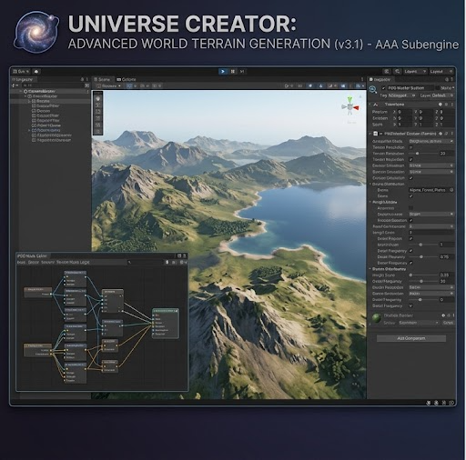

Universe Creator — Developer Manual
Procedural terrain and surface authoring for Unity 6 (6000.5.2f1), Universal Render Pipeline.
This is the complete reference for the system: what every window does, what every node does, what every input field on every node means, what every button and field in every inspector does, how the maths works, and what to do when something looks wrong.
Everything described here is implemented and compiles. Where a capability is deliberately absent, this manual says so rather than leaving you to discover it.
Table of contents
Getting started
- What this system is
- Requirements, installation and first run
- Quick start: your first world
- The hierarchy it builds
- Every menu entry
How the system works
- Architecture
- The generation pipeline
- World space, scale and coordinates
- Virtual chunking and the dual LOD system
- Asynchronous generation
The Node Graph
Node reference
- Creator nodes
- Modifier nodes
- Selector nodes
- Combiner nodes
- Climate and biome nodes
- Scatter nodes
- Utility nodes
- Output nodes
The Texture Graph
- The Texture Graph window
- Layer and texturing nodes
- Surface feature and PBR nodes
- Environment nodes
- Water appearance nodes
- Texture utility nodes
- Texture Graph output nodes
Inspectors
- The World inspector
- The Water Body inspector
- Runtime component inspectors
- Windows and menus — every window and every command
Systems
- Water authoring, physics and dynamics
- How water is built end to end: two chains, and both must be wired — read this first if a spawner produced nothing
- Vegetation, scatter and wind
- What decides which species goes where — the ecology layer: sites, species envelopes and world climate
- The environment sample: 37 readings at one point — what is measured on the ground, and why each reading exists
- The species envelope: what one prototype needs — every
Ecologyfield on a prototype, in real units - The 48 shipped species presets — fill an envelope in one click
- How suitability is scored — read this one if you read only one
- Canopy layers and the light stack — shade is three readings, not one
- Stand structure — crown spacing and self-thinning
- Allometry — instance size, and krummholz at the treeline
- Density is a ceiling, not a target — why you get fewer stems than you asked for
- Instancing, colliders and shadows — how an instance is delivered
- Seasonal appearance — budburst, senescence, colour and die-back
- The world-level ecology settings — every field that applies to every species
- Procedure: turning a prefab into a species — the six steps, and what to check when nothing appears
- Shaders and material properties
- Detail shader control surface — how grass cures and repigments, and which side owns the colour
- Performance and mobile budgets
Practice
- Recipes
- Debugging and troubleshooting
- Extending the system
- Dynamic lighting — capabilities and honest limits
- Geometric density — capabilities and honest limits
- Weather and climate
- Integrating an external path-authoring tool
- The two components — the provider, and the socket you enter a tool into
- The provider surface — all six members, with their failure returns
- The lifecycle — acquire, verify, request, release
- What Universe Creator guarantees — and what it does not
- Implementing a different path tool — the seven-point checklist
Appendices
- Appendix A — Mathematical reference
- Appendix B — Enumeration reference
- Appendix C — Diagnostics and self test
- Appendix D — Glossary
1. What this system is
Universe Creator is a node-based procedural terrain generator that drives Unity's native
Terrain component. You build a graph; the graph produces a heightfield, splatmaps,
detail layers, tree instances, holes and water; those results are written into
TerrainData and rendered by Unity's own terrain renderer.
Three consequences of that choice, and they shape everything else in this manual:
- The terrain is a real Unity Terrain. Unity's terrain inspector, its sculpt and paint brushes,
TerrainCollider, tree billboarding, detail patch instancing and theTerrainLayerasset workflow all work exactly as they always do. Nothing here is a custom mesh imitating a terrain. - You can hand-edit the result. Sculpting a generated terrain with Unity's brushes is supported and survives regeneration — see
Capture Manual Editsin the World inspector. - What you learn about Unity terrain still applies. Pixel error, basemap distance, detail density and draw distance mean here exactly what they mean in Unity's own terrain settings, because they are passed straight through.
The second half of the system is the Texture Graph: a separate node graph that
produces the material — terrain layers, splat rules, cliff and snow blending, wetness,
occlusion, water appearance — and writes a real Material asset plus TerrainLayer
assets onto the terrain.
The division of labour
| Graph | Answers | Writes |
|---|---|---|
| Node Graph | Where is the ground? Where is it steep, wet, high, forested? | TerrainData heightmap, splatmap, detail layers, tree instances, holes, water bodies |
| Texture Graph | What does the ground look like? | A Material, a TerrainLayer[], and baked occlusion / traction maps |
They are independent. A world can have a Node Graph and no Texture Graph (it renders with whatever material you assign), or a Texture Graph applied to a terrain that was sculpted entirely by hand.
The Living World layer (Module 3)
On top of the terrain-and-texture core, the system runs a Living World layer: a deterministic clock and sun/moon rig, a physically-driven sky and atmosphere, ten cloud types, a weather and climate simulation (wind, fronts, precipitation, fog, snow), an indirect-light system that reaches past a single ambient bounce, and an ecology layer that decides which species grows where and dresses it for the season. These are covered in:
- Vegetation, scatter and wind — the ecology layer.
- Weather and climate — the deterministic clock and sun/moon, the nine climate presets, and the physical chain from sunlight to rain, plus the read-only one-directional rule.
- Dynamic lighting — capabilities and honest limits — the sun, moon, sky, clouds and the indirect-light system, **stated against Lumen honestly**, including exactly where it is behind.
- Geometric density — capabilities and honest limits — prop LOD, impostors, micro-relief and the virtual splat cache, **stated against Nanite honestly**.
The layer is read-only over the world it observes: weather and light read terrain,
climate and season and render on top of them; they never rewrite TerrainData. All of it
runs in play mode only — nothing in this layer executes in the Scene view in edit mode.
What it does not do
Stated plainly so you do not go looking:
- Not literal Lumen, and not literal Nanite. The lighting system delivers dynamic GI, multi-bounce, heightfield-traced terrain occlusion and deterministic output, but it does not ray-trace arbitrary dynamic meshes and its reflections are screen-space only on the top tier — chapter 40 names every gap. The geometry layer delivers perceptual density by process, not a virtualised micropolygon rasteriser — chapter 41 names every gap. Where a competitor's feature is not matched, the manual says so rather than implying parity.
- No road or river spline mesh generator beyond the water surfaces described in chapter 33. Road integration is via
RoadCityMasterLinkerandTerrainHealer, which cooperate with a separate road tool. - No ECS, no Burst, no jobs, no
NativeArray. The entire system is standard managed C# over flatfloat[]arrays withSystem.Threading.Tasksfor parallelism. This is deliberate: it keeps the code portable, debuggable with a normal debugger, and free of package dependencies beyond URP. Do not add Burst attributes to node code.
2. Requirements, installation and first run
Requirements
| Requirement | Value | Why |
|---|---|---|
| Unity | 6000.5.2f1 or later | Uses Unity 6 terrain and GetEntityId() APIs |
| Render pipeline | Universal Render Pipeline | All shaders are URP. Built-in and HDRP will show magenta |
| Colour space | Linear | PBR maths in the shaders assumes it |
| Scripting backend | Mono or IL2CPP | No constraint either way |
| Platform | Desktop and mobile | Mobile budgets are covered in chapter 36 |
The project is entirely inside Assets/UniverseCreator/. Nothing is written outside it
except the material and layer assets the Texture Graph generates, which go to the folder
you choose on the Shader Output node.
No absolute paths
No script reads a hard-coded machine path. Every asset reference is a Unity asset reference or a project-relative path, so the project moves between machines, build servers and customers without editing anything.
First run
- Open the project in Unity 6000.5.2f1.
- If the console warns that the pipeline is not URP, run Tools ▸ Universe Creator ▸ Setup ▸ Configure URP Pipeline. This creates and assigns a URP asset if the project has none, and checks the terrain and water shaders can compile against it.
- Run Tools ▸ Universe Creator ▸ Run Self Test. It executes a large battery of internal checks — node registration, port typing, serialisation round-trips, maths identities, chunk indexing — and prints a pass/fail summary. It touches nothing in your scene. A clean run ends with
=== UC SELF TEST: PASS ===. - Run Tools ▸ Universe Creator ▸ Diagnostics ▸ Check Shaders to confirm the terrain and water shaders compiled and every property the C# side sets actually exists.
If all three are clean, the installation is sound.
3. Quick start: your first world
The five-minute version
- GameObject ▸ 3D Object ▸ Universe Creator ▸ Create New World. This creates a
UniverseCreatorGameObject with a pre-wired graph — Perlin Noise into Hydraulic Erosion into Height Output — and immediately generates. You have terrain. - Select the object. The inspector shows the world settings.
- Press
Rollbeside the Seed field a few times. Each press regenerates a different world at the same settings. This is the fastest way to understand what a setting does. - Open the graph. Press
Open Node Graphin the inspector, or double-click the graph asset. ChangeSizeon the Perlin node from 200 to 800 and click off the field. The terrain regenerates with much broader landforms. - Give it a material. In the graph window's sibling, the Texture Graph (Window ▸ Universe Creator ▸ Texture Graph), press
Create Full PBR Surface, thenApply to Terrain. The terrain is now textured with four layers, cliffs, snow, macro variation and wetness.
The three entry points, and when to use each
| Menu entry | Gives you | Use when |
|---|---|---|
Create New World | Object + pre-wired Simple Terrain graph, generates immediately | Learning; you want something on screen now |
Create New World (Empty Graph) | Object + graph containing only a Height Output node | You know what you are building |
Create New World (No Graph) | Object with no graph at all | You will assign an existing graph asset |
With No Graph, the inspector deliberately hides every world setting until a graph is
assigned — there is nothing to configure until something is driving the terrain.
The mental model
A graph is a pure function of world position. Every node, given the same world coordinates and the same seed, returns the same value — always, on any machine, in any order, from any thread. Chunks can therefore be generated independently and in parallel, and a chunk regenerated later is bit-identical to the first time.
This is why nodes sample absolute world coordinates, not chunk-local ones. A noise node at world position (1200, 4400) returns the same value whether that point is in the middle of chunk 3 or at the corner of chunk 7. It is also why nodes must never hold mutable state between evaluations.
4. The hierarchy it builds
Creating a world produces this:
UniverseCreator ← UniverseCreatorObject
├── Terrain ← parent of every native Terrain cell; no component
├── WaterSystem ← UCWaterSystemManager
├── VegetationSystem
├── WeatherSystem
├── LightingSystem
├── ChunkManager ← ChunkManager
│ └── Chunks ← container, one child per live chunk
│ ├── Chunk_0_0 ← Terrain + TerrainCollider
│ │ ├── (scatter objects) ← prefab instances, when an Object/Rock scatter is used
│ │ └── UC_Tunnel_Shell ← only where the graph cuts holes
│ ├── Chunk_0_1
│ └── …
└── RoadCityMasterLinker ← the Module 7 bridge to Road & City Master
Terrain carries no component of its own and its inspector is empty. That is deliberate:
the cells beneath it are real Unity Terrains with their own full native inspectors, and a
manager on the parent would only be a second place to change the same numbers the World
inspector already owns.
WaterSystem is the one manager wired to something today — see
chapter 31. The vegetation, weather and lighting
children belong to modules still being built; their inspectors say so and draw their
fields disabled, with the exception of wind, which is live.
Every water body in the world is a child of WaterSystem, whichever route made it, and the
names are how the system tells them apart:
WaterSystem ← UCWaterSystemManager
├── Ocean 1 ← UCWaterBody, spawned by the Hydrology Spawner
├── Lake 1 ← spawned
├── River 2 ← spawned
├── River 2 Distributary 1 ← spawned
└── Lake ← the one you dropped from the menu
A trailing index (Lake 1, River 2, Tributary 5, Outlet 1, and any of those with a
Distributary N) means the generator owns it: it may re-fit, re-count or remove that body on a
regeneration, and it can be pinned with Save Placement. A bare or custom name (Lake, My
Pond, Unity's Lake (1)) is yours, and the generator never touches it. The same name test is
what lets Source disable one route's bodies without touching the other's.
Water adds objects of its own, at the world root rather than under a chunk, because a lake may straddle a chunk boundary:
UniverseCreator
├── UC_Water_<id> ← MeshFilter, MeshRenderer, UCWaterVolume
└── UC_WaterHorizon_<id> ← the skirt that extends the sea past the world edge
Everything the generator creates is marked HideFlags.DontSave. Generated geometry never
enters your scene file. Reopening the scene rebuilds it from the graph. This keeps scene
files small and merge conflicts rare, and it is the reason you should never hand-edit the
generated GameObjects — the next regeneration discards them.
The exception is manual sculpting on the terrain itself, which is captured and
replayed. See Capture Manual Edits in chapter 29.
5. Every menu entry
GameObject ▸ 3D Object ▸ Universe Creator
| Entry | Effect |
|---|---|
Create New World | Object, Simple Terrain graph, generates at once |
Create New World (Empty Graph) | Object, graph with only a Height Output |
Create New World (No Graph) | Object only |
Water ▸ Ocean | A UCWaterBody set to Ocean at the scene view's pivot |
Water ▸ Lake | A UCWaterBody set to Lake |
Water ▸ River (Spline) | A UCWaterBody set to River with a seeded course you drag into shape |
Water ▸ Pool | A UCWaterBody set to Pool |
The four water entries are also buttons on the Water System Manager inspector, and both routes run the same code — a body created from the inspector is identical to one created from this menu, except that it is parented to the manager and picks up its defaults.
Window ▸ Universe Creator
| Entry | Effect |
|---|---|
Node Graph Editor | Opens the terrain graph canvas |
Texture Graph | Opens the material graph canvas |
World Settings | World settings as a dockable window rather than in the inspector |
About | Version and system information |
Tools ▸ Universe Creator
| Entry | Effect |
|---|---|
Run Self Test | Full internal check battery; prints a pass/fail summary |
Diagnostics ▸ Check Shaders | Verifies shaders compiled and every property the C# sets exists |
Diagnostics ▸ Repair Graphs | Clears references to node scripts that no longer exist |
Setup ▸ Configure URP Pipeline | Creates/assigns a URP asset and validates the shaders against it |
Assets ▸ Create ▸ Universe Creator
| Entry | Effect |
|---|---|
Graph (Empty) | Graph asset containing only a Height Output |
Graph (Simple Terrain) | Perlin → Hydraulic Erosion → Height Output |
Texture Graph (Empty) | Texture graph containing only a Shader Output |
Texture Graph (Basic Surface) | Four albedo layers, splatted, budgeted, written |
Texture Graph (Full PBR Surface) | Basic Surface plus cliff, macro variation, snow, wetness, distance fade, colour grade |
There is no separate top-level menu group for ported capabilities. Every capability lives in the category it belongs to — a scatter node is under Scatter, an erosion node under Modifiers — so there is one place to look for any given kind of node.
6. Architecture
Two assemblies
| Assembly | Location | Contains |
|---|---|---|
UniverseCreator | Core/Runtime/ | Nodes, evaluation, chunk management, water, scatter, optimisation |
UniverseCreator.Editor | Core/Editor/ | Windows, inspectors, drawing, diagnostics, menus |
The runtime assembly is built into your game. The editor assembly is not, and can never be referenced from runtime code.
This split has one operational consequence worth internalising: the runtime assembly compiles first. If a runtime script has an error, the editor assembly is never compiled at all — so your windows and inspectors silently revert to the last good build, or vanish. If an editor change appears to have had no effect, look for a runtime compile error first. This is the single most common source of "my change did nothing".
Threading model
| Runs on | What |
|---|---|
| Background thread | Node evaluation. All of it. Pure float[] maths |
| Main thread | Every Unity API call: TerrainData writes, mesh construction, object instantiation |
Node Evaluate code must never touch a Unity object. No Debug.Log, no Time.time, no
Random.Range, no Texture2D.GetPixel during evaluation. Texture-sampling nodes read
pixel data that was copied to a managed array on the main thread before the pass began.
Nodes must also be stateless between evaluations. Fields are settings; they are read, never written, during evaluation. A node that caches results into an instance field will produce wrong output the moment two chunks evaluate it concurrently — and it will do so intermittently, which is the worst kind of bug to chase.
Determinism
Given the same graph, seed and world position, the output is identical:
- across runs,
- across machines,
- regardless of how many chunks are generating concurrently,
- regardless of the order chunks are generated in.
Every stochastic node takes an explicit seed field. Nothing uses UnityEngine.Random,
whose global state is shared and thread-hostile. Hash functions are integer-based and
position-derived.
The evaluation cache
Within a single chunk pass, each node is evaluated once, and its result is reused by
every downstream consumer. Wiring one Perlin node into six places costs one Perlin
evaluation, not six. This is why Shared Value and Portal In/Out are cheap, and why
splitting a wire is always preferable to duplicating a node.
Where the Living-World layer lives
The Module 3 systems sit inside the same runtime assembly, in their own folders, each with one manager component an author adds to the scene and a set of plain classes behind it. This is the map from a feature to the file that owns it, and to the inspector that drives it.
| Subsystem | Runtime folder | The component you add | Its inspector (chapter) |
|---|---|---|---|
| Weather and climate | Runtime/Weather/, presets/tiers in Runtime/Terrain/ | UCWeatherSystemManager | Weather inspector (ch. 42) — owns the clock, latitude, presets |
| Ecology and scatter | Runtime/Ecology/, scatter in Runtime/Terrain/ | UCVegetationSystemManager | World inspector (ch. 29), ecology in ch. 34 |
| Sky, sun/moon and indirect light | Runtime/Lighting/ | UCLightingSystemManager | ch. 40 |
| Geometric density and painting | Runtime/Geometry/ | driven by the World inspector's quality tier | ch. 41 |
Two rules the manifest encodes. First, the weather manager owns the clock and the latitude;
the lighting and vegetation managers read them through ResolveClock() and never declare their
own copy, so a world cannot have its sun over one hemisphere and its forest in the other. Delete
the weather manager and both fall back to a documented default (latitude 45°, longitude 0°) with
a visible notice on the inspector. Second, preset and tier tables live in Runtime/Terrain/,
not in the Weather/ or Ecology/ folders, because those folders forbid bare domain literals
and a preset table is nothing but literals; the numbers sit in the exempt folder and feed the
pure physics through a request struct, so no physics file gains a magic number.
Everything here compiles into your game. The matching inspectors and the self-test live in the
editor assembly (Core/Editor/) and are never shipped in a build.
7. The generation pipeline
A chunk goes through these stages in order. Understanding this order explains most "why is my node not doing anything" questions.
1. Coordinate setup. The chunk's world origin, world size and sample resolution are computed. Every sample position is derived here in absolute world metres.
2. Ghost margin allocation. The working buffers are allocated larger than the chunk — a border of extra samples is generated beyond each edge. Any node with a spatial radius (blur, erosion, distance field, thermal talus) reads into this margin. Without it, an erosion pass would see a hard wall at the chunk edge and pile sediment against it, producing a visible seam on every boundary. The margin is trimmed off before the result is written. This is why chunk edges match seamlessly.
3. Graph evaluation. Nodes are evaluated in dependency order, on a background thread,
into flat float[] buffers. Results are cached per node for this pass.
4. Output collection. Output nodes write into an output bag: heightmap, splat weights, detail layers, tree instances, hole mask, water body descriptions, custom meshes.
5. Margin trim and clamp. The ghost margin is discarded. Heights are clamped to [0,1].
6. Manual edit replay. If the chunk has captured manual sculpting and Capture Manual
Edits is on, that delta is re-applied on top of the generated heights.
7. Main-thread apply. TerrainData receives heights, alphamaps, detail layers, tree
instances and holes. Colliders are rebuilt if enabled. Scatter prefabs are instantiated.
Water meshes are built. Tunnel shells are built where holes were cut.
8. Neighbour stitching. Adjacent terrains are told about each other so Unity's LOD system does not crack the seam between them.
What this ordering implies
- A node's spatial reach must stay within the ghost margin or a seam appears. Very large blur radii and very long erosion runs are the practical limits here.
- Output nodes are terminals. Nothing reads from them.
- Anything that needs a Unity object — a
Terrainreference, a prefab — is resolved on the main thread, before or after evaluation, never during.
8. World space, scale and coordinates
One unit is one metre
Every distance in this system is metres. A Size of 200 on a noise node means the noise
repeats every 200 metres of world. Tile Size Metres of 8 means a texture repeats every 8
metres. Snowline Altitude of 2000 means 2000 metres above world zero.
This is worth stating because it is what makes settings transferable. A rock texture tiled at 6 m looks the same on a 2 km world and a 40 km world. A noise size of 800 m gives hills of the same physical scale in both. Changing world size does not invalidate your graph.
The height mapping
Node values are normalised 0..1. Height Output multiplies by Height Scale to get
metres, and the terrain's own Max Height Meters defines what 1.0 means in the world.
world height in metres = normalised value × maxHeightMeters
A value of 0.5 on a world with Max Height Meters 600 is 300 m. If your terrain looks
flat, the usual cause is that the graph's output occupies a narrow band — say 0.45 to 0.55
— and needs a Levels or Normalize node to use the full range.
Normalised versus world units
Several nodes offer a Units enum, and choosing wrongly is a common mistake:
| Mode | Meaning | Use when |
|---|---|---|
Map / Pixels | Values are 0..1 of world height, or samples of resolution | The setting should scale with the world |
World | Values are metres | The setting is physical — a real snowline, a real shoreline width |
Prefer World for anything that models something real. A shoreline band of 12 metres is
12 metres on any world; a shoreline band of "0.01 normalised" is 6 m on one world and 120 m
on another.
The world origin, and why floating-point precision matters
World Origin Offset shifts the whole world in the noise domain without moving the
GameObject. Two uses:
- Explore. Nudging the offset slides the world under you, revealing different terrain from the same graph and seed.
- Precision. Very distant coordinates lose floating-point precision, which shows up as stair-stepping or shimmer in the terrain. The
Move World To Originbutton in the inspector re-centres the GameObject at (0,0,0) and pushes the difference into the offset, so the terrain is unchanged but the coordinates are small again.
9. Virtual chunking and the dual LOD system
The 25+1 grid
The world is divided into a grid of chunks — by default 5 × 5 = 25 — plus a buffer ring outside it. Only chunks near the focus point are live. As the focus moves, chunks are recycled from the trailing edge to the leading edge rather than created and destroyed. This keeps allocation flat during play.
| Setting | Default | Meaning |
|---|---|---|
Chunk Count Per Side | 5 | Chunks across the grid. 5 gives the 25-chunk layout |
High LOD Ring Size | 3 | Size of the centre square kept at full fidelity. 3 gives 9 high-detail chunks |
Buffer Ring Width | 1 | Extra ring generated outside the grid, ahead of the camera |
Recenter Threshold | 0.5 | Metres of travel toward a chunk edge before the grid recentres |
Two levels of detail
| Level | Resolution | Collider | Used for |
|---|---|---|---|
| High | Full Resolution | Yes | The centre ring — where the player is |
| Low | Reduced | No | Everything else — silhouette only |
A chunk crossing from low to high is regenerated at full resolution and given a collider. Because generation is deterministic, the high-resolution version agrees exactly with the low-resolution one — the shape does not shift as you approach it.
Colliders exist only at high LOD. This is the single biggest CPU saving in the system; terrain collider baking is expensive and pointless for terrain a kilometre away.
The wireframe stand-in
While a chunk generates, a low-poly wireframe box is drawn in its place, so you can see
that work is happening rather than staring at a hole. Controlled by Wireframe Preview
in the inspector, and coloured by Wireframe Preview Colour on ChunkManager.
The slice map
Show Slice Map on ChunkManager draws the chunk boundaries over the terrain. Turn it on
when you are diagnosing a seam, a LOD pop, or an erosion artefact, so you can tell whether
the feature lines up with a chunk edge. If it does, you have a ghost-margin problem; if it
does not, the node itself is at fault.
10. Asynchronous generation
Generation runs off the main thread and yields periodically so the editor stays responsive. You can keep working while a world builds; the editor does not lock, and no modal dialog ever blocks you.
The debounce
When you commit a change, the system waits briefly before starting work. If another change lands inside that window, the timer restarts. Dragging a slider therefore produces one regeneration when you let go, not sixty during the drag.
Cancellation
Starting a new generation cancels the one in flight. Each chunk task checks a stop token between stages and abandons cleanly. Cancelled work is discarded rather than applied, so a half-finished pass never reaches the terrain.
The Cancel button in the inspector is enabled only while generating, and stops the
current pass immediately.
Concurrency
Max Concurrent Chunks caps how many chunks build at once. Higher finishes a large world
sooner and makes the editor less responsive while it does. 4 is a good desktop default; 2
is kinder on a laptop; 1 is useful when debugging, because it makes the order of operations
deterministic and the console readable.
Preview quality
Preview Quality sets the resolution used for interactive regeneration:
| Setting | Behaviour |
|---|---|
Draft | Reduced resolution. Fast enough to iterate against continuously |
Full | Final resolution every time |
Draft is for shaping a graph; switch to Full to judge the result. Erosion nodes in particular behave differently at different resolutions — a droplet count tuned at draft resolution will read as under-eroded at full resolution, because the same number of droplets is spread over four times as many samples.
11. The Node Graph window
Window ▸ Universe Creator ▸ Node Graph Editor, or Open Node Graph in the inspector,
or double-click a graph asset.
The toolbar
| Button | What it does |
|---|---|
Add Node | Opens the searchable node palette at the cursor |
Frame All | Zooms and pans so every node is visible. The fastest way to recover from getting lost |
Save | Writes the graph asset to disk |
Export | Writes the graph to a portable JSON file |
Import | Loads a graph from JSON, replacing the current contents |
The toolbar also shows the loaded graph's name, and a status line reporting node and connection counts.
Export and Import exist for sharing graphs outside the project — sending a terrain to a
colleague, version-controlling a graph as readable text, or moving one between projects
without carrying the .asset and its GUID. The JSON is the same data the asset holds.
When no graph is loaded
The window shows two buttons: Create Empty Graph and Create Simple Terrain Graph. Both
create an asset, open it, and leave you ready to work.
Canvas navigation
| Action | Gesture |
|---|---|
| Pan | Middle-drag, or Alt + left-drag |
| Zoom | Scroll wheel |
| Select | Click a node |
| Multi-select | Drag a marquee on empty canvas, or Ctrl/Cmd + click |
| Move | Drag a node's header |
| Add node | Right-click empty canvas, or Add Node |
| Delete | Select and press Delete |
| Duplicate | Ctrl/Cmd + D |
| Connect | Drag from an output port to an input port |
| Disconnect | Drag the wire off the input, or select the wire and delete it |
| Frame all | Frame All |
Dropping a wire on empty canvas opens the node palette filtered to nodes that accept that port type. This is the fastest way to build a graph: pull from an output, release, pick from the shortlist.
Node anatomy
Each node is a rounded rectangle with a coloured header. The header colour is its category, so a graph is readable at a glance:
| Category | Role |
|---|---|
| Creator | Produces a field from nothing — noise, shapes, imports |
| Modifier | Transforms a field — erosion, blur, curves, warps |
| Selector | Produces a mask from a field — by height, slope, aspect, flow |
| Combiner | Merges two fields |
| Biome | Climate modelling and biome classification |
| Scatter | Places instances — trees, rocks, grass, props |
| Utility | Organisation and arithmetic |
| Output | Terminals that write results |
| Texture / Surface / Water | Texture Graph categories |
Input ports are circles on the left, output ports circles on the right. Below the ports are the node's input fields.
Comment groups
The Comment Group node draws a labelled, tinted frame. Dragging its header moves
everything inside it. Use them to separate a graph into stages — a base-shape group, an
erosion group, a masking group, an output group — because a fifty-node graph without them
is unreadable a month later.
12. Ports, wires and data types
A port has a type. Wires only connect compatible types; incompatible drags are refused, which prevents whole classes of error at authoring time.
| Type | Carries | Typical producers |
|---|---|---|
Matrix | A heightfield — one float per sample | Creators, Modifiers |
Layer | A mask, 0..1 | Selectors |
Splat | Multi-channel layer weights | Splat outputs |
Color | RGBA | Texture graph |
Scalar | A single value, not a field | Shared Value, Random Seed |
Gradient | A colour ramp | Colour Gradient |
Surface | An accumulating material description | Texture graph surface nodes |
Texture | A texture plus its sampling settings | Texture Sampler, Noise Texture |
UV | Tiling, offset and rotation | UV Scaler |
Water | A water body description | Water outputs |
Matrix and Layer are both fields of floats; the distinction is intent. A Matrix is
terrain height. A Layer is a mask — a weight, a coverage, a selection. Keeping them
separate stops you wiring a slope mask into a height output by accident.
Unconnected inputs
An unconnected input falls back to the node's own field value. That is why most nodes are
useful with nothing wired in — a Blend node with no B input blends against its default.
This makes a graph testable at every stage: wire a Preview node in anywhere and look.
An input port accepts one incoming wire (last write wins). An output port may fan out
to many inputs — the same height can feed an erosion pass, a preview, and a splat
output at once. This is fixed in code: every input port is declared allowMultiple: false,
every output allowMultiple: true.
Port sets by category — what a node has before it declares anything
Most nodes never declare ports of their own. They inherit a fixed port set from their
category base class (Core/Runtime/Nodes/Base/NodeCategories.cs), so the shape of a node
is decided by which family it belongs to. These five sets are the vocabulary the rest of
this reference is written against:
| Category base | Inputs | Outputs |
|---|---|---|
CreatorNode | (none) | Height (Matrix) |
ModifierNode | Height (Matrix) | Height (Matrix) |
SelectorNode | Height (Matrix) | Mask (Matrix) |
CombinerNode | A, B, Mask (all Matrix) | Height (Matrix) |
OutputNode | Height (Matrix) | (none — terminal) |
A Combiner with only one of A/B wired passes that side straight through rather than
collapsing to flat; Mask is optional and, when wired, chooses per-pixel between the two.
A Selector reads Height but never writes it — it emits a Mask in 0..1.
The Texture Graph adds its own currencies (Layer, Splat, Colour, Scalar,
Gradient, Surface, Texture, UV, Water), declared in TexturePorts. The recurring
shape there is the surface chain: a node takes one Surface in, adds one thing, and
hands one Surface out — so the order of feature nodes in the graph is the order the
shader applies them.
Nodes that declare their own ports
The nodes below are the exceptions — they override GetInputs() / GetOutputs() because
their data flow does not fit the category default. Ports are listed exactly as the code
declares them (name, type, direction). Everything not listed here uses its category default
from the table above.
Creators. Every noise and shape creator inherits the CreatorNode default — nothing in,
one Height out. That covers Perlin Noise, Simplex Noise, Value Noise,
Billow Noise, Ridged Noise, Marble Noise, Swiss Noise, Curl Noise,
Caustic Noise, Ridged Multifractal, Hybrid Multifractal, Voronoi, Constant,
Simple Form, Spot Brush, Tectonic Plates, Continental Shape Mask,
Latitude Gradient, Import Heightmap and Real-World Import. Six creators declare more:
| Node | Inputs | Outputs |
|---|---|---|
| Domain Warp Field | (none) | Warp X, Warp Z (Matrix) |
| Tectonic Plate Seed | (none) | Height, Boundary, Plate Id (Matrix) |
| Prevailing Wind | (none) | Wind X, Wind Z (Matrix) |
| Hydrology Spawner | Height (Matrix) | Lake Mask, River Mask (Matrix) |
| Random Seed | (none) | Seed (Scalar) |
| River Source Seed | Height, Precipitation (Matrix) | Mask (Matrix) |
These six are the graph's real starting points for the physical chains. Prevailing Wind's
Wind X / Wind Z are what the Precipitation Field and Rain Shadow Solver inputs of the
same name expect — that pair is how a rain shadow knows which side of a range is wet.
Domain Warp Field exists as two outputs rather than one because a warp is a vector: its
Warp X and Warp Z feed the matching inputs on Domain Warp Apply. Tectonic Plate Seed
hands Boundary and Plate Id to the geology modifiers that raise ranges along a boundary.
Random Seed emits a Scalar, not a field — wire it into many nodes' seed inputs so one
roll re-rolls a whole subsystem coherently.
Modifiers. Almost every modifier is the plain Height-in / Height-out shape, pulled
through a 16-pixel ghost margin so a blur or an erosion pass has neighbours to read at a
chunk seam. That covers Blur, Sharpen, Clamp, Invert, Power, Contrast, Curve,
Levels, Terrace, Ledge, Direction, Parallax, Distort, Domain Warp,
Thermal Erosion, Hydraulic Erosion, Wind Erosion, Coastal Erosion,
Droplet Erosion, Glacial Carve, Lithology Erosion, Sediment Map,
Slope Remap Curve, Fault Line Displacement, Coastal Shelf Shaper and
World Edge Falloff. Two declare their own ports:
| Node | Inputs | Outputs |
|---|---|---|
| Domain Warp Apply | Height, Warp X, Warp Z (Matrix) | Height (Matrix) |
| Voronoi Rock Strata | Height (Matrix) | Height, Rock Type (Matrix) |
Domain Warp Apply is the second half of the pair the PDF described as one node: a warp is a
vector field, so Domain Warp Field produces Warp X and Warp Z and this node consumes
both alongside the height it displaces. Voronoi Rock Strata emits Rock Type beside the
height so downstream splat and erosion nodes can treat different rock differently — that is
the field Lithology Erosion and the splat output want.
Selectors. Every stock selector (Slope, Cavity, Aspect, Curvature,
Noise Mask, Texture Import Mask, Flow Map, Height, Distance Field) inherits the
SelectorNode default: Height in, Mask out. One overrides its inputs:
| Node | Inputs | Outputs |
|---|---|---|
| Composite Filter | Height (Matrix), Mask (Matrix) | Mask (Matrix) |
Composite Filter takes an existing mask alongside the height so it can AND/OR several
selection passes into one — the second input is another selector's Mask output.
Combiners. All five combiners (Blend, Maximum, Minimum, Weighted Average,
Mask Mix) inherit the CombinerNode default unchanged: A, B, Mask in, Height out.
Normalize is filed as a Combiner but is built on ModifierNode, so it has the single
Height-in / Height-out shape, not the three-input one. No combiner declares custom ports.
Climate and biome fields. These are where "nothing is random" begins — each reads real
physical fields and emits classified or derived ones. The wiring is the point: a
temperature field and a moisture (or precipitation) field feed a classifier, whose Biome
/ Biome Id output then drives scatter and splat.
| Node | Inputs | Outputs |
|---|---|---|
| Temperature Map | Height (Matrix) | Height (Matrix) (field carried as Matrix) |
| Moisture Map | Height (Matrix) | Height (Matrix) (field carried as Matrix) |
| Biome Mask | Height (Matrix) | Mask (Matrix) |
| Precipitation Field | Height, Wind X, Wind Z, Temperature (Matrix) | Mask (Matrix) |
| Rain Shadow Solver | Height, Wind X, Wind Z, Precipitation (Matrix) | Shadow, Adjusted Precip (Matrix) |
| Biome Classifier | Temperature, Moisture (Matrix) | Biome (Matrix) |
| Koeppen Biome Classifier | Temperature, Precipitation, Height (Matrix) | Biome Id, Class Mask (Matrix) |
| Whittaker Biome Classifier | Temperature, Precipitation, Height (Matrix) | Biome Id, Class Mask, Vegetation Density (Matrix) |
| Seasonal Variation Driver | (none) | Season (Scalar), Temp Offset, Moisture Offset (Matrix) |
| Snowline Altitude Solver | Height, Temperature, Season (Matrix) | Snow Mask, Snowline (Matrix) |
Season off the Seasonal Variation Driver is one of only two Scalar ports in the terrain
graph (the other is Random Seed's Seed) — a single value, not a field — because a season
is one number for the whole world; it drives the Snowline Altitude Solver's Season input
and the offset fields tint every climate field for time of year.
Hydrology and water fields. These thread water descriptions between each other:
Water Mask, Water Level and Depth produced by one are consumed by the next, ending at
the water/splat outputs. Several are filed under Selectors\ but declare Modifier intent
where they carve height.
| Node | Category | Inputs | Outputs |
|---|---|---|---|
| River Network Trace | Selector | Height (Matrix) | River Mask (Matrix) |
| River Carve | Modifier | Height, River Mask (Matrix) | Height (Matrix) |
| Ocean Level | Selector | Height (Matrix) | Water Mask, Depth, Shoreline (Matrix) |
| Lake Fill | Selector | Height, Lake Mask (Matrix) | Water Mask, Depth, Water Level (Matrix) |
| River Fill | Selector | Height, River Mask (Matrix) | Water Mask, Depth, Water Level (Matrix) |
| Water Bank Seat | Modifier | Height, Water Level, Water Mask (Matrix) | Height (Matrix) |
| Watershed Basin Segment | Selector | Height (Matrix) | Basin Id, Divides, Basin Size (Matrix) |
| Groundwater Wetland Mask | Selector | Height, Water Mask (Matrix) | Mask (Matrix) |
| Underwater Terrain Extend | Modifier | Height (Matrix) | Height (Matrix) |
| Ecology | Selector | Height (Matrix) | Soil Moisture, Wetness Index, Aridity, Wind Exposure, Light, Zone Id, Zone Mask (Matrix) |
A canonical hydrology chain: River Network Trace → its River Mask feeds both
River Carve (to cut the channel into Height) and River Fill (to compute Water Mask
/ Water Level); Water Bank Seat then reads that Water Level to flatten the banks. The
Ecology node fans one height into seven physical fields that the vegetation system reads.
Utility. Comment Group has no ports (it is annotation only). Shared Value and
Portal In emit Height with no input; Preview and Portal Out take Height
(Preview also passes it through). Math is the one with a second input:
| Node | Inputs | Outputs |
|---|---|---|
| Math | A, B (Matrix) | Height (Matrix) |
Scatter. Scatter nodes are terminal on their own branch: the ScatterNodeBase default
is Height + Mask in, no output — they write TreeInstance / DetailPrototype data
into the tile rather than passing a field on. The placement nodes (Tree Scatter,
Rock Scatter, Object Scatter, Shrub Scatter, Grass Detail, Underwater Scatter,
Debris Scatter, Poisson Disc Scatter, Species Instance Resolver) all inherit that
default. The density and bias nodes that feed a scatter node's Mask input declare their
own ports:
| Node | Inputs | Outputs |
|---|---|---|
| Biome Density Table | Biome Id, Moisture (Matrix) | Mask (Matrix) |
| Slope Altitude Exclusion | Density, Height (Matrix) | Mask (Matrix) |
| Exclusion Mask | Density, Exclusion (Matrix) | Mask (Matrix) |
| Cluster Grove Bias | Height (Matrix) | Mask (Matrix) |
| Wind Sway Parameter Bake | Height, Wind X, Wind Z, Vegetation (Matrix) | Sway Amplitude, Sway Phase (Matrix) |
| Ground Cover Colour Tint | Height, Moisture, Biome Id (Matrix) | Tint R, Tint G, Tint B (Matrix) |
The density chain reads left to right: a classifier's Biome Id and a moisture field enter
Biome Density Table; its Mask (a per-species density) passes through
Slope Altitude Exclusion and Exclusion Mask (which subtract road and water masks), and
the surviving Mask becomes the scatter node's Mask input. Wind Sway Parameter Bake's
two outputs are consumed downstream by the Wind Output node, not by a scatter node.
Outputs. An output node is terminal: it consumes fields and writes them into the tile's
output bag for the main thread to apply, and has no output port. The OutputNode
default is a single Height in. Those with more than one input declare their own:
| Node | Inputs | Outputs |
|---|---|---|
| Height Output | Height (Matrix) | (terminal) |
| Grass Output | Height (Matrix) | (terminal) |
| Holes Output | Height (Matrix) | (terminal) |
| Normal Map Output | Height (Matrix) | (terminal) |
| Custom Mesh Output | Height (Matrix) | (terminal) |
| Texture Output | Layer 0, Layer 1, Layer 2, Layer 3 (Matrix) | (terminal) |
| Biome Splat Output | Height, Biome, Wetness, Override (Matrix) | (terminal) |
| Wind Output | Sway Amplitude, Sway Phase (Matrix) | (terminal) |
| Weather Output | Precip Bias, Temperature Bias, Wind Bias, Fog Bias, Cloud Bias, Snow Bias, Storm Bias, Turbidity Bias (Matrix) | (terminal) |
| Lighting Output | Sky Tint, Ambient Scale, Turbidity, Cloud Cover Bias, Exposure Bias (Matrix) | (terminal) |
Two Module-3 nodes are filed as Utility in code but behave as field outputs — they emit
several derived fields rather than terminating:
| Node | Inputs | Outputs |
|---|---|---|
| Lithology Output | Height (Matrix) | Unit Index, Cover Depth, Grain Size, Erodibility (Matrix) |
| Micro-Relief Output | Height (Matrix) | Offset (mm), Dominant Process (Matrix) |
Biome Splat Output is the terrain graph's counterpart to the Texture Graph's
Shader Output: the Biome field from a classifier chooses which terrain layer covers each
pixel, Wetness darkens it, and Override lets a hand-painted mask win locally. Wind,
Weather and Lighting Output are the seams where the terrain graph hands biased fields to
the three live Module-3 managers.
Hydrology Spawner (a Creator, Height in, Lake Mask + River Mask out) is where a
procedural water branch begins. Feed it the terrain height that the water should follow. Its
two masks describe the same lake basins and river courses used for the water bodies it spawns;
they can be sent directly to the river and lake shaping nodes, or used to restrict Lake Fill
while River Network Trace is used for an independently tuned network.
Texture Graph nodes and their ports
Every Texture Graph node's ports, as declared. Surface-chain nodes (one Surface in, one
Surface out) are the backbone; the rest either open the chain (no input) or branch it.
| Node | Inputs | Outputs |
|---|---|---|
| Terrain Height Source | (none) | Height (Matrix) |
| Snow Cover | Surface, Height (Matrix) | Surface, Snow Mask (Matrix) |
| Wetness | Surface | Surface |
| Mud and Dirt | Surface | Surface |
| Occlusion Map | Surface, Height (Matrix) | Surface |
| Roughness Map | Surface | Surface |
| Metallic Map | Surface | Surface |
| Emission | Surface | Surface |
| Cliff Surface | Surface | Surface |
| Macro Variation | Surface | Surface |
| Distance Fade | Surface | Surface |
| Colour Grade | Surface | Surface |
| Colour Gradient | Surface | Surface, Gradient |
| Detail Texture | Surface | Surface |
| Vegetation Colour | Surface | Surface |
| Albedo Layer | Texture, UV | Layer |
| Normal Map Layer | Layer, Normal (Texture), Mask (Texture) | Layer |
| Triplanar Mapping | Layer | Layer |
| Height Blend | Splat | Splat |
| Texture Splat | Layer 0, Layer 1, Layer 2, Layer 3 | Splat |
| UV Scaler | UV | UV |
| Texture Sampler | (none) | Texture |
| Noise Texture | (none) | Texture |
| Colour Math | A, B (Colour) | Colour |
| Water Surface | (none) | Water |
| Water Foam | Water | Water |
| Caustics | Water | Water |
| Terrain Blend Final | Surface, Splat, Water | Surface |
| Shader Output | Surface | (none — terminal) |
Shader Output is the one terminal node of the Texture Graph: it consumes the finished
Surface and applies it to the über-shader. Terrain Blend Final is where the three
branches — the surface chain, the Splat (which layers cover the ground), and the Water
description — merge before that final output.
13. How input fields behave
Focus-out commit
Numeric and text fields commit when you leave the field — click elsewhere, press Tab,
or press Enter — not on every keystroke. Typing 1500 in a field does not trigger four
regenerations at 1, 15, 150 and 1500.
Sliders commit on release, not during the drag.
Live tooltips
Hovering a field shows its tooltip. The tooltips are the same text as this manual's field descriptions, so the manual and the UI cannot drift apart.
Undo
Every field edit is a discrete undo step, correctly named. Ctrl/Cmd + Z reverts the edit and regenerates.
Ranges
Fields with a [Range] show a slider clamped to that range. Fields without one accept any
value, including values that are physically silly — a talus angle of 89° or a Manning
roughness of 2.0 will be accepted. The system does not stop you; the manual tells you what
is realistic. Where a value has a real-world plausible band, this manual gives it.
Seeds
Every stochastic node has its own seed. Two nodes with the same seed and the same
settings produce the same pattern — occasionally what you want, usually not. If two noise
fields look suspiciously correlated, check that their seeds differ.
The Random Seed node exists to share one seed across many nodes, so that rolling one
value re-rolls a whole subsystem coherently.
14. Creator nodes
Creators produce a field from nothing. They are the start of every graph.
The shared noise parameters
Nine noise creators — Perlin, Simplex, Value, Billow, Ridged, Marble, Swiss, Curl, Caustic — share a common parameter block. These fields mean the same thing on all of them:
| Field | Default | Meaning |
|---|---|---|
Seed | 12345 | Pattern selector. Change it for a different world at identical settings |
Size | 200 | World metres per noise period. The single most important dial. 50 is rocky detail; 200 is hills; 1000+ is continental form |
Octaves | 6 | How many layers of detail are summed. Each is half the amplitude and double the frequency. Cost is linear — 8 octaves costs twice 4 |
Detail | 0.5 | Per-octave amplitude falloff (persistence). 0.5 is classic fBm. Lower is smoother; higher is noisier and can exceed the range |
Turbulence | 0 | Folds the noise by taking absolute values, creating creases. 0 is smooth, 1 is fully folded |
Intensity | 1 | Output multiplier |
Offset | 0 | Added after intensity. Use to lift a field off zero |
World Offset | (0,0) | Slides the noise pattern in world space without moving anything else |
Octaves and Size interact. Adding octaves adds finer detail; it never adds broader
detail. If the terrain has no large-scale form, raise Size, do not raise Octaves. If
the terrain has form but is too smooth up close, raise Octaves.
The practical ceiling is where an octave's wavelength falls below one sample. Beyond that
you are paying for detail the heightmap cannot store — it will alias into noise. At 4 km
across 257 samples you have roughly 15 m per sample, so a Size of 200 with 6 octaves puts
the finest octave at about 6 m: already past the point of return.
The nine noise types
| Node | Character | Best for |
|---|---|---|
| Perlin Noise | Improved Perlin with fBm octaves | The general-purpose base. Start here |
| Simplex Noise | Gustavson simplex | Same role as Perlin with fewer axis-aligned artefacts. Prefer it where you see grid structure |
| Value Noise | Interpolated lattice | Softer, blobbier. Gentle hills, cloud-like masks |
| Billow Noise | Absolute-value folded | Puffy, rounded forms. Dunes, rolling hills, clouds |
| Ridged Noise | Inverted folded noise | Sharp crests. Mountain ranges |
| Marble Noise | Folded bands | Sedimentary strata, canyon layering |
| Swiss Noise | Erosion-like turbulence | Ridges that fan along their own slope. Looks pre-eroded |
| Curl Noise | Divergence-free flow field | Wind-scoured sand, swept snow, flow patterns |
| Caustic Noise | Folded cell web | Cracked mud, playa, lava crust |
Type-specific extras:
- Value Noise —
Interpolation(Quinticdefault,Cubic): the filter between lattice points. Cubic costs roughly 4× Quintic for a marginal difference. Leave it. - Billow, Ridged —
Sharpness(2.0): crest sharpness. Higher is knife-edged.Weight Falloff(0.8) on Ridged: how strongly each octave is weighted by the one above, which is what makes ridges continuous rather than a pile of independent noise. - Marble —
Band Frequency(4.0): bands per noise period.Distortion(1.0): how far bands are warped, so they meander instead of lying straight. - Swiss —
Warp(0.15): how far each octave is displaced by the gradient of the one before, which is what produces the eroded look.Lacunarity(2.0): frequency multiplier per octave. - Curl —
Epsilon(0.05): the finite-difference step used to take the curl. Smaller is more precise and more prone to numerical noise. Leave it. - Caustic —
Sharpness(3.0): how thin the cell-edge web reads.
Analytic and structural creators
Constant
A flat field of one value. Value (0.5). Useful as a Blend operand, a mask that is
uniformly on, or a base to add detail to.
Simple Form
Analytic shapes, exact and noise-free.
| Field | Default | Meaning |
|---|---|---|
Form | Dome | Cone, Dome, Pyramid, Plateau, Valley, Gradient |
Center | (0,0) | Centre in world metres |
Radius | 500 | Radius in metres |
Height | 1 | Peak value |
Falloff | 0.5 | Edge softness. 0 is a hard cut; 1 fades across the whole radius |
Use as an island base, a volcano, a crater rim (invert a cone), or a mask to confine detail to a region.
Continental Shape Mask
Low-frequency noise inside a radial falloff — the classic "island or continent" generator.
| Field | Default | Meaning |
|---|---|---|
Seed | 777 | Coastline pattern |
Size | 6000 | Metres per period of the coastline noise. Large: this is continental scale |
Land Radius | 0.55 | Fraction of the world that is land before noise. 0.55 is an island with sea around it |
Falloff | 2.5 | Sharpness of the land-to-sea transition. Higher gives cliffs, lower gives shallows |
Coast Noise | 0.45 | How ragged the coastline is. 0 is a circle; 1 is deeply fjorded |
Sea Level | 0.5 | Where the mask crosses from sea to land |
Multiply this into your height field to get a landmass with sea around it.
World Edge Falloff — Modifier, but always used with the above
See chapter 15.
Latitude Gradient
World Z mapped to a latitude in −90..90 and normalised to 0..1.
| Field | Default | Meaning |
|---|---|---|
Range | 60 | Degrees of latitude the world spans. 60 means the world covers 60° of the globe |
Equator Offset | 0 | Shifts the equator in world Z |
Absolute | true | On: distance from the equator, so both hemispheres read alike. Off: signed, so north and south differ |
Drives temperature, snowline, biome and wind. Leave Absolute on unless you specifically
want an asymmetric world.
Prevailing Wind
A wind vector field from the three-cell atmospheric circulation model — trade winds, westerlies, polar easterlies.
| Field | Default | Meaning |
|---|---|---|
Belts | 3 | Circulation cells per hemisphere. 3 is Earth |
Range | 60 | Latitude span, matching Latitude Gradient |
Strength | 12 | Wind speed scale |
Variance | 0.25 | Random deviation, so the belts are not perfectly banded |
Seed | 3131 | Variation pattern |
Feeds wind erosion, precipitation and rain shadow, so that dunes, dry sides and wet sides all agree about which way the wind blows.
Random Seed
Emits a single seed value for downstream nodes to share.
| Field | Default | Meaning |
|---|---|---|
Seed | 20260810 | The value emitted |
Variant | 0 | Offset from it, so several related-but-different seeds come from one source |
Tectonic Plates
Voronoi plate model with uplifted margins.
| Field | Default | Meaning |
|---|---|---|
Seed | 4242 | Plate layout |
Plate Size | 4000 | Average plate diameter in metres |
Ocean Fraction | 0.45 | Fraction of plates that are oceanic (low) rather than continental (high) |
Plate Relief | 0.4 | Height difference between plate interiors |
Ridge Height | 0.5 | Uplift at plate boundaries |
Ridge Width | 0.12 | Width of the uplifted margin, as a fraction of plate size |
Border Warp | 0.3 | How far borders are warped off straight Voronoi edges |
Tectonic Plate Seed
The full plate model with drift vectors, so boundaries behave according to whether plates converge, diverge or slide.
| Field | Default | Meaning |
|---|---|---|
Seed | 8080 | Plate layout and drift |
Plate Size | 5000 | Average plate diameter in metres |
Ocean Fraction | 0.5 | Fraction that are oceanic |
Plate Relief | 0.35 | Interior height difference |
Convergent Uplift | 0.5 | Uplift where plates collide — this makes mountain ranges |
Divergent Rift | 0.22 | Depth where plates separate — this makes rift valleys |
Margin Width | 0.14 | Width of the affected band at a boundary |
Trench Depth | 0.18 | Depth of oceanic trenches at subduction margins |
Border Warp | 0.35 | Boundary irregularity |
Use this rather than Tectonic Plates when you want a world whose mountains are where
they should be — ranges along collision margins, trenches offshore of them, rifts
elsewhere.
Voronoi
Worley cellular noise.
| Field | Default | Meaning |
|---|---|---|
Seed | 12345 | Cell layout |
Cell Size | 100 | Average cell diameter in metres |
Uniformity | 0 | 0 is fully jittered; 1 is a regular grid |
Blend | Cellular | Which distance function: Cellular (F1), Manhattan, Chebyshev, Distance, and F2−F1 style modes for crack patterns |
Octaves | 1 | Layered cells |
Detail | 0.5 | Per-octave falloff |
Intensity | 1 | Output scale |
Offset | 0 | Output bias |
World Offset | (0,0) | Pattern shift in metres |
Plateaus, cracked ground, cell patterns, and a good basis for rock strata.
Ridged Multifractal
Musgrave ridged multifractal — alpine crests over smooth valley floors. Distinct from
Ridged Noise in that the multifractal weights each octave by the previous one, so ridges
stay continuous over long distances instead of dissolving.
| Field | Default | Meaning |
|---|---|---|
Seed | 12345 | Pattern |
Size | 800 | Metres per period |
Octaves | 6 | Detail layers |
Roughness | 0.5 | Per-octave amplitude falloff (H) |
Sharpness | 2 | Ridge crest sharpness |
Weight Falloff | 0.8 | How strongly each octave is gated by the one above. This is what keeps ridges continuous |
Amplitude | 1 | Output scale |
Offset | 0 | Output bias |
Hybrid Multifractal
Musgrave hybrid multifractal — smooth lowlands, rough uplands, because roughness scales with altitude the way real terrain does.
| Field | Default | Meaning |
|---|---|---|
Seed | 24680 | Pattern |
Size | 1200 | Metres per period |
Bands | 6 | Octaves |
Roughness | 0.35 | Per-octave falloff |
Lacunarity | 2 | Frequency multiplier per octave |
Offset | 0.7 | The threshold that decides what counts as lowland. The key dial — raise it for more smooth plain, lower it for roughness everywhere |
Amplitude | 1 | Output scale |
Domain Warp Field
Emits X/Z warp offsets for Domain Warp Apply to consume. Separating the field from its
application means one warp can be applied to several heightfields consistently.
| Field | Default | Meaning |
|---|---|---|
Seed | 909 | Warp pattern |
Size | 400 | Metres per period |
Intensity | 60 | Displacement in metres |
Octaves | 3 | Detail in the warp itself |
Recursive | off | Warp the warp. More organic, roughly double the cost |
River Source Seed
Headwater points, Poisson-distributed and weighted by elevation and rainfall — where rivers should begin.
| Field | Default | Meaning |
|---|---|---|
Seed | 5150 | Point layout |
Density | 4 | Sources per square kilometre before weighting |
Min Elevation | 0.55 | Normalised height below which no source is placed. Rivers start high |
Min Spacing | 250 | Minimum metres between sources |
Rain Weight | 0.7 | How strongly rainfall biases placement. 1 puts every source in the wettest ground |
Mark Radius | 12 | Radius in metres of the mark written at each source |
Hydrology Spawner
The world's water. This is the only procedural producer of rivers, lakes and the sea, and it is opt-in: no water is placed unless this node exists in the graph and is wired through to an Output. Delete it, or disconnect it, and the bodies it made are torn down again.
Ports
| Port | Dir | Type | Required | Wire it to |
|---|---|---|---|---|
Height | in | Matrix | yes | The terrain height that the water should follow, normally the same settled height chain used by the river and lake nodes. Unwired, both mask outputs are empty |
Lake Mask | out | Matrix | — | The procedural lake footprint. Feed it to Lake Fill's optional Lake Mask, a water wetness/splat mask, or any path that reaches an Output |
River Mask | out | Matrix | — | The procedural, width-graded river course. Feed it to River Carve and River Fill, or any path that reaches an Output |
The Height input is part of the graph contract. The spawner solves that input for its masks;
the main-thread water build uses the settled terrain and the same node settings to place the
matching UCWaterBody objects. Keep the height source and water settings consistent across the
spawner, River Carve, River Fill, Lake Fill, and Water Bank Seat.
The one rule that decides whether this node runs at all. The spawner is skipped unless a
path exists from it, forwards through the wires, to an Output node. UCWaterSystemManager
seeds a queue with every Output node in the graph and walks the connections backwards;
only spawners it reaches are run. A Hydrology Spawner sitting on the canvas with both
outputs free is unreachable, and unreachable means never executed — no rivers, no lakes,
no ocean, no error, no warning. It is the single most common reason this node "did nothing".
The masks are computed data, not placeholders: Lake Mask describes the basins selected by the
spawner and River Mask describes the courses and widths selected by the spawner. Spawning
GameObjects still cannot happen on a worker thread, so UniverseCreatorObject places the
matching UCWaterBody objects on the main thread after the terrain has settled
(ChunkManager.RunAfterSettle). The output wire is still required because reachability is how
the water system decides which spawners to execute.
Two more gates sit outside the graph and both are open by default, but check them when the wire is right and nothing appears:
UCWaterSystemManager.Sourcemust include the node graph. The default is Both, which does. Set toHand Placedit ignores this node entirely.- The terrain must actually settle. The spawn is queued behind
RunAfterSettle, so a build that is still streaming has not reached it yet.
The full wiring procedure, with the shader half as well, is How water is built end to end.
| Field | Default | Meaning |
|---|---|---|
Target River Count | 3 | How many trunk rivers to plan |
Target Lake Count | 0 | Explicit upper bound on lakes. 0 means use the coverage percentage exactly |
Lake Chunk Percentage | 0.24 (0..1) | Fraction of the world's chunks eligible for a lake |
Lake Outlet Chunk Percentage | 0.08 (0..1) | Fraction of chunks that get a lake drain-out river |
Min Tributaries | 3 | Merge this many small rivers to form a Big river |
Enable Distributaries | on | Let a big river split into a delta where it meets the ocean |
Max Distributaries | 4 | Arms in that delta |
Generate Ocean | on | Spawn one world-sized sea at the world-edge falloff level, clipped at the shore. Off leaves the world land-locked |
The spawner also exposes the solve settings that keep its masks and spawned bodies aligned:
| Field | Default | Meaning |
|---|---|---|
Drainage Resolution | 256 | Cells per side of the world drainage solve. Higher values cost more and refine routing, not the final chunk edge |
Sea Level | 0.35 | Normalised waterline. Rivers terminate here; basins at or below it are treated as sea rather than lakes |
Channel Head Area | 250,000 | Catchment area in square metres required for a permanent river channel. Lower this on small worlds |
Max Channels | 512 | Safety cap on traced river courses; it is not the requested river-object count |
Min Lake Depth | 0.002 | Minimum basin depth, normalised, before the lake mask accepts water |
Depth Normalise | 0.05 | Lake depth mapped to 1 in the spawner's lake mask calculation |
Shore Softness | 0.15 | Softness of the lake-mask shoreline |
Height is required. With it unwired, both masks return an empty matrix and no useful water
can be planned from this node. The masks are not zero-filled reachability tokens: Lake Mask
is the basin water footprint and River Mask is the traced, width-graded course. They match
the basins and courses used by the spawned UCWaterBody objects. Connect the same terrain
height to this node that the rest of the water chain uses, then connect Lake Mask to
Lake Fill's optional restriction and River Mask to River Carve and River Fill when you
want the graph's carved and filled water to match the spawned bodies exactly.
Lakes and outlets are counted as a fraction of chunks, not as fixed numbers, because the number of basins a landscape supports scales with its area. At 8 % against 24 %, about one lake in three overflows into a river: a 5×5 world gets 6 lakes and 2 outlets, a 10×10 world gets 24 lakes and 8 outlets.
Nothing here is random. Placement is read out of the landscape:
- Lakes go in genuine low basins. Candidates are sampled on a grid and scored by how enclosed each one is — how many bearings rise above it, and by how much — then the lowest-lying qualifying basins are taken first with an exclusion radius around each pick so two lakes do not land in one valley. **Both the shape and the size of each lake are then read off the ground, and neither is chosen** — see How a lake gets its shape and its size.
- Rivers come out of a real drainage solve over the whole world at once (
RiverNetworkPlanner): sample the settled terrain to a grid in metres → **priority-flood fill every closed depression to its spill elevation → D8 steepest-descent → flow accumulation**. A river mouth is a land cell that drains straight into standing water, and ranking mouths by accumulation gives the world's trunk rivers by definition: the biggest catchments end at the biggest mouths. The source is found by walking back up from the mouth, always taking the upstream neighbour contributing the most water, until the contributing area falls below what a permanent channel needs — which is how a hydrologist names a river's source. The course is therefore continuous by construction, can never climb, and always ends in real water. - Lake outlets are the same reasoning from the other end. A lake with an inflow and no outflow is a sink, not a lake; a real one overflows at its lowest rim point, and the fill step has already found that point, because the elevation it raised the basin to is its spill elevation. No search needed.
- Size follows hydraulic geometry, not taste. A trunk measures 40–80 m wide, tributaries scale below that by catchment, width-to-depth is ~18:1, the last 15 % of the course flares ×2.2 as an estuary, and a delta is only earned at Strahler order ≥ 2 — that is, where two comparable branches actually join.
Ordering inside one spawn matters and is deliberate: ocean, then lakes, then rivers. A
river's downstream end has to join real water, and UCWaterBody auto-connect scans the live
scene, so the sea and the lakes must already exist or the course ends in mid-air.
Not one random number is drawn in the planner. The same terrain plans the same rivers every
time, which is what lets a hand-edited course survive a Regenerate. See
chapter 30 for the bodies it produces and
chapter 31 for the Source switch that can veto it.
Spot Brush
Hand-placed height stamps at explicit world positions — for when procedural is right everywhere except one place.
| Field | Default | Meaning |
|---|---|---|
Spots | empty | The list. Each entry has a world position, radius, height and falloff |
Blend Mode | Max | How stamps combine with each other and the input: Max, Min, Add, Replace |
Max is usually right — it lets a stamp raise ground without digging where the terrain is
already higher.
Import Heightmap
Samples a Texture2D heightmap at the tile's world position.
| Field | Default | Meaning |
|---|---|---|
Heightmap | none | The texture. Must have Read/Write Enabled in its import settings |
World Scale | 1000 | Metres per texture repeat |
Height Scale | 1 | Multiplier on the sampled value |
Offset | 0 | Added after scaling |
World Offset | (0,0) | Shifts the sampling origin in metres |
Wrap Mode | Tile | Tile, Clamp, Mirror — how coordinates beyond one repeat are handled |
For 16-bit precision use a single-channel float or 16-bit texture; an 8-bit PNG gives 256 height levels and will show visible terracing on a tall world.
Real-World Import
Geo-referenced DEM import with explicit world bounds — for real terrain data.
| Field | Default | Meaning |
|---|---|---|
DEM Texture | none | The elevation data. Read/Write Enabled |
Bounds Min | (−1000,−1000) | World-space metres the texture's bottom-left maps to |
Bounds Max | (1000,1000) | World-space metres the top-right maps to |
Height Scale | 1 | Metres per unit of texture value |
Height Offset | 0 | Sea-level datum offset in metres |
Unlike Import Heightmap, this pins the data to explicit world coordinates rather than
tiling it, so the DEM lands exactly where it should.
15. Modifier nodes
Modifiers take a field and transform it.
Value remapping
Levels
Black point, white point, gamma and output range — the standard photographic remap, and the node to reach for when terrain is "too flat" or "too extreme".
| Field | Default | Meaning |
|---|---|---|
Input Black | 0 | Input value that maps to the output black point |
Input White | 1 | Input value that maps to the output white point |
Gamma | 1 | Curve between them. Below 1 lifts midtones; above 1 crushes them |
Output Black | 0 | Lowest output value |
Output White | 1 | Highest output value |
Terrain occupying 0.45–0.55 becomes full-range by setting Input Black 0.45, Input White 0.55.
Normalize
Rescales the value range.
| Field | Default | Meaning |
|---|---|---|
New Min | 0 | Target minimum |
New Max | 1 | Target maximum |
Use Fixed Source Range | off | Off: measure the actual range per chunk. On: use the values below |
Source Min | 0 | Assumed input minimum |
Source Max | 1 | Assumed input maximum |
Leave Use Fixed Source Range OFF at your peril. With it off, each chunk measures its
own range — so a chunk of flat plain gets stretched to full height and no longer matches
its neighbour. That is a guaranteed visible seam. Turn it on and set an explicit range
whenever the terrain is chunked. Off is only safe for single-chunk worlds and preview.
Clamp
Hard clip. Min (0), Max (1). Use to stop an aggressive erosion or blend from pushing
values outside the valid range.
Contrast
Expands or compresses around a pivot. Contrast (0.5 — 0 is flat, 0.5 is no change, 1 is
full split), Pivot (0.5 — the value that does not move).
Curve
Remaps through an AnimationCurve. The most flexible remapper: draw exactly the
height distribution you want. Use it to flatten a band into a plain, or to push midtones
up into plateaus.
Power
Exponent (2). Values are 0..1, so exponents above 1 push everything down (steeper peaks,
broader lowlands) and below 1 push everything up.
Invert
1 − v. Valleys become ridges. No fields.
Smoothing and sharpening
Blur
Separable Gaussian. Radius (3, in samples), Intensity (1, blend against the original).
Radius is in samples, not metres, so its physical size depends on resolution. A radius of 3 at 15 m per sample is a 45 m blur. Large radii are the classic cause of chunk seams: if the radius exceeds the ghost margin, the blur reads garbage at the edge.
Sharpen
Unsharp mask. Radius (2), Intensity (0.5). Accentuates existing detail; it cannot
create detail that is not there, and past about 1.0 it produces halos around ridges.
Warping
Distort
Domain warp — displaces samples by a noise field.
| Field | Default | Meaning |
|---|---|---|
Seed | 9999 | Warp pattern |
Size | 100 | Metres per warp period |
Strength | 0.2 | Displacement, normalised |
Octaves | 2 | Warp detail |
Detail | 0.5 | Per-octave falloff |
Domain Warp
Curl-field warp — shears ridges into meanders. Because a curl field is divergence-free, it swirls without pinching, which looks far more geological than a plain noise warp.
| Field | Default | Meaning |
|---|---|---|
Seed | 7777 | Warp pattern |
Size | 250 | Metres per period |
Strength | 20 | Displacement in metres |
Octaves | 3 | Warp detail |
Detail | 0.5 | Per-octave falloff |
Epsilon | 0.05 | Finite-difference step for the curl |
Domain Warp Apply
Displaces a heightfield by an external warp field from Domain Warp Field.
| Field | Default | Meaning |
|---|---|---|
Intensity | 60 | Displacement scale in metres |
High Quality | off | Bicubic rather than bilinear resampling. Costs more; matters on smooth fields where bilinear shows diamond artefacts |
Parallax
Offset-mapping illusion — displaces samples by height. View Direction ((0.5,0.5)),
Strength (0.1). A stylistic effect, not a physical one.
Erosion
Erosion is what separates procedural noise from terrain that reads as real. Noise has no memory of water; erosion gives it one.
Hydraulic Erosion
Grid-based water erosion. Carves drainage networks and valleys.
| Field | Default | Meaning |
|---|---|---|
Iterations | 3 | Erosion passes. Cost is linear. The main quality/time dial |
Durability | 0.9 | Rock resistance. Higher erodes less. Near 1 barely changes anything |
Erosion Amount | 1 | How aggressively material is removed |
Sediment Amount | 0.5 | How much removed material is redeposited downstream. 0 removes without filling; 1 conserves mass |
Fluidity Iterations | 3 | Water-spreading sub-steps per pass. Higher gives wider, more connected drainage |
Relax | 0.5 | Smoothing applied between passes, to stop the grid solver producing single-sample spikes |
Droplet Erosion
Particle-based hydraulic erosion. Simulates individual raindrops descending, picking up and dropping sediment. Slower than the grid solver and markedly better: it produces dendritic drainage — branching, tributary-joining river networks — that grid methods do not.
| Field | Default | Meaning |
|---|---|---|
Raindrops | 30000 | Number simulated. The main quality dial and the main cost. Scale it with sample count, not with world size |
Seed | 6060 | Drop start positions |
Max Lifetime | 48 | Steps a drop may take before it is retired. Longer drops cut longer valleys |
Inertia | 0.05 | How much a drop keeps its direction versus following the steepest descent. Near 0 follows terrain exactly, giving tight winding channels; higher gives straighter runs |
Capacity | 4 | Sediment a drop can carry per unit of slope and speed. Higher erodes more before depositing |
Erode Rate | 0.3 | How fast a drop below capacity picks material up |
Deposit Rate | 0.3 | How fast a drop over capacity drops it. Raise for stronger alluvial fans |
Evaporation | 0.02 | Water lost per step. Higher shortens the effective run and deposits sooner |
Gravity | 4 | Acceleration term. Higher makes drops faster and more erosive |
Erosion Radius | 2 | Samples over which one drop's erosion is spread. 1 is spiky, 3 is smooth and slower |
Min Slope | 0.01 | Slope below which a drop stops eroding, so flats are not scoured |
Tuning order that works: get Raindrops high enough that channels are continuous, then
set Max Lifetime for valley length, then balance Erode Rate against Deposit Rate
until the valleys have floors rather than V-notches, and only then touch Inertia.
Thermal Erosion
Talus relaxation. Material above the angle of repose slides downhill and piles at the base, building scree fans.
| Field | Default | Meaning |
|---|---|---|
Iterations | 8 | Relaxation passes |
Talus Angle | 35 | Angle of repose in degrees. Physically meaningful: dry sand is 30–35°, gravel 35–40°, packed soil around 35°. Above this angle material moves |
Amount | 0.5 | Fraction of the excess moved per pass |
Excellent as a finishing pass after hydraulic erosion: it softens the impossibly sharp edges the water solver leaves and adds convincing debris slopes below cliffs.
Wind Erosion
Aeolian erosion — dunes and wind-scoured faces.
| Field | Default | Meaning |
|---|---|---|
Direction | 270 | Wind bearing in degrees. 270 is from the west |
Wind Speed | 1 | Transport strength |
Strength | 0.5 | Overall effect |
Carry Distance | 8 | Samples material travels before settling. This sets dune wavelength |
Iterations | 2 | Passes |
Drive Direction from Prevailing Wind so dunes, rain shadows and dry sides agree.
Glacial Carve
Cuts U-shaped valleys above the snowline along flow accumulation. Glaciers carve U-profiles where rivers carve V-profiles; this is what makes high terrain read as glaciated.
| Field | Default | Meaning |
|---|---|---|
Snowline | 0.6 | Normalised height above which glaciers form |
Snowline Falloff | 0.12 | Softness of that threshold |
Carve Depth | 0.06 | Depth removed, normalised |
Valley Width | 12 | Width in samples |
U Shape | 0.7 | 0 keeps a V-profile, 1 is a full U |
Flow Threshold | 0.15 | Accumulated flow needed before carving starts, so only major valleys are glaciated |
Iterations | 3 | Passes |
Coastal Erosion
Cuts a wave-notch terrace around sea level. Sea Level (0.3), Wave Height (0.02 — the
vertical band the notch occupies), Strength (0.5).
Coastal Shelf Shaper
Flattens the near-shore sea bed into a continental shelf, then breaks to deep water — the real profile of a coast, which is a wide shallow shelf and then an abrupt drop.
| Field | Default | Meaning |
|---|---|---|
Sea Level | 0.4 | The waterline |
Shelf Depth | 0.06 | How far below sea level the shelf sits |
Shelf Extent | 0.45 | How far out the shelf reaches |
Slope Sharpness | 3 | Abruptness of the shelf break |
Abyssal Depth | 0.12 | Depth beyond the break |
Relief Retention | 0.35 | How much original terrain detail survives on the shelf. 0 is a flat plate |
Underwater Terrain Extend
Adds submarine canyons and seamounts below sea level, so the sea bed is not a flat plain where nobody looks — which matters the moment the player can swim.
Ports
| Port | Dir | Type | Required | Wire it to |
|---|---|---|---|---|
Height | in | Matrix | yes | The height chain. Place it after World Edge Falloff, because the falloff is what creates the submerged shelf this node then sculpts |
Height | out | Matrix | — | Onward down the height chain, normally into Water Bank Seat or Height Output |
Nothing above Sea Level is touched, so this node is safe to leave in a land-locked graph — it
simply has nothing to do.
| Field | Default | Meaning |
|---|---|---|
Seed | 1919 | Pattern |
Drainage Resolution | 256 | Cells per side of the world solve — see the shared drainage solve |
Sea Level | 0.35 | The waterline. Nothing above it is touched |
Canyon Depth | 0.05 | Depth of submarine canyons |
Canyon Catchment Area | 250,000 | Land a canyon needs draining into it before it cuts at full depth, in square metres. Matching River Network Trace's Channel Head Area is what lines a submarine canyon up with the river mouth that fed it |
Canyon Reach | 0.7 | How far out from shore they run |
Seamount Height | 0.06 | Height of undersea peaks |
Seamount Spacing | 2200 | Metres between them |
Sediment Detail | 0.004 | Fine sea-floor texture |
Geological structure
Fault Line Displacement
Offsets blocks across fault traces with a tapered throw — the vertical step across a fault.
| Field | Default | Meaning |
|---|---|---|
Seed | 2727 | Fault layout |
Displacement | 0.08 | Vertical throw, normalised |
Gradient | 120 | Metres over which the throw tapers out. Real faults do not step; they ramp |
Fault Spacing | 2500 | Average metres between faults |
Trace Warp | 0.4 | Fault line irregularity |
Strike Slip | 0 | Horizontal offset along the fault, in addition to the vertical throw |
Voronoi Rock Strata
Tilted sedimentary bedding planes plus a rock-type mask — the layered look of the American southwest.
| Field | Default | Meaning |
|---|---|---|
Seed | 4747 | Layout |
Cells | 6 | Distinct rock regions |
Bed Thickness | 0.05 | Thickness of one bed, normalised |
Dip Angle | 8 | Tilt of the beds in degrees. 0 is horizontal layering |
Dip Direction | 45 | Bearing the beds tilt toward |
Step Strength | 0.35 | How pronounced each bedding step is |
Domain Size | 3000 | Metres per rock-region period |
Hardness Variation | 0.6 | Spread of erosion resistance between beds. This is what makes hard beds stand out as ledges |
The second output is a hardness mask. Feed it into erosion or texturing so that hard beds resist and soft beds recess — that differential is what sells stratified terrain.
Terrace
Quantises into discrete steps. Steps (5), Edge Softness (0.1). Mesa plateaus, rice
terraces, stylised layering.
Ledge
Carves horizontal ledges at slope breaks. Threshold (0.3 — slope at which a ledge
appears), Depth (0.05).
Slope Remap Curve
Reshapes the slope-angle distribution toward flats and cliffs, rather than changing height directly. This lets you say "I want more flat ground and steeper cliffs" without redesigning the graph.
| Field | Default | Meaning |
|---|---|---|
Slope Curve | linear | Input slope on X, desired slope on Y |
Strength | 1 | Blend toward the remapped result |
Iterations | 4 | Passes. Slope is a derivative, so reaching a target takes iteration |
River Carve
Cuts a channel profile into the terrain along a river mask — normally from
River Network Trace.
Ports
| Port | Dir | Type | Required | Wire it to |
|---|---|---|---|---|
Height | in | Matrix | yes | The height chain, after River Network Trace has been given the same height. Unwired, there is nothing to carve and the node returns flat ground |
River Mask | in | Matrix | yes | River Network Trace's River Mask. This is the node's only source of "where" — unwired, the mask reads zero everywhere and the terrain passes through untouched. It can also be a hand-painted Shape, if you want one channel exactly where you put it |
Height | out | Matrix | — | Onward down the height chain. Feed it to River Fill's Height (which must read the carved surface) and then to Water Bank Seat or Height Output |
Order matters here and nowhere else in the river chain does it matter as much. The correct
sequence is River Network Trace → River Carve → River Fill → Water Bank Seat, with the
same River Mask fanned out from the trace to both the carve and the fill. Put River Fill
before River Carve and it measures a bed that has not been dug yet.
Set Bank Width the same on River Carve and River Fill. It is one bank described twice, and
the two nodes disagreeing about how wide it is puts the waterline in the wrong place.
| Field | Default | Meaning |
|---|---|---|
Depth | 0.012 | Channel depth, normalised |
Bank Width | 25 | Metres from channel centre to the top of the bank |
Profile Power | 1.6 | Cross-section shape. 1 is a V, 2 is a U, higher is a box canyon |
Bed Flattening | 0.6 | How flat the channel floor is. Real rivers have flat beds |
Levee Height | 0 | Raised banks from deposited sediment, as real rivers build |
Water Bank Seat
Cuts a shore so the water surface meets the ground exactly. This is the node that stops a lake or river reading as a sheet laid on top of the landscape.
Ports
| Port | Dir | Type | Required | Wire it to |
|---|---|---|---|---|
Height | in | Matrix | yes | The height chain, after River Carve and after any erosion. This is the last shaping node before the Output, because anything after it would move the ground it just seated |
Water Level | in | Matrix | yes | The Water Level output of Lake Fill, River Fill or Ocean Level — whichever produced the water you are seating. Not Depth, and not Water Mask: seating means moving ground to a specific elevation, and only Water Level carries an elevation |
Water Mask | in | Matrix | yes | The Water Mask output of the same node you took Water Level from. It says which cells are water; the level says how high |
Height | out | Matrix | — | Onward to Height Output, or to a second Water Bank Seat if you are seating lakes and rivers in turn |
Half-wired it does nothing. With either Water Level or Water Mask missing it passes the
terrain straight through rather than deforming it on a guess. Silent no-op, no warning — so if
your lake still reads as a sheet laid on the landscape, check that both are connected before
touching any field.
Seating two kinds of water: chain two of these, do not merge them. Lakes and rivers have
different levels at the same cell, so a Blend on the two Water Level outputs averages two
unrelated elevations and seats the shore at neither. Instead put one Water Bank Seat fed from
Lake Fill and a second, downstream of the first, fed from River Fill. Each moves only the
cells its own mask claims.
| Field | Default | Meaning |
|---|---|---|
Bench Width | 3 | Width of the shelf held level with the water, in metres. The waterline lands inside this band, which is what makes the meeting exact rather than approximate |
Skirt Width | 30 | Distance over which the bench eases back to natural terrain. Too small reads as a moat; roughly a bank's own width reads as a bank |
Min Depth | 0.001 | Clearance kept between bed and surface, normalised. Stops a bump in the bed poking back through its own water |
Strength | 1 | 0 leaves the terrain untouched, 1 applies the full seat |
Water just outside a chunk still owns bank inside it, so the node expands its tile by a ghost ring the width of the bench plus the skirt (capped at 96 px, past which the padded pull would re-evaluate the whole upstream graph for a blend the eye cannot follow) and crops it off again.
The equivalent for hand-placed and spawned bodies is the mandatory bank skirt built by
ShorelineConformer — see chapter 30. This node is for
water the graph describes as a field.
World Edge Falloff
Falls to sea level near the world edge, so the world ends in coastline rather than a cliff.
| Field | Default | Meaning |
|---|---|---|
Falloff Meters | 500 | Width of the falloff band, measured inward from the edge |
Edge Height | 0 | Height the very edge settles to. 0 is sea level |
Curve Power | 1 | Falloff shape. 1 is linear; 2 keeps land flat then drops fast |
Falloff X | on | Apply on the X axis (east and west edges) |
Falloff Z | on | Apply on the Z axis (north and south edges) |
Turning off one axis gives a world that is coastal on two sides and continues on the others — useful when your playable area is a peninsula.
Derived fields
Direction
Extracts flow direction as an angle field. No fields. Feeds flow-aligned texturing and scatter alignment.
Sediment Map
Runs a hydraulic pass and outputs the deposition mask rather than the modified height —
where silt would collect. Fields mirror Hydraulic Erosion (Iterations 3, Durability
0.9, Erosion Amount 1, Sediment Amount 0.5, Fluidity Iterations 3) plus Intensity
(1) scaling the output.
Use it to place fertile soil, river-mud texturing, or dense vegetation exactly where sediment settles — which is where it grows in reality.
16. Selector nodes
Selectors produce masks: 0..1 fields answering "how much does this pixel qualify?" They are the connective tissue between terrain and everything painted or planted on it.
Most have a Falloff. Set it to 0 only when you want a stencil; every natural boundary has
width, and a hard-edged mask is the fastest way to make a world look procedural.
Height
| Field | Default | Meaning |
|---|---|---|
Units | Map | Map = normalised 0..1. World = metres |
Min Height | 0.3 | Bottom of the band |
Max Height | 0.7 | Top of the band |
Falloff | 0 | Softness at both edges |
Slope
| Field | Default | Meaning |
|---|---|---|
Min Angle | 0 | Shallowest slope selected, in degrees |
Max Angle | 45 | Steepest |
Falloff | 5 | Softness in degrees |
Reference angles: grass holds to about 30°, loose scree sits at 35°, soil rarely exceeds 40°, and past 55° almost nothing but rock remains.
Aspect
Selects by the compass direction a slope faces. Direction (0 — bearing in degrees),
Spread (90 — angular width).
North-facing slopes in the northern hemisphere hold snow longer and grow different vegetation. This node is how you express that.
Curvature
Selects ridges or valleys by Laplacian curvature. Mode (Ridges / Valleys),
Threshold (0.1).
Cavity
Selects cracks and recesses via a distance transform. Intensity (1), Normalise (on —
rescale to full range per chunk; turn off for chunked worlds for the same reason as
Normalize).
Flow Map
Selects drainage channels by flow accumulation. The raw hydrology signal — higher values mean more upstream area drains through that pixel. The cheap one: no world solve, no areas in metres, one hydraulic pass over the tile with erosion turned off, harvesting the flow field.
Ports
| Port | Dir | Type | Required | Wire it to |
|---|---|---|---|---|
Height | in | Matrix | yes | Any point in the height chain. Unwired, there is no relief and the mask is flat |
Mask | out | Matrix | — | Normalised flow accumulation, 0..1. Feeds wet-rock and sediment splat layers on Biome Splat Output, moss scatter, and any Blend mask that wants "where water runs" |
| Field | Default | Meaning |
|---|---|---|
Intensity | 1 | Multiplies the normalised flow on the way out |
Use it for texturing, not for rivers. It is normalised per tile, so the same valley can read
differently in two chunks, and it has no notion of a channel head or a catchment area. When you
want water, or a course that agrees across chunk seams, use River Network Trace — see
Hydrology selectors.
Distance Field
Proximity to marked cells — banks, shorelines, clearings.
| Field | Default | Meaning |
|---|---|---|
Threshold | 0.5 | Cells at or above this are the source distance is measured from |
Max Distance | 24 | Distance at which the mask reaches zero |
Units | World | Pixels is resolution-relative; World is metres, converted per chunk |
Region | Outside | Which side of the source the falloff occupies |
Smooth | on | Ease the linear ramp into an S-curve |
Invert | off | Swap near for far, turning proximity into exclusion |
Use World units unless you have a specific reason not to — a 24 m river bank is 24 m on
any world.
Noise Mask
A noise mask independent of the input, for breaking up other masks organically.
| Field | Default | Meaning |
|---|---|---|
Seed | 54321 | Pattern |
Size | 100 | Metres per period |
Octaves | 4 | Detail |
Detail | 0.5 | Per-octave falloff |
Noise Type | Perlin | Basis function |
Intensity | 1 | Output scale |
Offset | 0 | Output bias |
Multiplying a noise mask into a snow or grass mask is the standard trick for removing the "painted by a machine" look.
Texture Import Mask
Imports a Texture2D as a mask, sampled at world position. Mask Texture, World Scale
(1000 m per repeat), Intensity (1), Offset (0), World Offset ((0,0)). Read/Write
Enabled required.
Hand-paint a region in an image editor and use it to control the procedural world.
Composite Filter
Height, slope, aspect and mask bands combined into one density mask — replacing four nodes and three combiners.
| Field | Default | Meaning |
|---|---|---|
Height | Off | Range filter: min, max, falloff, enable |
Slope | Off | Range filter on slope angle |
Aspect | Off | Range filter on facing direction |
Mask | Off | Range filter on the wired mask |
Combine | All | All (intersection), Any (union), Average |
The standard vegetation gate: height 200–1400 m, slope 0–28°, all combined. One node.
Hydrology selectors
Read this first: the water family is ten nodes, in three graphs' worth of jobs
Water is not one node and it is not one chain. Ten nodes touch water, they live in three different categories, and they do three different jobs. Wiring one and expecting water is the single most common mistake, so here is the whole family on one page before the detail.
| Node | Category | Job | Chapter |
|---|---|---|---|
Hydrology Spawner | Creator | Creates the water objects. The only node that does | 14 |
River Network Trace | Selector | Finds where channels run | this chapter |
River Carve | Modifier | Cuts the channel into the ground | 15 |
River Fill | Selector | Says how much of that channel holds water | this chapter |
Lake Fill | Selector | Floods closed basins to their spill level | this chapter |
Ocean Level | Selector | Sea mask, sea depth, shoreline band | this chapter |
Water Bank Seat | Modifier | Seats the shore so water meets ground exactly | 15 |
Watershed Basin Segment | Selector | Divides the world into drainage basins | this chapter |
Groundwater Wetland Mask | Selector | Marks marsh ground | this chapter |
Underwater Terrain Extend | Modifier | Submarine canyons and seamounts | 15 |
The three jobs, and this is the distinction that matters:
- Creating water objects —
Hydrology Spawner, and nothing else. Rivers, lakes and the sea areUCWaterBodycomponents in the scene. One node spawns them. - Shaping the ground water sits in —
River Carve,Water Bank Seat,Underwater Terrain Extend. These outputHeight. They are the only water nodes whose product reaches the terrain. - Producing masks that describe water —
River Network Trace,River Fill,Lake Fill,Ocean Level,Watershed Basin Segment,Groundwater Wetland Mask. These output matrices for texturing, scatter and other nodes to read. They do not create water. ALake Fillalone floods nothing you can swim in — it hands you a mask of where a lake would be.
So the masks look like they hang, and mostly they should. Water Mask, Depth,
Water Level, Shoreline, Basin Id are optional inputs to splat, scatter and modifier nodes.
Leaving one unwired is not an error and the graph will not warn you. If you want water in the
scene, that comes from the spawner — see
How water is built end to end,
which is the procedure, and read it before wiring anything here.
The shared drainage solve
Five of these nodes — Lake Fill, River Network Trace, Watershed Basin Segment,
Groundwater Wetland Mask and Underwater Terrain Extend — answer a question that cannot be
answered inside one chunk. Where water collects depends on ground the chunk cannot see, so each
of them runs a world drainage solve first: a priority-flood depression fill, then D8 flow
directions, then flow accumulation, over the whole world at once.
One field is common to all five, and it means the same thing on each:
| Field | Default | Meaning |
|---|---|---|
Drainage Resolution | 256 | Cells per side of the world solve. Coarse on purpose — it decides where the rivers run, not how sharp their banks are; the bank detail comes from the per-chunk pass afterwards. Raising it costs time quadratically and changes routing very little |
Sea Level also appears on three of them (Lake Fill, River Network Trace,
Underwater Terrain Extend) and on Ocean Level and River Fill. It is not shared state:
each node holds its own copy, nothing reconciles them, and a graph with two different sea levels
in it will happily produce a lake surface that floats above its own coastline. Set the same
number on every node that has one. The world's real sea level is settled later, in metres, by
the ocean body itself — see Sync Sea Level From Ocean in
chapter 31.
The second shared idea is that every threshold is an area in square metres, not a cell count.
Channel Head Area, Min Area Square Metres, Saturation Area and Canyon Catchment Area are
all real-world areas. This is deliberate: a cell count means something different at every
Drainage Resolution and on every world size, so a graph tuned on one world would silently
retune itself on the next. An area does not move.
The practical consequence, and it catches people on small test worlds: the defaults are real-world figures. A quarter of a square kilometre of catchment before a channel is a river. A 600 m test world may not contain a catchment that large anywhere, so it can come out with no rivers and nothing wrong. Lower the threshold, or build a bigger world. Lakes are the exception — their floor is 60 m², a patch eight metres across, so they show up on any world.
How to read the port tables below
Every node in this chapter is documented with a port table before its fields, because a field you cannot reach does nothing. The columns mean:
- Port — the socket label on the node, exactly as it appears on the canvas.
- Dir —
inon the left of the node,outon the right. - Type — the wire type. A port only accepts its own type; see chapter 12.
Matrixis a full-resolution field of floats. - Required — yes means the node produces nothing useful unwired. no means it has a defined fallback, and the table says what that fallback is.
- Wire it to / who reads it — the specific nodes this port normally connects to. Not a suggestion; these are the connections the shipped recipes use.
Ocean Level
Sea level to ocean mask, depth and a shoreline band. Reads the surface, invents nothing.
Ports
| Port | Dir | Type | Required | Wire it to |
|---|---|---|---|---|
Height | in | Matrix | yes | The height chain at the point you want the sea measured against — normally the last modifier before Height Output. Wire it earlier and you are measuring a coastline that later erosion will move. Unwired, the node reads flat ground and returns an all-sea mask |
Water Mask | out | Matrix | — | 1 where the ground is at or below Sea Level. Feeds Groundwater Wetland Mask's Water Mask, Underwater Scatter, and a Biome Splat Output Wetness input |
Depth | out | Matrix | — | 0 at the waterline rising to 1 at Depth Normalise below it. Feeds a splat layer for sea-bed darkening, or a Blend mask |
Shoreline | out | Matrix | — | 1 inside a band Shoreline Band tall, centred on the waterline. This is the beach. Feeds the sand layer on Biome Splat Output and the mask on shore scatter |
| Field | Default | Meaning |
|---|---|---|
Sea Level | 0.35 | Normalised waterline |
Shoreline Band | 0.015 | Height band the shoreline output covers |
Edge Softness | 0.004 | Softness of the water edge |
Depth Normalise | 0.2 | Depth that maps to 1 on the depth output |
What it does not do. It does not make a sea. It has no drainage solve and no
Drainage Resolution, because sea level is a single elevation and needs no routing. For water you
can swim in, the ocean comes from Hydrology Spawner with Generate Ocean on. This node's job is
to tell the texturing and scatter where that sea will be, so the beach is painted at the right
elevation. Keep the two Sea Level values equal or the sand and the sea disagree.
Lake Fill
Floods local minima to their spill elevation — a real flood-fill, so lakes appear where water would actually pool.
Ports
| Port | Dir | Type | Required | Wire it to |
|---|---|---|---|---|
Height | in | Matrix | yes | The height chain, after erosion. Erosion carves the basins this node floods, so wiring it before erosion floods basins that will not exist. Unwired, there are no basins and every output is zero |
Lake Mask | in | Matrix | no | Optional restriction. Wired, only basins overlapping the mask are flooded — take it from Hydrology Spawner's Lake Mask to flood exactly where the spawner put lakes, or from a Shape node to confine lakes to one region. Unwired, every qualifying basin in the world floods |
Water Mask | out | Matrix | — | 1 on lake water. Feeds Water Bank Seat's Water Mask, Groundwater Wetland Mask, Underwater Scatter, and scatter exclusion masks |
Depth | out | Matrix | — | 0 at the shore to 1 at Depth Normalise. Feeds bed texturing and a reed-band mask |
Water Level | out | Matrix | — | The surface elevation of the lake covering each cell, not a depth. Feeds Water Bank Seat's Water Level. This is the port that makes the shore meet the water |
| Field | Default | Meaning |
|---|---|---|
Drainage Resolution | 256 | Cells per side of the world fill — see the shared drainage solve |
Min Area Square Metres | 60 | Water a body must cover before it counts as a lake. 60 m² is a patch about eight metres across — the floor below which standing water is a rain puddle in a heightmap dimple and is left dry. It is not a target: each basin fills to its own level, so one world gives a tarn and a broad pond from the same number |
Min Depth | 0.002 | Below this the lake is discarded, killing puddle noise |
Depth Normalise | 0.05 | Depth mapping to 1 on the depth output |
Sea Level | 0.35 | At and below it the basin is sea, not a lake |
Shore Softness | 0.15 | Softness of the lake edge |
Water Level is the output people miss. Water Mask says where, Depth says how deep, and
Water Level says what elevation the surface stands at — and only the third can seat a shore,
because seating means moving ground to a specific height. A lake whose banks do not meet its
surface is nearly always this port left unwired.
River Network Trace
Traces connected river courses from flow accumulation, widening downstream as tributaries join.
Ports
| Port | Dir | Type | Required | Wire it to |
|---|---|---|---|---|
Height | in | Matrix | yes | The height chain after erosion, before any river carving. It must be the same height the rest of the river chain reads, or the channel is traced on one surface and cut into another |
River Mask | out | Matrix | — | The channel course, widening downstream. Feeds River Carve's River Mask and River Fill's River Mask — normally both, from the one output |
| Field | Default | Meaning |
|---|---|---|
Drainage Resolution | 256 | Cells per side of the world solve — see the shared drainage solve |
Channel Head Area | 250,000 | Land a channel must drain before it counts as a river, in square metres. The main density dial — lower gives many small streams. Below roughly a quarter of a square kilometre of temperate hillside the runoff is sheet flow and gullies that only run after rain, not a permanent watercourse |
Base Width | 6 | Width in metres where a channel first forms |
Width Exponent | 0.5 | How width grows with flow. 0.5 (square root) matches real hydraulic geometry |
Max Width | 60 | Cap in metres |
Sea Level | 0.35 | Where rivers terminate |
Max Channels | 512 | Safety cap on traced channels |
The output is a course, not water. Feed it to River Carve to get a valley and to
River Fill to get a water surface. Feeding it to neither leaves a mask nothing reads, and the
terrain will look exactly as it did before.
River Fill
Turns a traced channel into water: how much of the channel the flow actually covers, how
deep it is, and what elevation its surface stands at. The counterpart of Lake Fill for
moving water.
Ports
| Port | Dir | Type | Required | Wire it to |
|---|---|---|---|---|
Height | in | Matrix | yes | The height chain after River Carve. This is the one ordering that is not optional: the node measures bed and crest across the channel, so if the channel has not been cut yet there is no bed to measure and the water comes out flat and wrong |
River Mask | in | Matrix | yes | River Network Trace's River Mask — the same mask you gave River Carve. Unwired, there is no channel and every output is zero |
Water Mask | out | Matrix | — | 1 on river water — narrower than the channel. Feeds Water Bank Seat's Water Mask, Groundwater Wetland Mask, whitewater and riparian scatter masks |
Depth | out | Matrix | — | 0 at the waterline to 1 at Depth Normalise. Feeds bed texturing |
Water Level | out | Matrix | — | Surface elevation of the river at each cell. Feeds Water Bank Seat's Water Level |
| Field | Default | Meaning |
|---|---|---|
Bank Width | 25 | Distance out to the bank crest, in metres. Set it to River Carve's bank width — it is the same bank |
Bankfull Fraction | 0.7 (0..1) | How full the channel runs. 1 is brim-full at the crest |
Min Depth | 0.0005 | Water thinner than this is not river, normalised |
Depth Normalise | 0.02 | Depth that maps to 1 on the depth output. Smaller than the lake node's, because a river of the same standing is far shallower |
Sea Level | 0.35 | At and below it the river surface is the sea's |
Shore Softness | 0.15 | Softness of the waterline in the mask |
The input is the channel — the course River Network Trace drew. Water Mask is the
water: narrower than the channel, and stopping short of the head where the bed is too
shallow to hold anything. Two different things, which is why they have two different names.
The bed and crest are sliding extremes taken over the channel's own width, so this node expands its tile by a ghost ring one window wide and crops it off again — without that, a pixel near a chunk edge would measure only the half of the channel inside its own chunk and you would get a different water level on each side of the seam.
Watershed Basin Segment
Segments terrain into drainage basins and emits the divides between them.
Ports
| Port | Dir | Type | Required | Wire it to |
|---|---|---|---|---|
Height | in | Matrix | yes | The height chain after erosion. Unwired there is no relief, and one basin covers the world |
Basin Id | out | Matrix | — | A per-basin constant, 0..1. Feeds a Biome Splat Output layer mask or a Remap for region logic. Not a mask — do not threshold it expecting an edge |
Divides | out | Matrix | — | 1 on the ridge lines between basins. Feeds ridge scatter (bare rock, exposed crag) and a Blend mask |
Basin Size | out | Matrix | — | Each basin's own area, normalised across the world. Lets a rule read "this is a big catchment" — a large river valley floor textured differently from a small side gully |
| Field | Default | Meaning |
|---|---|---|
Drainage Resolution | 256 | Cells per side of the world solve — see the shared drainage solve |
Min Basin Fraction | 0.002 | Basins smaller than this fraction of the world are merged away |
Scramble Ids | on | Randomise basin ids so neighbours differ visibly. Off gives ordered ids for logic |
Seed | 616 | Scramble pattern |
Basin ids make excellent region masks — one biome per watershed is a defensible way to
divide a world, because real ecological regions do follow drainage. Turn Scramble Ids
off when a rule reads the id, and leave it on when a human is looking at it: scrambled
ids read as distinct neighbours, ordered ids read as a smooth gradient.
Groundwater Wetland Mask
Marks marsh ground: low slope, high flow, near standing water.
Ports
| Port | Dir | Type | Required | Wire it to |
|---|---|---|---|---|
Height | in | Matrix | yes | The height chain after erosion. Supplies both the slope test and the drainage solve |
Water Mask | in | Matrix | no | The standing water to measure Water Proximity from — Lake Fill's or Ocean Level's Water Mask, or both through a Blend on Max. Unwired, the proximity term withdraws and the mask comes from slope and flow alone, which gives valley-floor seeps but no lake margins |
Mask | out | Matrix | — | 1 on marsh ground. Feeds a Biome Splat Output wetland layer, reed and sedge scatter, and a tree exclusion mask |
| Field | Default | Meaning |
|---|---|---|
Drainage Resolution | 256 | Cells per side of the world solve — see the shared drainage solve |
Max Slope | 4 | Degrees. Marshes are flat — above this the ground drains too fast to stay wet |
Saturation Area | 50,000 | Land that must drain through before ground stays saturated, in square metres. Five hectares of hillside keeps a valley floor wet in a temperate climate |
Water Proximity | 90 | Metres from standing water |
Table Depth | 0.006 | How close the water table is to the surface, normalised |
Edge Noise | 0.3 | Irregularity of the marsh edge |
Seed | 4242 | Edge pattern |
Wire the Water Mask input if you have standing water. It is the difference between a marsh
that rings your lakes — which is where marshes are — and a marsh scattered over every flat damp
spot in the world.
Flow Map, documented with the general selectors earlier in this chapter, is the cheap
alternative to all of this — one hydraulic pass over the tile, no world solve. Use it for
texturing, never for rivers.
17. Combiner nodes
Blend
Combines two fields with a blend mode and opacity.
| Field | Default | Meaning |
|---|---|---|
Mode | Add | Add, Subtract, Multiply, Screen, Overlay, Difference, Lerp, and related |
Opacity | 1 | How much of the result replaces A |
Weight | 0.5 | Mix factor for modes that interpolate |
Add builds terrain up; Multiply masks it down; Overlay adds detail while preserving
the base's contrast; Screen lightens without clipping.
Mask Mix
Interpolates A to B by a mask. 0 is A, 1 is B. Smooth Mask (off — smoothstep the mask
first, softening the transition).
The workhorse for regional variation: mountains in A, plains in B, a mask deciding where.
Maximum
Per-pixel max — union of shapes. Smoothness (0). Above 0 uses a smooth max, so the join
is a rounded saddle instead of a crease. Set it non-zero when combining two mountains that
meet, or the seam reads as a fold.
Minimum
Per-pixel min — intersection. Smoothness (0), same behaviour.
Weighted Average
Weight A (1), Weight B (1). Fixed-proportion average. Weights are normalised, so 3 and
1 gives 75%/25%.
Normalize
Documented under Modifiers; it is registered as a Combiner.
18. Climate and biome nodes
These model climate to produce masks that drive terrain, texturing and planting. There is no visible weather system; these nodes decide where snow lies, where forest grows and where desert forms.
The sensible chain: Latitude Gradient → Temperature Map → Precipitation Field /
Rain Shadow Solver → Moisture Map → a classifier → Biome Mask per biome.
Temperature Map
Temperature from latitude and elevation lapse rate.
| Field | Default | Meaning |
|---|---|---|
Equator Z | 0 | World Z of the equator |
Pole Distance | 20000 | Metres from equator to pole. Sets how fast climate changes with travel |
Equator Temperature | 1 | Normalised temperature at the equator |
Pole Temperature | 0 | At the pole |
Lapse Rate | 0.7 | Cooling with altitude. Earth's is ~6.5 °C/km; this is the normalised equivalent |
Noise Strength | 0.05 | Local variation |
Noise Size | 2000 | Metres per variation period |
Seed | 555 | Variation pattern |
Precipitation Field
Marches wind across the terrain; windward slopes get the rain. This is a real orographic simulation, not a noise field — air picks up moisture over water, rises over terrain, condenses, and arrives dry on the far side.
| Field | Default | Meaning |
|---|---|---|
Seed | 2024 | Variation |
Wind Direction | 270 | Bearing the wind comes from |
Source Moisture | 1 | Moisture the air carries at the start |
Condensation Rate | 0.55 | How readily rising air drops its moisture |
Base Rainfall | 0.12 | Baseline everywhere, so nowhere is absolutely dry |
Evaporation Rate | 0.35 | Moisture recovered over warm ground |
Sea Level | 0.35 | Where air reloads with moisture |
March Distance | 4000 | Metres the wind is traced. Must exceed your mountain-range width |
March Steps | 48 | Samples along that march. Cost is linear |
Temperature Influence | 0.4 | How much temperature affects capacity — warm air holds more |
Variation | 0.18 | Noise on the result |
Rain Shadow Solver
Marks lee-side dry zones behind barriers. Cheaper than Precipitation Field and focused on
one effect.
| Field | Default | Meaning |
|---|---|---|
Wind Direction | 270 | Bearing |
Shadow Distance | 3000 | Metres the shadow extends downwind |
Barrier Height | 0.25 | Normalised height that counts as a barrier |
Decay | 0.5 | How fast the shadow weakens with distance |
Drying Strength | 0.75 | Maximum drying |
Samples | 24 | Ray samples. Fewer is faster and can band |
Moisture Map
Moisture from drainage and orographic rain shadow — combining "water flows here" with "rain falls here".
| Field | Default | Meaning |
|---|---|---|
Base Moisture | 0.5 | Baseline |
Drainage Influence | 0.4 | How much flow accumulation raises moisture |
Wind Direction | 270 | Bearing |
Rain Shadow Strength | 0.5 | Lee-side drying |
Rain Shadow Distance | 24 | Reach in samples |
Noise Strength | 0.1 | Variation |
Noise Size | 1500 | Metres per period |
Seed | 777 | Pattern |
Snowline Altitude Solver
Snow cover from latitude, season, aspect and slope — a real snowline, which is higher at the equator, lower at the poles, higher on sun-facing slopes and absent on cliffs.
| Field | Default | Meaning |
|---|---|---|
Equator Snowline | 0.85 | Normalised height of the snowline at the equator |
Polar Snowline | 0.15 | At the pole |
Transition | 0.04 | Softness of the line |
Aspect Influence | 0.06 | How much facing direction shifts it — sunny slopes melt out first |
Sun Bearing | 180 | Direction the sun comes from. 180 is south, correct for the northern hemisphere |
Max Slope | 55 | Degrees past which snow slides off |
Seasonal Swing | 0.12 | How far the line moves between summer and winter |
Edge Noise | 0.35 | Irregularity |
Range | 60 | Latitude span, matching Latitude Gradient |
Seed | 5511 | Pattern |
Seasonal Variation Driver
Season phase plus the temperature and moisture shifts it causes.
| Field | Default | Meaning |
|---|---|---|
Season | 0 (0..1) | Phase. 0 spring, 0.25 summer, 0.5 autumn, 0.75 winter |
Temperature Amplitude | 0.25 | Temperature swing across the year |
Moisture Amplitude | 0.2 | Moisture swing |
Latitude Scaling | 0.7 | How much stronger seasons are toward the poles. The tropics barely have them |
Moisture Phase Shift | 0.15 | Lag between temperature and moisture peaks — real wet seasons trail the heat |
Range | 60 | Latitude span |
Drive this from a game clock to get seasonal terrain: snowline rises and falls, vegetation colour shifts, moisture moves.
Biome Classifier
Classifies pixels into Whittaker biomes from temperature and moisture. Ice Threshold
(0.05 — below this temperature everything is ice regardless of moisture).
Whittaker Biome Classifier
Whittaker-diagram lookup from temperature and rainfall, in real units.
| Field | Default | Meaning |
|---|---|---|
Coldest Temperature | −15 | °C the normalised 0 maps to |
Hottest Temperature | 30 | °C that 1 maps to |
Max Annual Rainfall | 450 | Millimetres that moisture 1 maps to |
Isolate Biome | TemperateForest | Which biome the isolation output marks |
Boundary Softness | 0.1 | Blend between adjacent biomes |
Lapse Rate | 22 | °C per unit of normalised height |
Transition Blur | 2 | Spatial smoothing of the classified map, in samples |
Setting real temperatures and rainfall lets you reason about the world in real terms: "this region is 8 °C and 900 mm, so it should be temperate forest" is a checkable statement.
Koeppen Biome Classifier
Köppen–Geiger climate classes — the standard real-world climate classification.
| Field | Default | Meaning |
|---|---|---|
Coldest Temperature | −25 | °C at normalised 0 |
Hottest Temperature | 40 | °C at 1 |
Max Annual Rainfall | 3000 | Millimetres at moisture 1 |
Isolate Class | Tropical | Which class the isolation output marks |
Boundary Softness | 0.08 | Blend between classes |
Lapse Rate | 25 | °C per unit of height |
Biome Mask
Marks one biome from a classified field. Biome (which one), Soften Radius (2 samples).
One classifier plus several Biome Mask nodes gives you a mask per biome to drive
texturing and planting.
19. Scatter nodes
Scatter places instances: trees, rocks, grass, props. There are two kinds of node — those producing a density field (where things should go), and those placing instances from it.
The shared placement parameters
Every instance-placing scatter node — Tree, Rock, Object, Debris, Grass Detail, Underwater, Poisson Disc, Species Instance Resolver — has these:
| Field | Default | Meaning |
|---|---|---|
Density | 100 | Instances per square kilometre before mask weighting |
Min Spacing | 2 | Minimum metres between instances. The blue-noise radius |
Min Height | 0 | Rejected below this normalised height |
Max Height | 1 | Rejected above it |
Min Slope | 0 | Rejected below this slope, in degrees |
Max Slope | 45 | Rejected above it |
Slope Falloff | 5 | Degrees over which the slope cutoff softens, so a forest edge is not a straight line |
Seed | 1000 | Placement pattern. Give each scatter node a different one or two species will land in identical spots |
Scale Range | (0.8, 1.2) | Random uniform scale per instance |
Random Yaw | on | Random rotation about Y. Off makes tiling obvious |
Normal Alignment | 0 | 0 stands upright, 1 aligns fully to the surface normal. Trees grow up; rocks lie flat |
Cluster Strength | 0 | How strongly instances clump. 0 is even, 1 is tight groves |
Cluster Radius | 25 | Neighbourhood radius the clustering measures, in metres |
Max Instances Per Chunk | 50000 | Hard safety cap |
Normal Alignment is the field most often set wrongly. A tree at 1.0 growing from a
30° slope leans 30° — which no tree does. Trees want 0 to 0.2. Rocks and fallen logs want
0.8 to 1.0.
Min Spacing and Density interact: spacing is a hard geometric constraint, so raising
density past what spacing allows does nothing but waste rejection attempts.
Tree Scatter
Places tree instances into Unity's terrain tree system. Prototype Index (0 — index into
the prototype library), Road Clearance (4 m kept clear of roads).
Terrain trees get Unity's billboarding and LOD for free, which is why a forest of terrain trees costs a fraction of a forest of prefabs.
Rock Scatter
Boulders on steep ground, embedded and tilted. Embed Depth (0.2 — fraction of scale sunk
into the ground, so rocks do not float), Random Tilt (15° of random lean),
Align To Normal (on).
Object Scatter
General prefab scatter with weighted selection. Prototypes (list of prefabs),
Prototype Weights (relative selection weights), Align To Normal (off).
Prefabs are real GameObjects — the most flexible and the most expensive. Use terrain trees and details for anything numerous.
Debris Scatter
Clustered surface litter biased toward hollows. Clumping (0.5), Clump Radius (3 m),
Prefer Cavities (on — debris collects in depressions, as it does in reality).
Shrub Scatter
Bushes, shrubs and ferns. Its own node — not a flag on Tree Scatter or Grass Detail —
because a shrub differs from both at every stage of the pipeline, not just visually:
| Placement | Collision | Wind | |
|---|---|---|---|
| Tree | TerrainData.treePrototypes, billboarded at distance | solid | trunk held, canopy moves |
| Grass | per-cell density grid | none | bends from the root |
| Shrub | a real GameObject | a trigger you can walk through | lower quarter held, gives above it |
Sharing one node across those would mean a flag that changes three behaviours at once, which
is a separate node wearing a disguise. Emits on the shrubs channel, which
ScatterApplier routes to the shrub path.
| Field | Default | Meaning |
|---|---|---|
Prototype Index | 0 | Index into the world's shrub prototype list — not the tree or object list |
Clumping | 0.45 (0..1) | Shrubs cluster in real terrain: a thicket, then bare ground, then another thicket |
Clump Size Metres | 18 (1..200) | Scale of one clump. Below the scatter spacing this has no effect |
Random Lean | 8 (0..30) | Degrees off vertical. A shrub is rarely perfectly upright |
Rejected instances are marked with zero scale rather than removed, so the instance list stays index-stable. Positions are quantised to centimetres before hashing, which is what makes the placement bit-identical across runs.
Grass Detail
Fills a Unity detail layer with grass coverage.
| Field | Default | Meaning |
|---|---|---|
Detail Layer Index | 0 | Which detail prototype |
Max Density Per Cell | 8 | Instances per detail cell at full mask weight |
Patchiness | 0.35 | How uneven coverage is. 0 is a lawn |
Patch Scale | 40 | Metres per patch period |
Underwater Scatter
Seabed props within a depth band. Water Level (0.3), Min Depth (0.01), Max Depth
(0.15). Kelp, coral and seabed rocks belong in a depth band, not everywhere below water.
Poisson Disc Scatter
Blue-noise placement from a density field. Channel Name ("custom"), Prototype Count
(1). The generic placer when you want points rather than a specific prototype kind.
Species Instance Resolver
Assigns a species variant per point, weighted by altitude.
| Field | Default | Meaning |
|---|---|---|
Channel Name | "species" | Output channel |
Species Count | 3 | Number of variants |
Altitude Zoning | 0.6 | How strongly altitude decides species. 1 gives crisp elevation bands |
Blend Width | 0.25 | Overlap between bands, so the treeline is mixed rather than striped |
Real forests band by altitude — oak low, pine mid, scrub high — with mixing at the edges. That is exactly what these two fields express.
Density-field nodes
Biome Density Table
Turns a biome id map into a planting density field.
| Field | Default | Meaning |
|---|---|---|
Density By Biome | linear | Curve: biome id on X, density on Y |
Base Density | 1 | Overall multiplier |
Moisture Influence | 0.5 | How much moisture raises density |
Variation | 0.25 | Noise on the result |
Seed | 8123 | Variation pattern |
Cluster Grove Bias
Clumps a density field into groves and clearings — real forests are patchy.
| Field | Default | Meaning |
|---|---|---|
Seed | 3377 | Pattern |
Grove Size | 90 | Metres per grove |
Strength | 0.7 | How strongly clumping is applied |
Clearing Fraction | 0.45 | Fraction of ground left open |
Edge Softness | 0.35 | Softness of grove edges |
Two Scale | on | Add a second, larger clumping scale — groves within regions, which reads far better than one scale |
Exclusion Mask
Removes density inside a mask, with a soft margin. Strength (1), Feather (8 m —
transition width), Invert (off).
Keeps trees off roads, out of lakes and away from buildings. The feather is what stops a forest ending in a razor-straight line.
Slope Altitude Exclusion
Cuts density outside survivable bands, with independent falloffs.
| Field | Default | Meaning |
|---|---|---|
Min Altitude | 0 | Bottom of the survivable band |
Max Altitude | 1 | Top — the treeline |
Altitude Falloff | 0.03 | Softness. Real treelines thin over a band, they do not stop |
Min Slope | 0 | Shallowest slope |
Max Slope | 35 | Steepest |
Slope Falloff | 6 | Softness in degrees |
Residual | 0 | Density surviving outside the bands. Small non-zero values give the occasional lone tree above the treeline, which reads as natural |
Ground Cover Colour Tint
Tint channels for ground cover, driven by soil, moisture and season.
| Field | Default | Meaning |
|---|---|---|
Seed | 9091 | Variation |
Healthy Color | (0.35,0.52,0.22) | Well-watered growth |
Dry Color | (0.62,0.56,0.30) | Drought-stressed |
Moisture Influence | 0.8 | How strongly moisture picks between them |
Pale Altitude | 0.75 | Height above which vegetation pales — alpine plants are greyer |
Variation | 0.15 | Random spread |
Patch Size | 180 | Metres per colour patch |
Wind Sway Parameter Bake
Bakes wind sway amplitude and phase maps for detail rendering, so grass in shelter moves less than grass in the open and gusts travel across a field rather than shaking it uniformly.
| Field | Default | Meaning |
|---|---|---|
Seed | 6161 | Gust pattern |
Base Amplitude | 0.5 | Baseline sway |
Shelter Influence | 0.7 | How much terrain shelter reduces sway |
Shelter Radius | 120 | Metres over which shelter is measured |
Gust Size | 250 | Metres per gust cell. This is the wavelength of the travelling wave |
Vegetation Influence | 0.4 | How much surrounding vegetation adds shelter |
See chapter 34 for how this meets Unity's grass wind.
20. Utility nodes
Math
Per-pixel arithmetic between two fields, or a field and a constant. Operation (Add,
Subtract, Multiply, Divide, Min, Max, Power, Absolute, and friends),
Constant (1, used when B is unwired).
Shared Value
A constant wired to many nodes; one edit updates all. Value (0.5), Label ("Value").
Use for values that must agree — sea level appears in Ocean Level, Coastal Erosion,
Biome Splat Output, River Network Trace and the water output. Wire one Shared Value
labelled "Sea Level" into all of them and they can never drift apart. This is the single
best habit in graph authoring.
Portal Out / Portal In
Wireless connections. Portal Out sends on a Channel ("default"); every Portal In on
that channel receives it.
For long-distance links that would otherwise drag a wire across the whole canvas. Costs nothing — it is the same cached value.
Preview
A live thumbnail in the editor. Label ("Preview"). Does not affect the result.
Your primary debugging tool. Drop them after each stage: after the base noise, after erosion, after each mask. When output is wrong, the first wrong preview localises the fault immediately.
Comment Group
A labelled frame. Title ("Comment"), Body (empty — longer explanation),
Tint (translucent blue). Not evaluated. Dragging the header moves the contents.
21. Output nodes
Outputs are terminals. Nothing reads from them. A graph with no output produces nothing.
Height Output
Writes the height matrix to TerrainData. Height Scale (600 — metres a normalised 1.0
becomes).
The one indispensable node. Keep Height Scale consistent with the world's
Max Height Meters or the terrain will not match the collider's expected range.
Texture Output
Writes a four-layer splatmap from masks. Layer Index 0..3 (0,1,2,3 — which
TerrainLayer each input paints).
Weights are normalised across the four channels, so they always sum to 1. You cannot produce bare ground by wiring nothing — wire an explicit base layer.
Biome Splat Output
The full-featured splat writer: builds the splatmap from biome, slope and altitude with a rule per biome, plus beach, snow and wetness handling. Twenty fields, and worth all of them — this one node replaces a dozen selectors and combiners.
| Field | Default | Meaning |
|---|---|---|
Layer Count | 8 | Terrain layers addressed |
Rules | empty | One rule per biome: biome, layer, slope band, altitude band, weight |
Default Layer | 0 | Layer where no rule matches |
Biome Softening | 2.5 | Blur on biome boundaries, in samples |
Contrast | 1.6 | Sharpens the weight competition. Higher gives crisper layer edges |
Wet Layer | 2 | Layer used for wet ground |
Wet Threshold | 0.45 | Wetness needed before the wet layer appears at all |
Wet Strength | 1 | Full strength where wetness is 1 |
Beach Enabled | on | Paint a beach band around sea level |
Beach Layer | 3 | Which layer is sand |
Sea Level | 0.32 | Normalised height of the water plane |
Beach Height | 0.012 | How far above sea level the beach reaches |
Beach Max Slope | 18 | Beaches do not form on cliffs; above this the band is skipped |
Snow Enabled | on | Paint snow |
Snow Layer | 4 | Which layer is snow |
Snow Line | 0.68 | Normalised height where snow starts |
Snow Blend | 0.09 | Height band over which it fades in |
Snow Max Slope | 42 | Snow slides off anything steeper, leaving bare rock |
Snow Slope Blend | 9 | Softness of that slide-off, in degrees |
Override Layer | 5 | Layer painted by the override mask input |
Sea Level here must match the sea level everywhere else. Wire a Shared Value in.
Grass Output
Writes a detail layer from a mask. Detail Layer Index (0), Max Density Per Cell (8).
Holes Output
Cuts holes in the terrain mesh. Threshold (0.5 — mask value above which the hole is cut).
Holes are how caves and tunnels enter a heightfield terrain. Where holes are cut, a tunnel shell is built to wall the opening, so you do not see through the world.
Normal Map Output
Writes Sobel normals for custom mesh or shader workflows. Strength (1). Not needed for
standard terrain — Unity derives its own normals.
Custom Mesh Output
Builds a mesh from the heightfield, not applied to TerrainData. Mesh Channel
("terrain"), Height Scale (600), Generate UVs (on).
For geometry that must exist as a mesh — a floating island, an interior floor — rather than as terrain.
Wind Output
Publishes the two wind sway maps so the grass and tree materials can read them. Takes
two inputs — Sway Amplitude and Sway Phase — which is why it derives from
Generator rather than from the single-matrix OutputNode shape the rest of this chapter
uses.
| Field | Default | Meaning |
|---|---|---|
Amplitude Scale | 1 (0..2) | Multiplies the amplitude map on the way out |
Minimum Amplitude | 0.08 (0..0.5) | Floor, so sheltered ground still moves slightly instead of freezing |
Wire Wind Sway Parameter Bake (chapter 20) into it. Before this node existed that bake
produced correct maps and nothing consumed them.
No water output nodes. There are none, by design. Water is not written by the graph and never was written well by it: the two nodes that used to live here —
Ocean OutputandWater Body Output— built a throwaway surface slab per chunk per body, so one lake spanning four chunks became four unrelated meshes with four shorelines. Both are deleted. Water surfaces areUCWaterBodycomponents, and the graph's part in water is now (a) theHydrology Spawnercreator, which decides where bodies go and spawns those same components, and (b)Ocean Level,River Carve,River FillandWater Bank Seat, which shape the ground the water sits in.So how does water appear, if nothing outputs it? Two things, and they are the whole answer. First: a
Hydrology Spawnermust be wired through to one of the Output nodes above — any of them, by any path. Its outputs carry the procedural lake and river masks, but the graph still decides what to execute by walking backwards from every Output, so an unwired spawner is unreachable and is never run at all. The wire both carries data and grants permission. Second: the water's material comes from the Texture Graph, throughTerrain Blend Final'sWaterinput intoShader Output. Neither half produces visible water without the other. The full procedure, with a checklist, is How water is built end to end; see also chapter 30 and chapter 33.
22. The Texture Graph window
Window ▸ Universe Creator ▸ Texture Graph.
The Node Graph decides the shape of the ground. The Texture Graph decides how it
looks: which textures cover it, how they meet, and what the material does with light.
Its product is a Material asset, a set of TerrainLayer assets, and any baked maps —
written to disk, so they survive without the graph.
The toolbar
| Control | What it does |
|---|---|
Add Node | Opens the node palette |
Frame All | Fits everything on screen |
Save | Writes the graph asset |
Export | Writes the graph as JSON |
Import | Loads a graph from JSON |
| Terrain field | The terrain the material is written to. Leave empty and Apply picks one automatically |
| Bake size field | Resolution used for baked maps — occlusion, snow traction |
Apply to Terrain | Evaluates the graph and writes the Material, TerrainLayers and baked maps |
Nothing is written until you press Apply to Terrain. Editing the graph changes nothing on
disk or in the scene until then. If no terrain can be found, the window shows a corner
notification — "No terrain found. Assign one in the toolbar." — and does nothing. No
dialog interrupts you.
Bake size governs the occlusion and traction maps only, not the splatmap. 1024 is usually right; 2048 is worth it for a hero location; 512 for mobile. Baking is the slow part of Apply, so this is the field to lower while iterating.
The three templates
The empty window offers four buttons:
| Button | Result |
|---|---|
Create Empty Texture Graph | A blank graph |
Create Basic Surface | Four albedo layers, splatted, budgeted and written |
Create Full PBR Surface | Basic Surface plus cliff, macro variation, snow, wetness, distance fade and grade |
| — |
Start from Create Full PBR Surface. It is the reference wiring: it demonstrates the
correct order of the surface chain, and deleting nodes you do not want is faster and safer
than discovering the order yourself.
The shape of a texture graph
A texture graph is a chain, not a tree. Surface feature nodes each take a Surface, modify it, and pass it on. Order is meaningful — a node placed after the cliff blend acts on the cliff too; placed before it, the cliff covers it. The canonical order:
Albedo Layer ×4 ─▸ Texture Splat ─┐
├─▸ Mud and Dirt ─▸ Cliff Surface ─▸ Macro Variation
Terrain Height Source ─▸ Occlusion┘ ─▸ Snow Cover ─▸ Wetness ─▸ Roughness Map
─▸ Distance Fade ─▸ Colour Grade
─▸ Terrain Blend Final ─▸ Shader Output
Read that as: build the layers, splat them, dirty the hollows, put rock on the steeps, drift the colour, cover the tops in snow, wet it, set its roughness, drop the expensive parts at distance, grade it, budget it, write it.
Mud and Dirt deliberately runs before the cliff blend so mud cannot climb a cliff face.
Colour Grade runs last because it grades the finished result. Terrain Blend Final is
always the second-to-last node and Shader Output always the last.
23. Layer and texturing nodes
Albedo Layer
One terrain layer: albedo, tint, tiling in metres, and its PBR constants.
| Field | Default | Meaning |
|---|---|---|
Layer Name | "Layer" | Name shown on the generated TerrainLayer asset |
Albedo Texture | none | Base colour. Leave empty for a flat tinted layer |
Tint | white | Multiplied over the albedo. White leaves the texture untouched |
Tile Size Metres | (8,8) | World size of one texture tile. 8 means the texture repeats every 8 m |
Offset Metres | (0,0) | Shifts the tiling origin. Use to stop two layers lining up |
Rotation Degrees | 0 | Rotates the tiling. Breaks the grid look on large flat ground |
Metallic | 0 | 0 for everything except bare metal ore. Terrain is almost never metallic |
Smoothness | 0.35 | 0 is chalk, 1 is glass. Dry soil sits near 0.2, wet rock near 0.6 |
Height Offset | 0 | Raises this layer in the height blend so it reads through its neighbours |
Tiling in metres is the whole point. An 8 m tile is 8 m on any world at any resolution. Give each layer a different tile size — 8, 5, 11, 3 — so their repeats never coincide; identical tiling across four layers produces a visible grid that no amount of detail texture will hide.
Normal Map Layer
Adds a normal map and mask map to a layer.
| Field | Default | Meaning |
|---|---|---|
Normal Texture | none | Tangent-space normal map. Must be imported as Normal Map or it reads as colour |
Strength | 1 | Depth of the normal map. 1 is as authored |
Mask Texture | none | Mask map: R metallic, G occlusion, B height, A smoothness |
Tile Size Metres Override | (0,0) | Override the layer tiling. Zero inherits the layer's own |
The mask map's B channel is what makes height blending work. Without it, Height Blend
and Texture Splat's height mode have nothing to compare and fall back to a cross-fade.
Texture Splat
Four layers in control-map channel order: R, G, B, A.
| Field | Default | Meaning |
|---|---|---|
Height Blend | off | Height blending between these layers. Needs mask maps with a height channel |
Height Transition | 0.2 | Width of the transition band. Ignored unless Height Blend is on |
Four is the shader's hard ceiling, matching Unity's single control texture. That constraint
is why Biome Splat Output competes weights rather than adding layers.
Height Blend
Layers meet by height rather than cross-fading — gravel sits in the gaps of the rock rather than dissolving into it.
| Field | Default | Meaning |
|---|---|---|
Blend Sharpness | 0.2 | Width of the band where two layers compete. 0 is a hard cut, 1 a soft fade |
Height Offset 0..3 | 0 | Per-layer height bias, in mask-map units. Positive lifts a layer over its neighbours |
Requires mask maps with a height channel. This single node does more for realism than any other in the graph, and it costs nothing at runtime — it changes how weights are computed, not how many textures are read.
Triplanar Mapping
Projects a layer from three world axes so steep ground stops smearing.
| Field | Default | Meaning |
|---|---|---|
Projection Scale Metres | 6 | World size of one projected tile |
Sharpness | 4 | How sharply one axis takes over from another. 4 is the usual value |
Standard UV mapping on a vertical cliff stretches the texture into vertical streaks. Triplanar fixes it, at roughly three texture reads instead of one.
Colour Gradient
Colours the terrain by altitude or slope from a multi-stop ramp.
| Field | Default | Meaning |
|---|---|---|
Mode | Altitude | What indexes the ramp: world height in metres, or slope angle in degrees |
Blend Mode | Multiply | How the ramp colour meets the painted ground |
Range Min | 0 | Value mapping to the left end of the ramp. Metres, or degrees in Slope mode |
Range Max | 1000 | Value mapping to the right end |
Strength | 1 | 0 leaves the ground untouched, 1 applies the ramp in full |
Use Multiply at low strength for a subtle altitude cast. Replace at strength 1 gives a
stylised, cartographic look.
Detail Texture
Fine overlay pattern that breaks up tiling up close and fades out with distance.
| Field | Default | Meaning |
|---|---|---|
Detail Texture | none | Greyscale or low-saturation pattern — noise, grain, fine gravel |
Detail Scale Metres | 1.5 | World size of one detail tile. Keep well under the layer tiling |
Strength | 0.35 | Past about 0.5 it reads as dirt rather than detail |
Blend Mode | Overlay | How the pattern meets the ground colour |
Fade Start Metres | 25 | Where the detail starts fading out |
Fade End Metres | 90 | Where it is gone. Must exceed Fade Start |
The fade is not only cosmetic: a 1.5 m pattern at 100 m is sub-pixel and aliases into shimmer, so fading it out is both cheaper and cleaner.
24. Surface feature and PBR nodes
Cliff Surface
Triplanar rock on steep ground, chosen by surface angle rather than by the control map — so cliffs are rock automatically, everywhere, without painting.
| Field | Default | Meaning |
|---|---|---|
Rock Texture | none | Projected from three world axes. Empty gives flat colour |
Rock Normal | none | Optional normal map |
Rock Color | (0.52,0.50,0.47) | Multiplied over the rock albedo |
Angle Start Degrees | 35 | Where rock starts showing. 35 is the repose angle of dry soil |
Angle End Degrees | 60 | Where it is fully rock. Past 55–60 nothing loose holds |
Rock Smoothness | 0.25 | Dry stone is around 0.25; wet or polished rock higher |
Normal Strength | 1 | Depth of the rock normal map |
Triplanar Scale Metres | 6 | World size of one projected rock tile |
The 35→60° default band is physically chosen, and it is why terrain from this system looks right without hand-painting: soil cannot hold past its repose angle, so rock shows.
Macro Variation
Large-scale colour drift so distant hillsides are not one flat colour.
| Field | Default | Meaning |
|---|---|---|
Scale Metres | 220 | World size of one variation period. 150–400 suits a landscape |
Amount | 0.15 | How far the colour drifts. 0.15 is visible; 0.4 reads as blotchy |
Variation Color | (0.85,0.82,0.72) | Colour the variation drifts toward. A desaturated cast, not a hue |
Cheap, and the single most effective fix for "the distance looks flat and fake". Real hillsides vary in colour at hundreds of metres; tiling textures do not.
Roughness Map
Remaps layer smoothness into a band and varies it over large distances.
| Field | Default | Meaning |
|---|---|---|
Roughness Max | 0.9 | Roughness where the mask map reads 0. 1 is fully matte |
Roughness Min | 0.4 | Roughness where it reads 1. 0 is mirror-smooth |
Variation Scale Metres | 60 | World size of one variation period. Keep far above the texture tiling |
Variation Amount | 0.12 | How far it shifts roughness. 0.1 is plenty; 0.3 reads as patchy |
Uniform roughness is a giveaway of computer-generated ground. Real surfaces vary because they are unevenly weathered and wetted.
Metallic Map
Metallic Scale (0 — multiplies every layer's metallic; 0 for all natural ground),
Rock Metallic (0 — for the cliff channel only; raise for ore-bearing stone).
Leave at zero unless the terrain genuinely contains metal. A non-zero metallic on soil turns it black in ambient light, which is the most common terrain-material mistake there is.
Emission
Ground that emits light — lava, bioluminescence, glowing veins.
| Field | Default | Meaning |
|---|---|---|
Emission Map | none | Where the ground glows. Greyscale is enough |
Emission Color | (1,0.45,0.12) | Emitted colour, multiplied by the map |
Intensity | 1 | Above 1 needs an HDR camera and a bloom pass to show |
Without HDR and bloom this reads as a flat bright patch, not glow.
Distance Fade
Drops the per-pixel features past a distance, where they alias rather than help.
| Field | Default | Meaning |
|---|---|---|
Fade Start Metres | 120 | Where the expensive features start fading |
Fade End Metres | 400 | Where only the plain splat blend remains |
The most valuable performance node in the graph. Detail, triplanar, height blending and wetness are all sub-pixel past a hundred metres or so. Fading them out costs nothing visually and recovers a large share of terrain shading cost. On mobile, pull both numbers in — 60 and 200 is a reasonable aggressive setting.
Colour Grade
Saturation, brightness, contrast and tint on the terrain alone, not the whole frame.
| Field | Default | Meaning |
|---|---|---|
Saturation | 1 | 0 is greyscale by Rec. 709 luma, 1 untouched, above 1 oversaturates |
Brightness | 1 | Linear multiplier on the final albedo |
Contrast | 1 | Contrast about a 0.5 pivot |
Tint | white | Multiplied over everything last |
Use this to sit the terrain into a scene's colour treatment without a post-process volume that would also grade the sky, the characters and the UI.
25. Environment nodes
Snow Cover
Snow above an altitude and below a slope angle. Also exports a traction mask for physics, so the ground the player slips on is exactly the ground that looks snowy.
| Field | Default | Meaning |
|---|---|---|
Snow Texture | none | Leave empty to use the snow colour alone |
Snow Normal | none | Optional |
Snow Color | (0.92,0.94,0.98) | Real snow is slightly blue in shadow, not pure white |
Snow Line Altitude | 2000 | World height in metres where snow begins. 2000 m is the temperate permanent snow line |
Falloff Metres | 150 | Metres over which snow fades in above the line. Wider reads as a gentler climate |
Slope Limit Degrees | 52 | Where snow slides off. The real limit is 50–60 |
Slope Falloff Degrees | 8 | Degrees over which the cutoff softens. Avoids a stencil edge |
Coverage | 1 | 1 is a full winter, 0.3 a light dusting |
Smoothness | 0.55 | Fresh snow is smooth; old compacted snow is not |
Normal Strength | 0.6 | Depth of the snow normal map |
Triplanar Scale Metres | 6 | Snow is projected triplanar so it holds on cliffs |
The slope limit is what produces dark rock stripes down a white mountain face, and it is what makes a snowy mountain look like a mountain rather than a frosted cake.
Wetness
Rain darkening and specular boost, with puddles in low flat hollows.
| Field | Default | Meaning |
|---|---|---|
Wetness Amount | 0.5 | 0 dry to 1 soaked. Drive this from a rain value |
Darkening | 0.35 | How much albedo drops when soaked. 0.3–0.4 matches measured wet soil |
Wet Smoothness | 0.8 | Smoothness a fully wet surface reaches. Standing water is around 0.95 |
Specular Boost | 0.15 | Extra gloss on standing water only |
Puddle Threshold | 0.35 | How deep a hollow must be, in mask height units, before water collects |
Puddle Level | 0 | World height in metres below which puddles may form. Set near the water table |
Puddle Falloff | 2 | Metres over which puddling fades out above the level |
Wet ground gets darker, not lighter — water fills surface pores and traps light. Getting this backwards is a common error; the default 0.35 darkening is correct.
Mud and Dirt
Mud gathering in low, flat, concave ground. Runs before the cliff blend so it cannot climb.
| Field | Default | Meaning |
|---|---|---|
Mud Texture | none | Projected triplanar. Empty gives flat colour |
Mud Color | (0.24,0.19,0.14) | Wet earth is a desaturated warm brown, not orange |
Scale Metres | 3 | World size of one mud tile |
Threshold | 0.45 | How concave the ground must be before mud settles |
Blend | 0.3 | Softness of the mud edge. 0 is a stencil, 1 a wide smear |
Smoothness | 0.6 | Wet mud is glossy. 0.5–0.7 reads correctly under a sky light |
Slope Limit Degrees | 18 | Real mud stops well under 25° |
Occlusion Map
Bakes an AO map by horizon-marching the heightfield. Wire a Terrain Height Source in.
| Field | Default | Meaning |
|---|---|---|
Radius Metres | 40 | How far each ray searches. Larger finds valley-scale shadowing |
Directions | 8 | Ray directions per pixel. 8 is smooth; 4 shows a faint star pattern |
Steps | 12 | Samples per ray. More catches thin ridges a coarse march walks over |
Intensity | 1 | How dark occlusion goes. 1 is the physical result |
Map Strength | 1 | Strength of the baked map in the shader, separate from the bake |
Layer Occlusion Strength | 1 | Strength of the per-layer mask AO |
Cavity Strength | 0.5 | Extra darkening in crevices read from each layer's mask height channel |
Cost is directions × steps samples per pixel — the default is 96, which is why bake size
matters. This is a bake: it costs nothing at runtime, and it is what puts believable
shadow into valleys under a flat sky light.
Terrain Height Source
Reads a live Terrain's heightmap so occlusion and snow masks can be baked from it.
Terrain (drag one in), Downsample (1 — 2 reads every second sample, 4 every fourth;
raise for speed on huge terrains).
Occlusion at downsample 2 is visually near-identical and four times faster to bake.
Vegetation Colour
Season-blended tint for grass and ground cover, cosine-interpolated so the year does not jerk between seasons.
| Field | Default | Meaning |
|---|---|---|
Spring Color | (0.45,0.62,0.24) | New growth: yellow-green and bright, little chlorophyll depth yet |
Summer Color | (0.28,0.49,0.18) | The deepest, most saturated green of the year |
Autumn Color | (0.62,0.47,0.19) | Chlorophyll breaks down first, revealing the carotenoids underneath |
Winter Color | (0.52,0.48,0.38) | Desaturated straw — dead grass is pale, not dark |
Season | 0 | Where in the year, 0..1. 0 spring, 0.25 summer, 0.5 autumn, 0.75 winter |
Transition Speed | 1 | Multiplier on how fast the season advances for anything driving this from a clock |
Dry Desaturation | 0.4 | Dry-season variant, used by DetailPrototype.dryColor |
The output feeds Unity's detail prototype healthy and dry colours, so grass follows the season the same way the ground does.
26. Water appearance nodes
These three nodes describe how water looks. What water is — its geometry, its physics, its flow — belongs to the water bodies system in chapter 33.
They live in the Texture Graph, not the terrain graph. That separation is the thing to understand before wiring them: the terrain graph decides where water is and how the ground around it is shaped; the Texture Graph decides what water looks like. Neither can produce a finished body of water on its own, and a world with one and not the other gets either invisible water or a shader attached to nothing.
The appearance chain, in full:
Water Surface ──Water──▶ Water Foam ──Water──▶ Caustics ──Water──▶ ┐
(base) (optional, shoreline) (optional, bed light) │
▼
Terrain Blend Final ──Surface──▶ Shader Output
(its Water input)
Read it as one wire threaded through up to three nodes. Every one of them emits the same port
type, Water, and each optional node takes the previous stage in and hands the enriched result
on. So:
Water Surfacealone is a complete water look. Foam and caustics are additions, not requirements. WireWater Surfacestraight intoTerrain Blend Finaland you have working water.- The optional nodes must sit in the chain, not beside it. A
Water FoamwhoseWaterinput is empty has nothing to add foam to, and aWater Foamthat is not itself wired onward is a node the graph never asks about. Both cases produce silence, not an error. - Order within the chain is free.
CausticsbeforeWater Foamgives the same result; each node adds its own contribution to the description it received. Terrain Blend Final'sWaterinput is the exit. Nothing in the Texture Graph reaches a material except throughTerrain Blend Final→Shader Output. Leave theWaterinput unwired and the whole chain above it is dead code, however carefully it is tuned.
There is no water Output node, and that is deliberate. Ocean Output and
Water Body Output existed once and were removed: each built one throwaway water slab per
chunk per body, so a lake spanning four chunks became four meshes with four seams, and the
ocean became one slab per loaded chunk forever. Water bodies are single scene objects that span
chunks; a per-chunk output node is the wrong shape for them. What the Texture Graph produces is
the material they wear, which is why the exit is Shader Output and not a water output of
its own.
For the procedure that ties this half to the terrain half, see How water is built end to end.
Water Surface
Base water: depth absorption, Fresnel reflectance, refraction and wave normals.
Ports
| Port | Dir | Type | Required | Wire it to |
|---|---|---|---|---|
| — | in | — | — | No inputs. This is the head of the chain; it describes water from its own fields alone |
Water | out | Water | yes | Water Foam's Water, or Caustics' Water, or — if you want neither — straight into Terrain Blend Final's Water input. Unwired, nothing downstream ever asks for it and no water material is produced |
| Field | Default | Meaning |
|---|---|---|
Shallow Color | (0.29,0.61,0.66,0.72) | Colour where little light has been absorbed |
Deep Color | (0.03,0.13,0.20,0.95) | Real deep water is near-black blue, not saturated teal |
Depth Fade Metres | 6 | Metres over which colour fades shallow→deep. One e-folding of absorption |
Transparency | 0.75 | How much of the scene behind shows through. 0 is opaque paint |
Refraction | 0.03 | Strength of the UV bend. Water's real index is 1.333; 0.02–0.05 looks right |
Fresnel Power | 5 | 5 is Schlick's physical value; 3–4 is a stylised look |
Smoothness | 0.92 | Still water is 0.95 and up; wind-chopped water lower |
Normal Map | none | Wave normals. Two layers are scrolled against each other |
Wave Tile Metres | 12 | World size of one wave tile |
Normal Scale | 1 | Depth of the wave normals |
Flow Metres Per Second | (0.06,0.03) | Surface drift. Small numbers; 0.06 is a gentle current |
Deep water being nearly black is the detail most water shaders get wrong. Light is absorbed
exponentially — red within a metre or two, then green, leaving blue — so a deep lake is dark
blue, not bright turquoise. The default Deep Color is physically motivated; brightening it
is the fastest way to make water look like plastic.
Water Foam
Foam where water meets geometry, found from depth difference. Needs the depth texture — which the system enables for you when it builds the material, so normally you do nothing; the manual switch is on the URP renderer asset.
Ports
| Port | Dir | Type | Required | Wire it to |
|---|---|---|---|---|
Water | in | Water | yes | Water Surface's Water, or Caustics' Water if you put that first. Unwired this node does nothing at all — it adds foam to a water description, so with no description arriving there is nothing to add it to |
Water | out | Water | yes | The next stage: Caustics' Water, or Terrain Blend Final's Water. Unwired, the foam never reaches a material |
| Field | Default | Meaning |
|---|---|---|
Foam Texture | none | Greyscale; the colour below tints it |
Foam Color | (0.95,0.97,0.98) | Slightly off-white; pure white blows out in sunlight |
Intensity | 1 | How strongly it shows |
Edge Width Metres | 1.2 | Depth difference over which foam appears. 1–2 m suits a shoreline |
Scroll Speed | 0.15 | Pattern drift, metres per second |
Tile Metres | 4 | World size of one foam tile |
This is the shoreline foam. Whitewater from turbulence is separate — computed per vertex from the Froude number and delivered in the vertex stream. See chapter 33.
Caustics
Two counter-scrolling caustic layers on the lake bed, fading out with depth.
Ports
| Port | Dir | Type | Required | Wire it to |
|---|---|---|---|---|
Water | in | Water | yes | The previous stage — Water Foam's Water, or Water Surface's directly if you are not using foam. Unwired, no caustics are produced |
Water | out | Water | yes | Terrain Blend Final's Water input, or a further stage if you add one |
| Field | Default | Meaning |
|---|---|---|
Caustics Texture | none | A Voronoi-edge or thin-line texture works best |
Caustics Color | (1,0.98,0.90) | Usually a touch warmer than the sunlight |
Intensity | 0.6 | Additive, so above 1 needs HDR |
Tile Metres | 3 | 2–4 m reads as a real scale |
Speed | 0.05 | Drift in metres per second. The two layers move in opposite directions |
Depth Fade Metres | 8 | Depth at which caustics have faded out |
Counter-scrolling two layers is what stops caustics reading as a sliding texture: the interference between them looks like a moving surface refracting light, because that is what it is imitating.
27. Texture utility nodes
Texture Sampler
A texture plus its filter, wrap and mip bias. Wire into any texture port.
| Field | Default | Meaning |
|---|---|---|
Texture | none | The texture |
Filter Mode | Bilinear | Point for pixel art, Bilinear for most things, Trilinear when mips visibly pop |
Wrap Mode | Repeat | Repeat for tiling ground. Clamp for gradients and masks that must not wrap |
Mip Bias | 0 | Positive is blurrier and stabler; negative aliases |
A small positive mip bias (0.3–0.5) is a cheap fix for shimmering ground at distance.
UV Scaler
A shared tiling / offset / rotation, in metres.
| Field | Default | Meaning |
|---|---|---|
Tile Size Metres | (8,8) | World size of one tile |
Offset Metres | (0,0) | Shifts the tiling origin |
Rotation Degrees | 0 | Rotates about the tile centre |
Multiply Upstream | off | Multiply an upstream UV rather than replacing it. Chains two scalers |
One UV Scaler wired into several layers keeps them in step — the texture-graph equivalent
of Shared Value.
Colour Math
Add, multiply, screen, overlay, lerp and friends on two colours.
| Field | Default | Meaning |
|---|---|---|
Operation | Multiply | Overlay preserves the base's contrast; Multiply only darkens |
A | white | Used when input A is not wired |
B | white | Used when input B is not wired |
Lerp Factor | 0.5 | Blend factor for Lerp. 0 is all A, 1 is all B |
Noise Texture
Bakes a seamlessly tiling procedural texture. Cheaper than evaluating noise per pixel.
| Field | Default | Meaning |
|---|---|---|
Noise Type | Perlin | Voronoi gives cells, Ridged gives creases, White gives grain |
Output Mode | Greyscale | Normal Map derives a tangent-space normal from the slope |
Resolution | 512 | Pixels. Rounded to a power of two |
Scale | 0.25 | Feature size as a fraction of the texture. 0.25 fits four features across |
Detail | 4 | Octaves |
Persistence | 0.5 | Per-octave amplitude falloff |
Seed | 12345 | Pattern |
Contrast | 1 | 1 is linear; above pushes toward black, below toward white |
Normal Depth | 1 | Normal Map output only: how deep the derived normal reads |
Because it bakes and tiles, it costs one texture read at runtime rather than several octaves of noise per pixel. Use it for detail overlays and macro breakup instead of hand-authored textures you do not have.
28. Texture Graph output nodes
Terrain Blend Final
Joins surface, splat and water, and applies the platform layer and quality budget.
| Field | Default | Meaning |
|---|---|---|
Max Layers | 4 | How many terrain layers to keep. The shader's hard ceiling is 4 |
Quality Level | High | Platform tier. Low and Medium drop features by cost, and say which in the console |
The quality tier is an intentional, reported downgrade — the console tells you which features were dropped, so a mobile build's appearance is explainable rather than mysterious. See chapter 36.
Shader Output
The end of the texture graph. Hands the finished material description to the applier.
| Field | Default | Meaning |
|---|---|---|
Target | UniverseCreatorTerrainLit | Which shader the material targets. TerrainLit is the one this graph was built for |
Material Name | "UC_TerrainMaterial" | Name for the generated material asset |
Write Terrain Layers | on | Also write the generated TerrainLayer array onto the terrain. Off leaves layers alone |
Output Folder | default folder under Assets | Where generated materials, layers and baked maps are written |
Turn Write Terrain Layers off when you have hand-tuned layers on the terrain and only
want the material updated — otherwise Apply replaces them.
The output folder is a project-relative path under Assets. No absolute path is ever
stored, so a project moved to another machine, or shipped to a customer, resolves correctly.
29. The World inspector
Select the UniverseCreator GameObject. Everything about the world lives here, in nine
collapsible sections.
Graph
| Control | What it does |
|---|---|
| Graph field | The Graph asset that defines this world's terrain generation |
Open Node Graph | Opens the graph in the Node Graph window |
Create Empty | Creates and assigns a blank graph |
Empty Graph | Template button — a blank graph, assigned |
Simple Terrain | Template button — a working noise → erosion → height chain, assigned |
Texture Graph | Opens the Texture Graph window |
World Settings | Opens the World Settings window |
Below the field are three read-only rows — Asset, Nodes, Connections — and any warnings from the graph's own validation. Validation warnings appear here, in the inspector, not as a dialog. If the terrain is not what you expect, read these rows first: a graph with no output node reports it here.
World Settings
| Field | Default | Meaning |
|---|---|---|
Seed | 12345 | The world's master seed |
Roll | — | Button. Rolls a new random seed and regenerates |
World Size Km | 4 | World size per side, in kilometres |
Max Height Meters | 600 | Height a normalised 1.0 maps to. The vertical scale of the world |
Resolution | 257 | Heightmap resolution per chunk. Must be 2ⁿ+1 — 129, 257, 513, 1025 |
World Origin Offset | (0,0) | Shifts the sampled region of the infinite noise field without moving the GameObject |
Move World To Origin | — | Button (blue). Moves the world object back to (0,0,0) |
Max Height Meters deserves care. 600 m across 4 km is a strong, mountainous relief. Real
landscapes are flatter than intuition suggests — the Alps rise roughly 3000 m over 40 km,
which is 300 m over 4 km. If your terrain looks like spikes, this number is too high.
Resolution must be 2ⁿ+1 — that is Unity's terrain requirement, not ours. 257 across
4 km with 5 chunks gives about 3.1 m per sample, which is a good working default.
World Origin Offset moves which part of the noise field you are looking at. The
GameObject stays put; the terrain changes. Use it to explore the field for an interesting
region without disturbing anything else.
Chunk Settings (25+1 Virtual Grid)
| Field | Default | Meaning |
|---|---|---|
Chunk Count Per Side | 5 | 5 gives the 25-chunk layout |
High LOD Ring Size | 3 | Centre square at full fidelity. 3 gives 9 high-fidelity chunks |
Buffer Ring Width | 1 | Extra ring generated but not shown, so travel does not reveal empty space |
Recenter Threshold | 0.5 | Metres of player travel toward a chunk edge before the grid recentres |
Raising Chunk Count Per Side from 5 to 7 goes from 25 to 49 chunks — memory and
generation time scale with the square. Raise High LOD Ring Size instead if you want more
detail near the player; raise the count only if you need more world visible at once.
Terrain Rendering
| Field | Default | Meaning |
|---|---|---|
Terrain Material | none | Material applied to every generated chunk. Null uses Unity's default |
Pixel Error | 5 | Allowed screen-space error in pixels. Higher = fewer triangles, more popping |
Basemap Distance | 1000 | Distance beyond which terrain uses the low-res basemap instead of splat layers |
Cast Shadows | on | Disable on mobile for a large fill-rate win |
Draw Instanced | on | Render terrain via instancing. Requires a material that supports it |
Generate Collider | on | Build a collider for generated chunks. Off = visual-only preview |
Terrain Physics Material | none | Friction and bounce for the terrain collider |
Pixel Error is the terrain LOD dial. 5 is a good default; 1–2 is near-perfect and
expensive; 15–20 is a mobile setting where popping is acceptable at distance.
Basemap Distance past your draw distance means every visible pixel does the full
four-layer splat blend. Past 1000 m that is almost never worth it. Lowering it to 300–500 m
is one of the cheapest wins on a large world.
Terrain Layers
Terrain Layers — the array painted by Texture Output and Biome Splat Output nodes, in
splatmap channel order. Element 0 is the R channel, 1 is G, 2 is B, 3 is A. A
Texture Output with Layer Index 0 = 2 paints into element 2, so the order here and the
indices there must agree.
Water Layer — the Unity layer generated water is assigned to. Used by the physics
volumes, and by camera culling if you separate water rendering.
Trees, Grass & Detail
| Field | Default | Meaning |
|---|---|---|
Draw Trees And Foliage | on | Off strips all foliage |
Detail Object Distance | 80 (0..250) | Metres beyond which grass and detail meshes stop drawing |
Detail Object Density | 1 (0..1) | Global multiplier on detail density |
Tree Distance | 900 | Beyond this, trees stop drawing entirely |
Tree Billboard Distance | 50 | Beyond this, trees switch from mesh to billboard |
Tree Cross Fade Length | 5 | Metres over which the mesh→billboard swap is blended. 0 pops visibly |
Tree Maximum Full LOD Count | 50 (0..500) | How many trees stay full-mesh near the camera |
Waving Grass Strength | 0.5 | Grass sway strength |
Waving Grass Amount | 0.5 | How much of the grass bends per gust |
Waving Grass Speed | 0.5 | Gust speed |
Waving Grass Tint | (0.7,0.6,0.5) | Colour multiplied into grass as it waves |
Detail Object Distance is the single largest performance dial for a grassy world. 80 m is
generous; 40 m is a mobile setting and rarely noticed, because grass at 80 m is a few pixels
tall.
Detail Object Density is a global scale you can drop at runtime without regenerating
anything. It is the right lever for a quality slider in a settings menu.
Performance
| Field | Default | Meaning |
|---|---|---|
Enable GPU Instancing | on | GPU instancing for scattered vegetation and objects |
Draw Distance | 1500 | Maximum draw distance in metres |
LOD Bias | 1 (0.5..2) | Lower transitions to low-poly sooner (mobile); higher delays it (desktop) |
Max Concurrent Chunks | 4 (1..16) | How many chunks generate at once |
Preview Quality | Full | Resolution used for interactive regeneration. Draft is fastest |
Max Concurrent Chunks should be roughly your core count minus one or two. Setting it to
16 on a four-core machine does not make generation faster; it makes the editor unresponsive
while it happens.
Preview Quality: Draft generates at reduced resolution during interactive edits and is the
correct setting while tuning a graph. Switch to Full to judge the result.
Generation
| Control | Default | What it does |
|---|---|---|
Auto Regenerate | on | Regenerate whenever a setting is committed. Off means only the button generates |
Wireframe Preview | on | Show a low-poly stand-in while the real chunk is still generating |
Capture Manual Edits On Regenerate | on | Preserve sculpting and painting done by hand through a regeneration |
Regenerate | — | Button (green). Generates the world now |
Cancel | — | Button (amber). Enabled only while generating; stops cleanly |
Reset | — | Button (red). Destroys all generated chunks. Asks for confirmation first |
Turn Auto Regenerate off on a large world. At 4 km with 25 chunks, every committed
field edit triggers a full regeneration; that is helpful at 1 km and painful at 8 km.
Capture Manual Edits On Regenerate is what makes hybrid workflows possible: generate
procedurally, sculpt a village flat by hand with Unity's own terrain tools, regenerate, and
your sculpting survives. It is replayed after the graph result is applied (stage 6 of the
pipeline, chapter 7).
Reset is the only destructive control in the inspector and the only one that asks first.
Estimates
Read-only, live:
| Row | Meaning |
|---|---|
| Heightmap samples | Total samples across every chunk |
| Heightmap memory (MB) | What those samples cost in RAM |
| Total chunks | Chunk count from the grid settings |
| Metres per sample | Ground distance one sample covers — the real resolution of your world |
Check Metres per sample before generating anything large. At 3 m per sample a boulder cannot exist in the heightfield; at 0.5 m it can. It also tells you whether your erosion settings make sense: a droplet erosion radius of 2 samples is 6 m at 3 m/sample, which is a gully, not a rill.
Every button in the World inspector, and what it does
The complete set, as the inspector draws it top to bottom. Nothing here is hidden behind a menu; every one is a button in the component.
| Button | Where it sits | What pressing it does |
|---|---|---|
| Cancel (icon) | Header bar, right | Cancels the generation that is running now. Only shown while one is |
| Move World To Origin | Header area | Zeroes the root's X and Z and rebuilds the chunk layout. Use it when the world has drifted from (0,0,0) and floating-point precision is starting to bite |
| Open Node Graph | Graph section | Opens the Node Graph window on the assigned graph |
| Create Empty | Graph section | Creates a new graph asset already containing a Height Output, and assigns it |
| Empty Graph | Graph section, templates | Assigns the bare template — one Height Output, nothing wired |
| Simple Terrain | Graph section, templates | Assigns the starter chain Perlin Noise ▸ Hydraulic Erosion ▸ Height Output |
| Texture Graph | Graph section | Opens the Texture Graph window |
| Topographic Map | Graph section | Opens the topographic map window for the current world |
| World Settings | World Settings section | Opens the World Settings window |
| Roll | Beside Seed | Rolls a new random world seed |
| Add / Remove | Terrain Layers, and each prototype list | Adds or removes one entry in that list — a terrain layer, a tree, a shrub, a grass/detail or a rock/prop prototype |
| Regenerate | Action bar (green) | Generates the world now. The one you press after turning Auto Regenerate off |
| Cancel | Action bar (amber) | Enabled only while generating; stops cleanly at the next safe point |
| Reset | Action bar (red) | Destroys all generated chunks. Opens a Reset Settings confirmation with Reset and Cancel — the only destructive control, and the only one that asks |
The inspector has no scroll region of its own — it uses Unity's own inspector scroll. The
sections are foldouts, and their open/closed state persists: Graph, World Settings,
Chunk Settings (25+1 Virtual Grid), Terrain Rendering, Terrain Layers,
Trees, Grass & Detail (with the nested Trees, Shrubs & Bushes, Grass & Detail,
Rocks & Props, Scatter Budgets groups), Performance, Generation and Estimates.
30. The Water Body inspector
Select a GameObject with a UCWaterBody component — from GameObject ▸ 3D Object ▸
Universe Creator ▸ Water ▸ …, or added by hand.
Water is never a surprise. A hand-placed body exists exactly where you put it, and a
procedural one exists only because you put a Hydrology Spawner in the graph and wired it
to an Output — see chapter 14. Both routes produce this same
component, so everything in this chapter applies to a spawned river as much as to one you
drew: select it and every field below is yours to edit. Delete or disconnect the spawner and
the bodies it made are removed again.
Body
| Field | Default | Meaning |
|---|---|---|
Kind | set at creation | Ocean, Lake, River, Pool. Shown as text, not a dropdown — see below |
Shape | Rectangle | Rectangle and Polygon are level bodies — a horizontal surface bounded by an outline. River Spline is a course following a path |
Build Trigger | Automatic | Automatic rebuilds as you edit; Manual rebuilds only when you press a button |
Kind cannot be changed after creation. The menu entry that spawns the body settles it once and locks it, and the inspector shows it as a text row. This is not a restriction for its own sake: the kind decides which of the fields below even apply, how the dig is shaped, what the water is made of and how it looks from inside. Re-kinding a body would silently reinterpret every number already authored against the old kind — a lake's depth and shore run mean something different on a river. Making a river out of a lake means creating a river, which is the same single menu click, and leaves the lake untouched until you delete it.
Shape, unlike Kind, is a real dropdown, and the inspector applies it immediately rather
than at the end of the repaint — otherwise it shows the previous shape's fields for one frame,
which reads as the dropdown not having worked.
Level body — Ocean, Lake, Pool
| Field | Default | Meaning |
|---|---|---|
Size Metres | — | Extent of the body |
Outline | empty | The polygon bounding the surface, in local space |
Surface Offset Metres | 0 | Raises or lowers the surface relative to the object |
Current Metres Per Second | 0 | A uniform drift applied to the whole body. Tides, lake circulation |
Buttons:
| Button | What it does |
|---|---|
Seed 12-Sided Outline (blue) | Fills the outline with a regular 12-gon sized to the body. Start here |
Snap to Ground (amber) | Drops every outline point onto the terrain surface |
Snap to Ground is what makes a lake sit in its basin rather than intersecting the hillside.
Seed the outline, drag the points into the shape you want, then snap.
How a lake gets its shape and its size
Everything above is the manual path: you seed a 12-gon and drag it. A lake the generator
places fills in the same Outline field, but nothing about it is drawn, chosen or dialled in.
Both the shape and the size are measured off the ground — this section is what the measurement
is, because it is the part people assume must be a random polygon and it is not.
The two things that go wrong if you do it the obvious way. Take a centre point and walk a radius out along N compass bearings until the ground rises: you get a star polygon, which can only ever be convex-ish and blobby, and on smooth ground it reads as exactly what it is — an N-sided polygon. Worse, add a target area to make lakes "a good size" and every lake in the world comes out the same size, because the target is the same everywhere. Both were true of an earlier version of this code, and both are visible from the air.
What it does instead. Water is let into the basin floor and the level is raised, and at each level the question asked is which cells can the water actually reach from that floor:
- A square neighbourhood around the basin is sampled into an 80×80 grid of ground heights. Anything off the world edge is read as infinitely high — a wall — so a lake can never run off the terrain.
- The level rises half a metre at a time. At each level a flood fill spreads from the basin floor over every cell at or under that level, four-connected — no diagonal steps. That matters: diagonal spreading lets water cross a one-cell ridge and annex a separate pond on the far side. Four-connected water has to go around, as real water does.
- The rise stops at whichever of three things happens first: the water spills out of the neighbourhood, it reaches the 720 m² ceiling, or a rise buys almost no new surface twice running. That last one is the water line — when the walls have gone vertical, the water has nothing left to spread over, and filling on regardless is what produces a column of water standing in a hole instead of a lake lying in a bowl.
- Half a metre of rise is most of a small lake, so when a step overshoots — spills out, or jumps past the ceiling — the level is **hunted between that step and the last one that fitted**, twelve halvings, which resolves it finer than the ground is sampled. Without this a gently graded basin has no acceptable stepped level at all and would report no lake: on gentle terrain, that is most of the lakes.
- The outline is then traced around the flooded cells — one edge per wet/dry cell boundary, wound so the water is on the left, and the longest loop is the shore (an island inside the lake winds the other way and is discarded). Collinear runs collapse, a long shore is resampled to at most 72 vertices at even spacing, and one pass of corner-cutting takes the staircase off it.
- Because the shore is the flooded edge, no vertex can stand on ground meaningfully above the water. That is the structural reason a generated lake cannot perch on a hillside and cannot leak out of its basin.
Two details that are not obvious but matter. Where the flooded region pinches to a diagonal touch — two wet cells meeting corner-to-corner — the boundary trace has two ways out of one lattice point and would silently drop an edge, so the shallower of the two dry cells is wetted first to open the pinch. And the whole solve runs coarse to fine: the first pass finds the basin anywhere in the neighbourhood, then it re-centres on what it found and solves again inside that footprint. That is what lets one solver resolve a 60 m² tarn and a lake ten times its size without the small one landing on three cells.
The band. 60 m² is the floor: below it the water is a rain puddle in a heightmap dimple and the basin is passed over, which is what keeps terrain noise from being read as lakes. 720 m² is the ceiling — a patch about thirty metres across. Neither is a target. A basin that holds less than the ceiling gets exactly what it holds; a basin that could hold more is filled to the ceiling and no further, and the water past that point belongs to the ocean pass, not here.
Why no two are alike. Nothing in the above says how big a lake is. The 6 m, 10 m and 14 m walled basins in the self-test come back as 113, 315 and 616 m² — three sizes, from three basins, from one unchanged solver. On real ground the variation is stronger still, because a natural basin's floor is bumpy: the water line lands on whichever little sill it reaches first, and no two basins have that sill in the same place. The sizes are not drawn from a random number; they are read off the terrain, which is why the same world regenerates the same lakes.
What is checked. Run Self Test proves this rather than asserting it, and the checks are
built so that the obvious cheats fail them:
| Case | What it proves |
|---|---|
| A smooth open bowl | Fills to the ceiling and stops there; no outline vertex more than 2.5 m above the water line |
| A round bowl with a narrow arm running off it | The outline follows the arm and fills 0.55 of its own bounding box. A circle fills 0.79, a regular polygon 0.68 and up, a rectangle 1.0 — so the shape is not any known one |
| Three basins walled at 6, 10 and 14 m | Three clearly different areas, each stepping up by more than 1.2× |
| A 2 m dimple and a 5 m tarn | 13 m² is refused as a puddle, 79 m² is admitted as a lake |
| A broad, gently graded basin | Still yields a lake, at 4.6 cm of water — the case that fails outright if the level is only ever tried at half-metre steps |
Tuning. There is deliberately no shape control. What you can change is the band: the floor
is Min Area Square Metres on Lake Fill for the node-graph mask, and the
generator's own floor and ceiling are MinLakeAreaSquareMetres and MaxLakeAreaSquareMetres in
HydrologyGenerator. Raising the ceiling lets basins that can hold more actually hold it;
lowering the floor below 60 m² starts reading heightmap noise as lakes.
River
| Field | Default | Meaning |
|---|---|---|
Course | empty | The spline the river follows — a list of points in local space |
Width Metres | — | Surface width of the channel |
Width Segments | (2..24) | Vertices across the river. More gives a smoother cross-section |
Point Spacing Metres | — | Distance between generated points along the course |
Channel Depth Metres | — | How deep the bed is cut below the surface |
Bank Profile | (1..6) | Cross-section shape. 1 is a V, 2 a U, higher approaches a box channel |
Enforce Downhill | on | Forces the water surface to descend monotonically along the course |
Profile Smoothing | (0..12) | Smoothing passes on the longitudinal profile |
Buttons:
| Button | What it does |
|---|---|
Snap to Ground (amber) | Drops every course node onto the terrain |
Clear Course (red) | Empties the course and its per-node depths and widths |
With no valid course the section says so: "Hold CTRL + Click in the Scene view to start
drawing your river." If the course was drawn uphill — last point higher than the first — it
warns you to reverse the points, or to leave Enforce Downhill on and accept that the river
will pond rather than climb.
Enforce Downhill is not cosmetic. Flow speed comes from the water-surface slope via
Manning's equation; a course that rises produces a negative slope, and negative slope has no
physical flow solution. With this on, the surface is monotonic and the hydraulics are always
valid. Leave it on unless you are deliberately building a canal.
Profile Smoothing removes the stair-stepping that Snap to Ground leaves when the terrain
under the course is noisy. 4–6 passes usually suffice.
How to draw a river spline
This is the whole workflow, start to finish.
- Make the terrain first. A river is fitted to ground that already exists — it reads the heights to find its valley and to work out which way is downhill. Draw it onto an unbuilt world and it has nothing to follow.
- GameObject ▸ 3D Object ▸ Universe Creator ▸ Water ▸ River (Spline), or the
Riverbutton on the Water System Manager. The body appears under the world'sWaterSystemchild, at the scene view's pivot — so aim the scene camera at roughly where you want the river before you click. It arrives with no course at all, deliberately, and unlike a lake: a lake's seeded 12-gon is a shape you then adjust, while a straight seeded river is a line through ground it has nothing to do with, and dragging five points off it is more work than drawing five. The inspector says so — *"Hold CTRL + Click in the Scene view to start drawing your river."* - Draw it downhill. Hold CTRL and click along the terrain from the head to the mouth: a dotted line follows the cursor from the last node so you can see where the next one lands. The first node is the head, the last is the mouth; order is what defines upstream. The
Course dropreadout at the bottom of the inspector turns negative and the inspector warns you if you have drawn it uphill. - Work the nodes in the scene view. Every course point is a **post standing on the water surface** — a short vertical line with a cube cap, the same visual language a road node uses, so you can read the course from across the map without selecting anything. The colours are the information: blue an ordinary node, orange the head or the mouth, green an end that carries a junction (with a dotted line drawn to the body it joins), yellow the one you have selected.
- Click a post to select it. One click, one selection, no drag — a click cannot move anything.
- Only the selected node gets a drag handle. This matters: a forty-node river once drew forty overlapping three-axis gizmos, the course invisible underneath them, and there was no way to click a node without dragging it — the first click of a select was already a move.
- Drag the selected node's handle to move it. It re-reads the ground on release, so the node lands on the terrain rather than hanging wherever the mouse was. The single exception is
Bed Source = Flat Floor, where the drawn Y is the river's datum and snapping would erase what the mode is for. - SHIFT-click a segment to insert a node at the click position, and the new node becomes the selection.
- Hold CTRL to append: a dotted line follows the cursor from the last node, and CTRL-click drops a new node there. Clicks within 2 m of the last node are ignored, so a double-click cannot stack two nodes on one spot.
- Select a node and press Delete (or Backspace) to remove it.
- Everything goes through Undo, and the rebuild happens on mouse-up rather than per mouse-move — a drag would otherwise feel stuck behind a rebuild per repaint.
Connect to Water Body. Press it and the inspector enters a picking mode: an information box reads *"Click another water body in the Scene view to connect this node to it. Press ESC to cancel"*, and while it is active the scene view's own orbit and selection are suppressed so your click cannot land on something else. Three ways out — click a body to join it, press ESC, or pressCancel Connection. Once joined, the panel showsJoined to <name> (kind)with aClear Connectionbutton, and the scene view draws that end green with a dotted line to the body it feeds. This is a mode rather than a modifier key because picking a target is a question, and the box on screen is the only honest way to say a question is open. Five to twelve nodes is a river. Draw the line you want the water to take; you do not need to be accurate about the valley floor, becauseFit To Valleyunder Routing finds the low ground near each point and pulls the course onto it. The posts stand on the water surface, not on the stored point's Y. In every ground-following mode that stored Y is a leftover from wherever the spline was first dropped, and drawing at it left the whole course hanging in the air above its own river or buried under it. - Set the width and the depth.
Width MetresandChannel Depth Metresunder River are the river's defaults. If you want one river the whole way, you are done here. - Edit the selected node — optional, and what makes it read as a river. Selecting a post opens a Selected Node panel at the top of the inspector, titled with its index and marked
HeadorMouthat the ends. It holds: | Row | Meaning | |---|---| |Elevation (m)| The water surface at this node. Editable only whenBed SourceisFlat Floor, because that is the only mode where the drawn line is the river's datum. In every other mode the row is greyed and readsElevation (m, from ground)— the number is real, but it comes off the terrain and typing into it would be a lie | |Depth (0 to inherit)| Channel depth here, in metres.0carries the depth of the last node that set one, easing between them | |Width (0 to inherit)| Channel width here, in metres.0carries the width of the last node that set one | |Grade|from X% to Y%— the surveyor's figure a road node carries: rise over the horizontal run, negative downhill. This is what tells you which single node is wrong on a river that looks wrong. "This reach is at 9%" is a rapid; "0.2%" is a pond | | Junction row | On the head or the mouth only:Joined to <name> (<kind>)with aClear Connectionbutton, orConnect to Water Body— which then waits for you to click a target body in the scene view (ESC cancels) | So type a depth at the three or four places the river actually changes — shallow at the head, deep at the outside of a big bend, deep again at the mouth — and leave everything else at zero. Real rivers do not have a single depth, and this is where they stop having one. If the selected node sits uphill of a neighbour the panel says so in a warning: the solve will flatten that reach rather than let water climb, so the river ponds there. Move the node downhill. - Press
Build Now. The channel is cut into the terrain and the water surface is laid into it. Both come from one solved course, so the ribbon cannot drift off its own trench. - Join it to something — optional. Under Routing ▸ Junctions, leave `Join Downstream To` empty and the mouth connects by itself to whatever ocean or lake it reaches within
Auto Connect Metres. Fill it in to name the body explicitly; an authored connection always beats the automatic one. A river can join an ocean, a lake, or another river's course point — never a pool.
What happens when you regenerate the terrain. The dig is a rule, not a one-off edit: it is
re-derived from these fields every time a chunk is applied, so a regeneration or a cell rebuild
re-cuts the channel and cannot erase it. Whether the river is also re-placed onto ground that
has moved depends on On Regenerate under Dig, and the inspector states which case you are
in every time you look at it.
Dig
The hole in the ground. This is what makes the water sit in the terrain instead of on it.
| Field | Default | Meaning |
|---|---|---|
Dig Terrain | on | Carve the ground under this body. Off leaves the terrain alone |
Bed Profile | — | Cross-section of the basin. Not shown for oceans or rivers |
Dig Depth Metres | — | How deep, for a level body. A river uses Channel Depth Metres instead |
Shore Run Metres | — | How far in from the waterline the bed takes to reach full depth |
Shelf Fraction | — | How much of that run is a shallow shelf before the drop |
Shore Bevel Metres | — | Width of the rounded fillet joining the ground to the waterline |
Bevel Roundness | — | How round that fillet is. 0 is a chamfer, 1 is a fillet |
Bed Ruggedness Metres | — | Height of the bumps in the bed. 0 is a smooth bowl |
Ruggedness Feature Metres | — | Size of those bumps. Small is gravel, large is boulders and holes |
Ruggedness Octaves / Ruggedness Persistence | — | How much fine detail rides on the large bumps |
Ruggedness Calm Metres | — | A band inside the waterline left smooth, so the shore is not gravel |
Ruggedness Seed | — | Change it for a different bed with the same settings |
Basin Irregularity | — | Lakes and pools only. How unevenly the bed reaches depth |
Basin Feature Metres | — | Size of that unevenness |
On Regenerate | Refit Automatically | What a terrain regeneration does to this body — see below |
Corridor Metres | 0 | Absolute override. How far out from the bevel generated ground is held to a valley gradient. A number typed here wins over everything below it |
Valley Width Multiple | 3 | Rivers only. Valley width as a multiple of the channel's own width, used when Corridor Metres is 0. Derived metres are clamped to 8–160 m |
Corridor Strength | 0.6 (0..1) | How completely the corridor pulls the ground toward the river's own banks. 1 replaces the terrain across the corridor with a clean valley; around 0.5 keeps the generator's character and just stops it fighting the channel |
The ground is pulled to exactly the water surface at the waterline and eased back out over the bevel, which is what leaves no gap and no hard edge where water meets land.
The river valley
A real river does not run in a slot. It runs along the floor of a valley it cut itself — ground that dips toward the channel, holds a floodplain either side, and only then climbs away. That shape is what the corridor builds, and it is why a river crossing a hillside reads as a river and not as a trench sawn through a cliff.
Every river gets one, hand-drawn and spawned alike, and you do not have to ask for it.
Corridor Metres defaults to 0, and 0 hands the decision to Valley Width Multiple, which
derives the corridor from the channel's own width — because a valley floor scales with the
channel that cut it, the same reasoning that sizes a river's width from its catchment. One
number therefore gives a 4 m brook a narrow shoulder and an 80 m trunk a broad floodplain. The
inspector prints the result under the two fields — "Valley 120 m beyond the bank (from
width)", or (typed) when you have overridden it — read from the body itself, so the row
cannot disagree with what the dig cuts. Set both dials to 0 and there is no corridor at
all: the dig cuts what it finds.
Big rivers only, by construction. The valley sag fades in between an 8 m and a 25 m channel, so a stream gets essentially nothing, a mid-size river gets a shallow dip, and a trunk gets the full floodplain. Together with the 8 m floor on the derived corridor, that is the "rivers and big rivers, not streams" rule expressed as geometry rather than as a checkbox.
The valley is static geometry, not a season. It is the shape the ground holds all the time — the dry-season floodplain a river leaves either side of its channel. Nothing animates, nothing fills and empties.
Three properties are enforced, and each one is a check in the self test:
- The corridor is a ceiling, not a second dig. It limits how fast the ground may rise away from the bank; it never pulls ground below the water surface.
- Gentle ground is left alone. Where the terrain was already near the water's level, the corridor changes nothing — otherwise every river would erase the generator's character for a corridor width either side of itself.
- Off means untouched. With no corridor, ground one metre outside the bank is exactly what the graph produced.
The ground it lowers is walkable. The valley is cut into the heightmap itself — not laid
over it as a mesh — and every chunk apply writes heights with SetHeightsDelayLOD followed by
TerrainData.SyncHeightmap(), which is what notifies every Terrain instance including the
TerrainCollider. So the collider matches the dug surface on both banks, for hand-placed and
spawned rivers equally, and a character walking down into the valley walks on ground rather
than falling through it.
The spline never floats. Two places enforce it: a node dragged in the scene view re-reads
the terrain on release, and the posts are drawn on the water surface rather than on the stored
point's Y. Bed Source = Flat Floor is the one deliberate exception, because there the drawn
line is the datum. This is the road-node behaviour, with one difference that matters — a road
node pulls the ground up or down to meet the road, while a river only ever pulls it down,
and by less.
An ocean digs nothing but its beach. Its depth, its seabed and its shoreline stay whatever the terrain and the graph make them; only the bevel applies, and it takes no corridor at all. The inspector hides the rest of the fields for an ocean rather than offering settings that do nothing.
Lakes and pools have no single deep point in the middle. The basin fraction is warped by noise that is pinned to zero at the waterline, so the bed reaches depth sooner in some directions than others. A perfectly radial bowl is the tell that a lake was generated.
On Regenerate decides what a procedural rebuild does:
| Value | Behaviour |
|---|---|
Refit Automatically | If the body is linked to a node in the graph, a regeneration re-fits and re-places it with no button press |
Hold Placement | The body keeps the position and footprint it has. The channel is still re-cut into the new terrain, but nothing is moved or re-fitted |
Wait For Build | The channel is still re-cut, but the body never moves. Press Build Now when you want it re-placed |
A body that is not linked to a graph node cannot be re-fitted automatically whatever this
is set to — there is nothing driving it. Its channel is still always re-cut, so a regeneration
cannot erase it, but re-fitting it to ground that has moved needs a Build press. The
inspector states which of the three situations you are in, in one line, because you cannot see
the node connection from the scene.
Why a regeneration cannot destroy your water. The dig is not an edit stored in the
heightmap — it is a rule re-applied at the end of every chunk build. The generator writes
its heights, the dig cuts them, the chunk is applied. Regenerate all day: the last thing to
touch the ground is always the water. On Regenerate decides only whether the body is
re-placed, never whether it is re-cut.
Saving a procedural body
Below the status line, one more control appears — but only on a body the Hydrology Spawner
owns. Ownership is decided by name: Lake 3, Ocean 1, River 2, Tributary 5, Outlet 1,
and any of those with Distributary 2 after them, are the generator's. Everything else — a
hand-placed Lake, Unity's Lake (1) duplicate, anything you renamed — is already safe from
the generator and gets no button, because it needs none.
| Button | What it does |
|---|---|
Save Placement (protect from Regenerate) | Pins this generated body. The generator stops treating it as its own |
Release to Generator (replaces the above once saved) | Hands it back, so a regeneration may re-fit, re-count and remove it again |
Press Save Placement after you have hand-adjusted a spawned body — nudged a lake's outline,
redrawn a river's course, changed its depth — and three things become true:
- It is never culled. The generator reconciles its set down to your target count by removing the highest-lying basins. A saved body still counts toward the total but is never a removal candidate, so a saved lake survives even when the count would otherwise delete it.
- A disconnect does not tear it down. Unplug the Hydrology Spawner and the generator destroys the bodies it built. A saved one is skipped, exactly as if you had placed it by hand.
- Its footprint is held and re-cut, not re-fitted. The new terrain is dug to the shape you edited rather than the shape a fresh solve would have chosen.
Pressing it also sets On Regenerate to Hold Placement — you will see that row change, and
that is the mechanism for the third point above. Release to Generator clears the pin but
leaves On Regenerate where Save put it; set it back to Refit Automatically yourself if
you want the generator placing that body again. Both presses are undoable.
While a body is saved, the inspector states it plainly: "Placement saved. This procedural body is protected from the next regeneration — not culled or removed, and its footprint is held and re-cut into the new terrain instead of re-fitted."
An ocean is not offered the pair. A generated ocean is protected only by leaving
Generate Ocean on in the Hydrology Spawner — turn the node's ocean off and the generated ocean
goes with it.
Routing and junctions
Only on a river.
| Field | Meaning |
|---|---|
Fit To Valley | Pull each course point onto the low ground near it |
Valley Search Metres | How far to look for that low ground |
Valley Pull | How hard to pull. 1 lands on the valley floor, lower keeps more of your drawn line |
Route Around High Ground | Walk downhill around obstacles instead of climbing them |
Route Fan Degrees | How far off the drawn heading the walk may steer to find a way down |
Climb Tolerance Metres | How much of a rise counts as blocked |
Sink Run Metres | Length of the taper where a river that found no way down sinks away |
Auto Connect Metres | How close the mouth must come to an ocean or lake to join it by itself |
Join Downstream To / Join Upstream From | Name the junction explicitly |
Join Blend Metres | Length over which the two channels are blended into one |
Join Matches Depth | Match the joined body's depth at the junction |
Selected node
There is no per-node table. Editing a node is done by selecting its post in the scene view,
which opens a Selected Node [i] panel at the top of the inspector — indexed, and marked Head
or Mouth at the ends. Its rows are listed in step 6 of the workflow above.
The inheritance rule is the important part: 0 in Depth or Width means "not set here",
so the value carries downstream from the last node you did set and eases between the ones you
set. That is why the panel labels them Depth (0 to inherit) and Width (0 to inherit).
Width is in metres, not a multiplier — a node reading 9 is a nine-metre river at that point.
Clear Course under River empties the course and both per-node lists together, returning
the river to its single width and depth. The lists are kept the same length as the course at
every edit — append, insert, delete — so a node can be added in the scene view and clicked in
the same frame without the panel reading past the end of them.
Bed
| Field | Default | Meaning |
|---|---|---|
Bed Source | — | Where the bed comes from: the terrain as it stands, or carved to a profile |
Flat Floor Depth Metres | — | Depth of the flat portion of the bed |
Min Depth Metres | — | Shallower water is discarded, removing sub-centimetre films |
Edge Feather Metres | — | Softness of the shoreline |
Mesh
| Field | Default | Meaning |
|---|---|---|
Mesh Resolution | (4..240) | Lattice density of the surface mesh |
Horizon Extent Metres | — | How far the surface extends past the body, so an ocean meets a horizon rather than an edge |
Horizon Extent Metres on an ocean generates a separate UC_WaterHorizon_<id> object — a
coarse skirt reaching to the horizon. It carries almost no triangles because it needs almost
none; it is a flat plane seen nearly edge-on.
Hydraulics
| Field | Default | Meaning |
|---|---|---|
Manning Roughness | 0.035 (0.008..0.15) | Channel roughness n. See the table in chapter 33 |
Hydraulic Radius Cap | — | Caps R in Manning's equation, in metres |
Max Flow Speed | — | Hard cap on computed flow, m/s |
These three are the entire flow model's inputs, alongside the surface slope the geometry
gives. Manning Roughness is a real, tabulated, measurable quantity — see the table later.
Hydraulic Radius Cap exists because R grows without bound in a very wide, deep channel,
and Manning's equation was calibrated on real channels rather than on oceans. The cap keeps
a wide river from computing an absurd velocity.
Physics
| Field | Default | Meaning |
|---|---|---|
Generate Volume | on | Create a UCWaterVolume so things can float and swim |
Flow Force | (0..4) | How strongly the current pushes rigidbodies |
Viscosity Scale | (0.2..12) | Drag multiplier. Higher is thicker — mud, tar, honey |
Emit Ripples | on | Objects entering or moving in this body disturb the surface |
Density Override | — | Fluid density in kg/m³. Fresh water 998, sea water 1025 |
Density is what decides whether something floats. An object of average density 900 kg/m³ floats in fresh water and floats slightly higher in sea water — which is the real reason it is easier to float in the sea.
Underwater — seen from inside
| Field | Default | Meaning |
|---|---|---|
Underwater View | on | Render the world through water when the camera is inside this body |
Underwater Color | per kind | The colour distance fades towards under water |
Visibility Metres | per kind | How far you can see through this water |
Underwater Brightness | per kind | Scales that colour, for depth, murk or night |
These are seeded from the kind when the body is created — deep blue and far-seeing for an ocean, green and closer for a lake, short and brown-green for a river, nearly colourless and clear for a pool — so a new body reads correctly on the first dive without tuning. They are here to make a specific body different: a storm-silted river, a night dive.
This is not the surface colour. From above you are mostly looking at a reflection; from inside, every ray reaching your eye has passed through metres of water, and water absorbs red within a few metres, green more slowly and blue furthest. That is why distance under water reads as colour, and why deriving the underwater look from the surface look makes a dive look like a filter laid over dry land.
It needs one component on your camera. Add Universe Creator ▸ Water ▸ Underwater View to your main camera, once, and every water body in the scene works — ocean, lake, river and pool alike. That component is the only thing that knows where the camera is: each frame it asks the water — the same query the swimming and buoyancy code uses, so the view can never disagree with the physics — whether the camera is under a surface and how deep, and hands the answer to the shaders. Without it the terrain, plant and water shaders have no way to know they are being looked at from underwater, and a dive looks exactly like walking on land.
The section is disabled if Generate Volume is off under Physics: with no volume there is
nothing for the camera to query, and these fields would do nothing however they are set.
Material
| Field | Default | Meaning |
|---|---|---|
Use Own Material | — | This body uses its own material rather than the shared one |
Water | — | The water settings asset |
Material Override | none | An explicit material, bypassing everything else |
Build buttons
| Button | What it does |
|---|---|
Build Now (green) | Builds this body's mesh, volume and material |
Clear (amber) | Removes the generated objects, leaving the authoring data intact |
Build All Selected (green) | Appears with several bodies selected; builds them all |
Clear removes only generated output. Your outline, course and settings survive — it is
safe, and it is the right way to get a clean rebuild.
31. Runtime component inspectors
UCWaterSystemManager
Sits on the WaterSystem child of the world root and is the single place a world's water is
controlled from. Every drop of water in the world is a UCWaterBody — whether you dropped it
from the menu or the Hydrology Spawner traced it from the drainage solve — so there is no second
kind of water for this object to override after the fact. It holds only the two questions no
single body can answer:
- Which path is allowed to exist, so hand-placed water can be switched off while a generated world is being tuned, and the generator can be switched off while a hand-built scene is being finished, without deleting either.
- Where sea level is — one elevation that the ocean's surface, the beach band in the biome splat, and the graph all have to agree on. Two answers to that question is the untextured shoreline: sand painted at a height the water never reached.
Everything else — shape, depth, bed, mesh, flow, material — belongs to the body that has it, and
that body's own inspector is where it is edited. The header bar reads N bodies, or disabled
when Source is Disabled, or empty.
Create Water
Four buttons — Ocean, Lake, River (Spline), Pool — adding a body parented to this
manager, preset and built once, with the defaults below already applied. They call the same code
as GameObject ▸ 3D Object ▸ Universe Creator ▸ Water; neither route is the "real" one. The new
body is selected for you, because a river is useless until its course is drawn.
Create one while Source excludes hand-placed water and the panel warns you: the body is still
kept and configured, but stays disabled until Source includes Hand Placed.
Source
| Field | Default | Meaning |
|---|---|---|
Source | Both | Which path produces water |
Water Layer | — | Layer every generated surface is put on, so a camera can exclude it and character rays can pass through it |
Drive World Water Layer | on | Keeps the World inspector's Water Layer in step with the field above |
Source takes four values:
| Value | Effect |
|---|---|
Hand Placed | Only the bodies you placed under this object. A Hydrology Spawner in the graph is ignored, and water it made earlier is switched off |
Node Graph | Only water the Hydrology Spawner made. Hand-placed bodies are disabled, not deleted |
Both | A hand-placed lake sitting inside a generated world |
Disabled | No water at all, without deleting anything |
Each body is asked which path it came from before it is judged, and the answer is its name —
the same generated-name test the generator itself uses to decide what it owns. Without that
question the setting could only switch all water on or off, so choosing Node Graph would
have switched off the generated rivers you were asking for along with the hand-placed lake you
were trying to hide.
Switching away from a path disables the component, not the GameObject. The object keeps its name, its transform and its spline points, and a body clears its own surface as it goes down, so nothing is left standing and switching back restores exactly what was there. The choice is always reversible, which is the point — it is a comparison tool, not a commitment. The inspector states which of the three restricted modes you are in.
Sea Level
One number, because it is the only water setting that is not a per-body setting.
| Field | Default | Meaning |
|---|---|---|
Node Sea Level | 0.3 | Height that counts as sea level, as a fraction of the world's max height. 0.3 on a 600 m world is 180 m, and the inspector says so on the line beneath |
It is held as a fraction rather than in metres so it survives a world being made taller, and it lives here rather than on a node because three separate things need the same answer: the ocean body places its surface from it, the biome splat paints its beach band at it, and the graph's ocean-level nodes read it.
Push To Graph (green) writes it into every node that reads one, clears those nodes' cached
results, marks the graph asset dirty and logs how many it touched. Clearing the cache is not
housekeeping — a field write on its own leaves the old mask standing, which is the exact fault
this is here to fix. Two node types read sea level:
| Node | What it does with it |
|---|---|
Ocean Level | Turns it into the ocean mask, the depth field and the shoreline band that textures the beach |
Biome Splat Output | Paints its sand at it |
A line under the button says how many nodes read it, and the button is disabled when the answer is none. Two HelpBoxes cover the cases where pushing would reach nothing: a world with no graph (the value is still saved here and applies once a graph is assigned), and a graph where nothing measures anything from sea level (this then changes only the water itself, and the box names the two nodes to add).
There is deliberately no Read From Graph. Sea level has exactly one writer on purpose — a
value with one author cannot disagree with itself. Nor is it authored blind: at the end of a
Generate, once the terrain has settled and the ocean has been placed, the world locks this number
onto the sea's real settled surface and re-bakes the splatmaps if it moved. That is why the
sand lands on the true waterline instead of at whatever fraction the graph happened to hold. The
sync is a no-op once the two agree, it does not re-arm itself, and a move smaller than 0.001 of
the height range — 0.6 m on a 600 m world, which no eye could separate — is ignored.
Defaults For New Bodies
| Field | Default | Meaning |
|---|---|---|
New Body Bed Source | Terrain | What a new body's bed reads. Terrain reads the ground under it; Flat Floor is for a pool or a body placed before any terrain exists |
New Body Build Trigger | Automatic | When a new body rebuilds itself |
Default Flow Force | 1 | How hard a current pushes floating bodies. 1 is physical |
Default Viscosity Scale | 1 | Extra viscous damping for thick water — mud, tar, a swamp |
Default Emit Ripples | on | New bodies emit ripples when something moves in them |
Applied to a body the moment it is created, from either route. Changing them does not disturb
bodies that already exist — that is what a default means, and Apply Physics To All below is the
button that does reach them. One exception: a Pool keeps its flat floor, because the preset
chose it deliberately and there is no terrain under a built basin.
Shared Water Description
One WaterProduct — colour, depth fade, foam, caustics, waves, ripple response — that every body
can be pushed to share, plus an optional Shared Material Override for a project that authored
its own water shader and wants only the geometry and the physics from this system. It is the same
description the texture graph produces, filled in by hand.
Apply Shared Description pushes it to every body and rebuilds them, since the description only
reaches a material through a rebuild. Each body gets its own copy, so tuning one afterwards
does not silently edit every other body that was ever pushed from here.
Actions
| Button | What it does |
|---|---|
Rebuild All (green) | Rebuilds every body under this manager |
Snap All To Ground (amber) | Re-reads the terrain height under every spline point of every body, then rebuilds it |
Apply Shared Description (blue) | Pushes the shared water description to every body |
Apply Physics To All (blue) | Pushes flow force, viscosity and ripples from the defaults onto every existing body |
Clear All Surfaces (red) | Drops every built mesh. The bodies, their settings and their spline points are kept |
All five are greyed out when there is nothing under the manager, and the panel says so.
Every one of them runs one body per editor tick through a cancellable entry in the
bottom-right task area of the Unity status bar. The editor stays usable while a hundred bodies
rebuild, and there is no modal dialog to dismiss. Clear All Surfaces cancels every batch
already in flight before it starts, so a rebuild cannot put surfaces back moments after they
were cleared.
Bodies
A scrolling list — twelve rows before it scrolls, rather than pushing the totals off the bottom
of a world with forty rivers in it. Each row is a name button that selects and pings the body in
the hierarchy, its kind, its built triangle count or not built, and an amber off badge when
the body is disabled.
Totals
Bodies, how many are built, total vertices, total triangles, and connected spawners — how
many Hydrology Spawners in the graph actually reach an Output node.
Reaching an Output is the test, not merely existing. A spawner sitting in a graph with nothing plugged into an Output produces nothing, so counting it would tell a body it is graph-linked when the graph will never re-fit it. The count is a backwards walk from every Output node — the same reachability the evaluator itself uses — and the same walk the world uses to find the spawner to run, so "is it connected" cannot end up with two answers.
UCWaterVolume
The region of space that is water. Buoyancy, swimming, drag and the underwater view all query it,
through one Sample call, so none of them can disagree about where the water is.
| Field | Default | Meaning |
|---|---|---|
Kind | Lake | Ocean, Lake, River or Pool |
Surface Level | — | World Y of the surface |
Max Depth | 40 | The body's deepest point, in metres |
World Bounds | — | The volume's extent |
Surface Profile | — | For a river: the per-reach surface elevations, up to 64 nodes |
Surface | — | The UCWaterSurface parameters giving wave displacement |
Flow | — | The flow field |
Flow Force | 1 | How hard the current pushes floating bodies. 1 is physical |
Density | 998 | kg/m³. 998 fresh, 1025 sea |
Viscosity Scale | 1 | Extra viscous damping for thick water |
Emit Ripples | on | Movement inside disturbs the surface |
Underwater View | on | This body tints the camera when you are inside it |
Underwater Color | dark teal | The medium's colour |
Visibility Metres | 14 | How far you can see through it |
Underwater Brightness | 1 | Multiplies that colour, 0–2 |
The box has its lid at the water and grows downward. It is never centred on the surface plane, which would put half of it in the air, and its floor is measured from the surface's lowest point rather than from the lid. For an ocean those are the same number; for a river they are not. A river that descends 300 m and is 4 m deep would, measured from the lid, have a box ending 296 m above its own mouth — putting the mouth outside its own volume, which is every river.
The bounds test is plan-only, and the floor test is local. Horizontal rejection uses the footprint; the Y of the box is drawn by the gizmo and read by nothing else. Rejecting on the lid would look tidier and would break flotation — buoyancy asks about hull points above the waterline and needs the surface elevation handed back for them, so a point in the air has to be answered rather than dropped. The only vertical rejection is the bed, and it is measured against the local surface, which is what stops a mountain lake reporting the whole valley beneath it as submerged and what lets a river's bed fall hundreds of metres between head and mouth.
Max Depth is the water's own depth, not the mesh skirt's bound. Those were once the same field,
and the shore skirt's limit is the right number for how far a skirt is worth drawing and the
wrong one for how deep the sea is: every point below it answered dry, so diving to the sea
floor switched the underwater view off and the world came back in air.
UCWaterSurface
The animated surface itself: Level, Wave Height, Wave Length, Wave Speed, Flow.
The volume asks this component for the surface height at a position and time, so floating objects rise and fall with the visible waves rather than sitting on a flat plane while waves pass through them.
UCBuoyancy
Put this on a rigidbody to make it float.
| Field | Default | Meaning |
|---|---|---|
Volume | — | Displaced volume in m³. Not the object's size — the volume of water it pushes aside |
Drag Coefficient | 0.45 | Water drag. 0.45 suits a blunt body; a hull is far lower |
Metacentric Height | 0.35 | Righting stability. Larger self-rights harder; near 0 lets it roll over |
Emit Ripples | on | Disturb the surface while moving |
Splash Speed | 1.5 | Impact speed, m/s, above which a splash is produced |
Buoyant force is displaced volume × fluid density × gravity. An object of mass m floats
when volume × density > m. A 70 kg body needs more than 0.070 m³ of displacement in fresh
water — which is about right for a human, who floats marginally.
Metacentric Height is the naval-architecture term for righting stability: the distance
between the centre of gravity and the metacentre. Positive means the object rights itself;
larger means it does so more violently. A raft has a large value and is stable; a canoe has
a small one and tips.
UCWaterCharacter
Swimming for a character.
| Field | Default | Meaning |
|---|---|---|
Mass | 70 | Character mass in kg |
Swim Speed | 1.6 | Horizontal swimming, m/s. A competent human swims about 1.4 m/s |
Swim Vertical Speed | 1.2 | Ascent and descent rate, m/s |
Drive Movement | on | This component moves the character. Off makes it a sensor for your own controller |
Gravity | −9.81 | Gravity applied when not supported by water |
Emit Ripples | on | Disturb the surface while swimming |
Turn Drive Movement off to keep your own controller and use this purely as a water
sensor. It then exposes, read-only:
| Property | Meaning |
|---|---|
Submerged Fraction | 0 dry, 1 fully under |
Surface Y | World height of the water surface here and now |
Foot Depth | Depth at the character's feet — wading depth |
Current | Flow vector acting on the character |
Buoyancy | Net buoyant force |
Turbulence | Local turbulence, 0..1 |
Speed Multiplier | How much the water is slowing movement |
Submerged Time | Seconds continuously submerged — drive breath and drowning from this |
Velocity | Current velocity |
These are the hooks for gameplay: wading slows you by Speed Multiplier, breath depletes on
Submerged Time, a swim animation triggers on Submerged Fraction, and a current sweeps
you by Current.
UCWaterRippleSim
Interactive ripples — the propagating wave simulation on the surface.
| Field | Default | Meaning |
|---|---|---|
Follow Target | — | Object the simulated region follows. Usually the player |
Resolution | 512 | Simulation grid resolution |
Rain Drops Per Second | 0 | Automatic rain impacts. Raise for a rainstorm |
Obstacle Mask | — | Layers that reflect ripples instead of passing them |
Also exposes Texel Metres (the ground size of one simulation cell) and Covers(position)
(whether a world position is inside the simulated region).
Each disturbance carries worldXZ, radius, strength, ringness (how much it reads as
an expanding ring rather than a bulge), sharpness and foam. A raindrop is small, sharp
and very ringy. A boulder is large, blunt, low-ringness and high-foam.
The simulation follows the target because a full-world ripple simulation is unnecessary — ripples are only visible near the viewer.
UCUnderwaterView
Put this on a camera and the world is rendered through water whenever that camera is inside a water body. Add it once, to your main camera; it needs no per-body setup and no renderer feature registered on the URP asset.
| Field | Default | Meaning |
|---|---|---|
Cross Fade Metres | 0.12 | Depth over which the effect fades in as the camera crosses the surface |
Eager At Surface | off | Start the effect at the surface rather than a fade-length under it |
Evaluate In Editor | off | Keep evaluating in the scene view without entering play mode |
Visibility Override Metres | 0 | Ignore the body's own visibility and use this. 0 means use the body's |
Visibility Scale | 1 | Multiplies whatever visibility is used — the dial for silt, storms or night |
It also shows, read-only, whether the camera is submerged and by how much, and exposes
IsSubmerged, DepthMetres and Volume for a controller to read.
Cross Fade Metres is not zero because a hard switch reads as a flash on every dive, and a
camera bobbing at the waterline would strobe. A few centimetres hides the boundary while still
feeling immediate. Eager At Surface is less correct but more forgiving of a camera mounted
high in a swimming character, where the eye breaks the surface before the character does.
Evaluate In Editor is off because this camera is not what draws the scene view. Left on, the
component would re-sample every water body once per editor frame — and the editor emits frames as
fast as you move the mouse — to answer a question nothing is asking. Turn it on only to preview
the effect from the game camera; switching it back off clears the tint rather than leaving the
scene stained by a component that is no longer driving it.
Drive Visibility Scale from a weather system to silt every body at once without touching the
bodies themselves. Whatever the two visibility dials work out to is floored at 0.5 m rather than
trusted: zero divides by zero in the absorption term and paints the screen a flat colour, and
0.5 m is already thick soup.
What it actually does: each frame — in LateUpdate, because a follow script may still move
the camera this frame — it samples the water at the camera position with the same
UCWaterVolume.Sample call the swimming and buoyancy code uses, so the view can never disagree
with the physics, and sets three shader globals describing the medium. One of them carries the
surface height, which is what lets each pixel work out its own depth instead of inheriting
the camera's: the bed darkens away below you while the water beside you at eye level stays light.
The terrain, water and detail shaders read those globals from one shared include, which is why
the seabed, the plants and the underside of the surface all fade towards the same colour at the
same rate. It clears them when disabled, because a global outlives the component that set it and
a stopped camera would otherwise leave every other camera in the scene tinted.
A body can opt out entirely with its own Underwater View switch, and then this component
reports dry inside it.
AdaptiveQuality
Automatic quality scaling from measured frame time.
| Field | Default | Meaning |
|---|---|---|
Target Frame Time | 16.67 | Milliseconds. 16.67 = 60 fps, 33.33 = 30 fps |
Sample Window | 60 | Frames averaged before adjusting |
Steps through Ultra → High → Medium → Low. The window exists so a single stutter does not drop your quality tier; 60 frames is one second at target.
OcclusionManager
| Field | Default | Meaning |
|---|---|---|
Target Camera | none | Camera to cull against. Falls back to Camera.main |
Max Draw Distance | 2000 | Beyond this nothing is drawn regardless of frustum |
Bounds Padding | 5 | Grows each test bounds slightly so an object straddling the frustum edge does not pop |
GPUInstancingManager
Batched instanced drawing: Mesh, Material, Matrices, Layer, Shadow Casting Mode,
Receive Shadows. Populated by the scatter system; you rarely edit it directly.
ChunkManager
The component that owns the virtual grid.
| Field | Meaning |
|---|---|
Focus | The transform the grid centres on. Usually the player camera |
Tunnel Shell Material | Material for the walls generated where Holes Output cuts through |
Wireframe Preview Colour | Colour of the stand-in shown while a chunk generates |
Show Slice Map | Draw the chunk grid in the scene view |
Slice Map Colour | Its colour |
Slice Map Height Offset | How far above the ground it is drawn |
Slice Map Follows Surface | On, it drapes over the terrain; off, it is a flat plane |
Show Slice Map is the first thing to turn on when chunks misbehave. It shows exactly
where boundaries fall, which chunk is which, and whether the grid is centred where you think.
Its inspector groups those fields under four foldouts — Chunk Dimensions, Slice Map,
Focus and Materials, Stats — and carries eight buttons. These are the repair tools: you
reach for them when the grid and the terrain have stopped agreeing.
| Button | What pressing it does |
|---|---|
Rebuild Slice Map | Rebuilds only the debug grid overlay. Cheap, and enough after changing chunk counts |
Rebuild All Cells | Regenerates every terrain cell in the grid |
Cancel | Cancels all in-flight cell work |
Select Terrain Cell | Selects the middle Terrain cell in the hierarchy, so Unity's own terrain tools have something to paint on |
Capture Manual Edits | Snapshots hand sculpting and painting now, so a regeneration can replay it |
Clear Manual Edits | Discards that snapshot. Hand edits will not survive the next regeneration |
Push Terrain Settings To Cells | Copies the world's rendering settings (pixel error, basemap distance, shadows, draw distance) onto every existing cell without regenerating them |
Clear All Tunnels | Removes every generated tunnel shell mesh |
Select Terrain Cell is the bridge to native workflow: the deliverable is a real Unity
Terrain, so painting and sculpting happen in Unity's own inspector on a cell this button
hands you. Push Terrain Settings To Cells exists because changing a render setting should
not cost a full regeneration.
TerrainHealer
Default Blend Distance (4 m) — how far modifications are blended into surrounding terrain.
Used when external tools modify the terrain, so an edit does not leave a step.
RoadCityMasterLinker
The integration point for a road tool — Road & City Master in this toolkit, though the
contract it implements (IPCGDataProvider) names no product, so another path tool can
register against it unchanged. Exposes road masks to the graph so scatter can be excluded
from roads and terrain can be flattened along them. Inert if no road tool is present.
Worlds authored before this component was renamed carry a child called RoadMasterLinker.
Rebuilding the hierarchy renames that object in place rather than adding a second one, so
the reference survives; you do not need to fix it by hand.
ScatterPrototypeLibrary
The library of things scatter nodes place. Three prototype kinds, each a list.
Tree prototypes:
| Field | Default | Meaning |
|---|---|---|
Prefab | — | The tree |
Bend Factor | 0.5 | How much wind bends it. Tall thin trees bend more |
Min Altitude / Max Altitude | — | Elevation band it survives in |
Max Slope | 30 | Steepest ground it grows on |
Width Scale / Height Scale | — | Non-uniform scale range |
Detail (grass) prototypes:
| Field | Default | Meaning |
|---|---|---|
Prefab Mesh | — | Mesh detail, for 3D grass |
Billboard Texture | — | Texture detail, for cheap billboard grass |
Density Per Square Metre | 4 | Instances per m² at full coverage |
Width / Height | — | Size range |
Noise Spread | — | Positional jitter |
Healthy Colour / Dry Colour | — | Tints, blended by moisture and season |
Align To Ground | — | Lie along the slope rather than standing up |
Use Instancing | — | GPU-instance this prototype |
Max Slope | 45 | Steepest ground |
Min Altitude / Max Altitude | — | Elevation band |
Object prototypes:
| Field | Default | Meaning |
|---|---|---|
Prefab | — | The object |
Weight | — | Relative selection weight when several are available |
Embed Depth | 0.15 | Fraction sunk into the ground, so it does not float |
Normal Alignment | — | 0 upright, 1 aligned to the surface |
GPU Instanced | — | Draw via instancing |
Mark Static | — | Mark the instance static for batching and lighting |
Library-wide:
| Field | Default | Meaning |
|---|---|---|
Max Objects Per Chunk | 4000 | Hard cap on prefab instances per chunk |
GPU Instancing Threshold | 1500 | Instance count above which instancing is used automatically |
Global Detail Density Scale | — | Multiplier on every detail prototype at once |
Billboard grass costs a fraction of mesh grass. Use mesh grass only where the camera gets close.
The three Living-World managers, and how their inspectors are laid out
These three components are what you add to make the world live. They share one inspector
convention worth understanding before you read any of them: a grouped inspector that
separates fields which are live from fields which are only (declared), and ends with
an Unlisted (N) catch-all so a field can never be invisible. If a row says (declared),
the value is stored and serialized but nothing consumes it yet. That is deliberate — the
inspector tells you what is wired rather than implying everything is.
UCWeatherSystemManager — header bar Weather System. It owns the clock and the
location, so the lighting and vegetation systems read time and latitude from here rather than
each keeping their own.
| Control | What it does |
|---|---|
Create Wind Manager | Creates the UCWindManager this system needs if the scene has none. Once it exists, that component's own inspector is drawn inline below, so wind is edited in one place |
Sunrise / Solar noon / Sunset / Midnight | Set the clock to that computed instant for this date and latitude — not to fixed hours. Disabled on a day that has no sunrise or sunset (polar night, midnight sun) |
Archetype (dropdown) | Picks a climate archetype; the panel previews the geography it implies |
Apply preset | Writes that archetype's normals into the manager in one step |
Its four sections are labelled for honesty: Wind (live), Climate and Season (live),
Presets (geography) and Planned (not implemented) — the last is drawn disabled, so you
can see what is reserved without being able to set something that does nothing. Season, moon
phase, treeline and the Köppen class are read-only readouts. While the clock is running the
inspector repaints continuously so those readouts track it. Full detail in
chapter 42.
UCLightingSystemManager — header bar Lighting System. No buttons: lighting is not
something you trigger, it is something the clock and the sky drive. Two sliders write straight
into the weather system's clock, which is why moving them changes the sun rather than a local
copy of it:
| Control | Range | What it does |
|---|---|---|
Day of year | 1–365 | Sets the date, which sets solar declination — the seasons |
Time of day (h) | 0–24 | Sets the hour, which sets the sun's elevation and azimuth |
Eleven sections: Time and Sun, Sky and Atmosphere, Clouds,
Exposure and Tonemapping, Irradiance Grid, Shadows, Screen-Space, Night,
Tier and Performance, Memory Budget, Debug Views. See
chapter 40.
UCVegetationSystemManager — header bar Vegetation System. One button:
| Control | What it does |
|---|---|
Select World | Selects the UniverseCreatorObject this vegetation system belongs to, since almost every question about placement is answered in the world inspector |
Fifteen groups, in the order the system uses them: Global, Ecology,
Grass and Detail, Trees, Placement Rules, Environment Sampling,
Competition and Canopy, Dispersal and Clustering, Disturbance, Season,
Biome and Masking, Build, Budget, Hierarchy, Debug — followed by resolved readouts,
a validation panel and a diagnostics panel. See chapter 34.
MicroReliefOverlay — header bar Micro-Relief Ring. No buttons. Two sections,
Ring Settings and Geometry Path, plus a standing warning box: the overlay ring carries
no collider, so it changes what you see and never what you collide with. In play mode it
shows a read-only Active path readout and, when it has fallen back, a box saying why —
forceNonTessellatedFallback, an unsupported platform, or the quality tier. Fields are
overlayPatchSizeM, overlayPatchResolution, targetCamera, quality, patchMaterial and
forceNonTessellatedFallback. See chapter 41.
32. Windows and menus — every window and every command
Everything under Window ▸ Universe Creator is listed here, in menu order, with every button it actually contains.
| Menu entry | Window tab title | What it is |
|---|---|---|
| Node Graph Editor | Universe Creator - Node Graph | The terrain graph. Chapter 11 |
| Texture Graph | Universe Creator - Texture Graph | The material graph. Chapter 22 |
| World Settings | Universe Creator - World Settings | A placeholder, and it says so — see below |
| Lighting Day Cycle | Day Cycle | A read-only sun-and-sky preview strip for the whole day |
| Geometry Debug | Geometry Debug | Six live diagnostic panels for the density and streaming systems |
| About | About Universe Creator | Version, module badges, and the button that opens this manual |
World Settings — a placeholder that says so
This window is not the world inspector in floating form, and it does not edit anything. Its header carries the status "not yet implemented" and its only content is an information box that tells you where the settings really live: per-world values on the Universe Creator World component, project-wide defaults in Project Settings ▸ Universe Creator. Two buttons take you to each, so the window is a signpost rather than a dead end:
| Button | What it does |
|---|---|
Open Project Settings | Opens Project Settings ▸ Universe Creator |
Select World In Scene | Finds any UniverseCreatorObject in the open scene, selects it and pings it in the Hierarchy. If the scene has none, it says so instead of failing silently |
Documented as a placeholder deliberately: a window that looks like settings but discards them would be worse than one that admits it is unfinished.
About — what it reports
Three readouts — Version, Unity (the running editor version) and Node types (a live
count of concrete node classes, resolved once when the window opens because counting them walks
every loaded assembly). Under those, a Modules box badges each module Installed or
Not installed: Terrain Core, Texturing & Materials, Vegetation & Props, Weather & Atmosphere,
Lighting and Geometry & Streaming all read Installed; the road-network bridge reads
Not installed, because it is a stub until Module 6. One button, Open Documentation, opens
this file in your editor; if the file has been moved it logs a warning naming the path it
expected rather than doing nothing.
Lighting Day Cycle — reading a whole day at once
Header bar Lighting Day Cycle, subtitle "sky and sun sampled by the hour". It previews the
selected UCLightingSystemManager; with none selected it says so and shows the default clock.
Under the header, one info box states which world it is reading and its latitude, day of
year and turbidity — the three numbers that decide everything else on screen.
The body is a colour strip 24 samples wide, one per hour, sky above and sun below, with a white cursor line. Click or drag anywhere on the strip to scrub the preview hour — that is the only pointer gesture in the window, and it is the "scroll" you use here; there is no scroll bar because the whole day already fits. Below it an hour axis, then five jump buttons:
| Button | Goes to | Disabled when |
|---|---|---|
Midnight | Local midnight | never |
Sunrise | The computed sunrise for this date and latitude | the sun does not rise today |
Solar Noon | The computed solar noon | never |
Sunset | The computed sunset | the sun does not set today |
Now | The world's live clock hour | never |
Four readouts follow the cursor: Preview time (hh:mm), Sun elevation (with (up) /
(down)), Sun azimuth, and Air mass — shown as - while the sun is below the horizon,
because air mass is meaningless there. On a polar day one of two notes appears instead of a
sunrise: "Polar night: the sun does not rise on this day" or "Midnight sun: the sun does not
set on this day."
This window is read-only. Scrubbing moves its own preview cursor, not the world's clock —
the clock belongs to UCWeatherSystemManager, and only one component may own time. To move the
world, use the sliders on the lighting manager or the jump buttons on the weather manager. The
window repaints on the editor's idle tick, so changing the date or latitude elsewhere updates
the strip without you touching it.
Geometry Debug — six live panels
Header Geometry Diagnostics. No buttons at all: every row is a measurement, and nothing
here changes the world. With no snapshot published it shows an information box —
"No live geometry data. Enter play mode — the geometry systems publish a snapshot each frame" —
and nothing else, because these systems only run in play mode. Once data arrives, one status
line reports tier name • target fps • frame count, and below it a scroll view wraps the
whole panel stack, so the window is usable at any height. Each panel is an independent
foldout that remembers whether you left it open:
| Panel | Reports |
|---|---|
Derived distances | The per-cell pixel-error and basemap distances the angular-error budget produced |
Micro-relief activity | Whether the overlay ring is active, which path it took, and what it is displacing |
Splat cache | Tile residency and the mip level chosen for the current camera |
Impostor atlas | Atlas occupancy and how many props are past their last mesh LOD |
Budget & thermal | The frame-time budget and the thermal governor's current step. Open this panel and a sparkline of recent frame times appears under it — it is drawn only while the panel is expanded |
Terrain writes | Every write this system made to a TerrainData this frame — the audit trail for "what moved my terrain" |
Read Terrain writes first when a terrain changes and you do not know why. See
chapter 41.
Topographic Map
Opened by the Topographic Map button in the World inspector (chapter 29),
window tab Topographic Map. One toolbar button, Refresh Map, re-reads the heightmap and
redraws the contours; with no terrain in the scene it shows a warning instead of a blank image.
Tools menu
Every entry under Tools ▸ Universe Creator, in the order Unity draws them.
Setup — run these when a project is new, or after you change the render pipeline.
| Entry | What it does |
|---|---|
Setup ▸ Configure URP Pipeline | Checks and configures the URP asset for terrain and water. Run this first in a new project |
Setup ▸ Always-Include UC Shaders | Adds every shipped Universe Creator shader to Always Included Shaders in Graphics Settings, so a build cannot strip one |
Setup ▸ Apply Mobile Texture Budget | Rewrites texture import settings to the mobile budget |
Diagnostics — every one of these writes to the console and opens no dialog, so they are safe in batch mode and in CI.
| Entry | What it does |
|---|---|
Run Self Test | Runs the full internal test suite and reports to the console |
Diagnostics ▸ Check Shaders | Verifies every shader compiles and every expected property exists |
Diagnostics ▸ Repair Graphs | Clears graph references to node scripts that no longer exist |
Diagnostics ▸ Audit Texture Budget | Reports which textures exceed the mobile budget, changing nothing |
Diagnostics ▸ Scan Prefabs | Reports prefab integrity problems — missing renderers, broken LOD groups |
Diagnostics ▸ Fix Prefab LOD Renderers | Repairs the LODGroup renderer lists that the scan reported |
Content and import — these modify assets, so each destructive one has a dry run.
| Entry | What it does |
|---|---|
Bake Impostor (Selection) | Bakes an octahedral impostor atlas for the selected prefab. Greyed out unless the selection can be baked |
Upgrade Importer Metas | Applies the current import policy to existing .meta files |
Upgrade Importer Metas (dry run) | Reports what the upgrade would change. Run this first |
Upgrade Importer Metas (forced rewrite) | Rewrites the metas even where they already look correct |
Mobile ▸ Apply Model Import Policy | Applies the mobile mesh-import policy to models |
Mobile ▸ Apply Model Import Policy (dry run) | Reports what it would change, changing nothing |
Mobile ▸ Cross-Fade LOD Transitions | Turns on LOD cross-fade across the prefabs it finds, so LOD steps stop popping |
The pattern to notice: anything that edits assets has a dry run, and the dry run is a separate menu entry rather than a checkbox in a dialog — because there are no modal dialogs anywhere in this toolkit.
Configure URP Pipeline sets the depth texture and opaque texture the water shader needs.
Water that renders as a flat opaque sheet with no foam and no refraction is almost always
this, not a bug. See chapter 38.
Run Self Test, Check Shaders and Repair Graphs all write to the console and never open
a dialog, so they are safe in batch mode and in CI. See
Appendix C.
33. Water authoring, physics and dynamics
Water in this system has two authoring routes and one physics model. Neither route runs by itself — no world gains water because you generated terrain.
| Route | You use it when | Created by |
|---|---|---|
| Procedural | The world's own drainage should decide where water is | A Hydrology Spawner node reaching an Output |
| Hand-placed | You want this lake, there | A UCWaterBody component, from the Water menu or the Water System's Create buttons |
Both routes produce the same thing: a UCWaterBody component with a surface mesh, an
optional UCWaterVolume, and a material. There is no second kind of water, and nothing about a
spawned body is read-only — you can select a generated river and redraw its course exactly as you
would one you placed yourself, then press Save Placement to keep the edit through the next
regeneration. The two coexist freely: a spawned sea with three hand-placed ponds in the hills
above it is normal, and the Water System's Source setting is what decides which of the two is
live.
How water is built end to end: two chains, and both must be wired
This is the procedure. If a Hydrology Spawner produced nothing, or a water body appeared but
looks like untextured grey, the cause is almost always one of the wires below.
Water needs two independent chains, in two different graphs, and neither substitutes for the other.
| Chain | Graph | Answers | Product |
|---|---|---|---|
| Where the water is | Node Graph (terrain) | Where rivers run, where lakes sit, where the sea reaches | UCWaterBody scene objects |
| What the water looks like | Texture Graph | Colour, depth absorption, waves, foam, caustics | The UC_WaterMaterial those objects wear |
Wire chain 1 only and you get water objects with no material: geometry that reads as flat grey. Wire chain 2 only and you get a material with nothing wearing it: a world with no water in it at all, and a perfectly tuned water shader sitting unused on disk. Both, every time.
Chain 1 — where the water is
Step 1. Put a Hydrology Spawner in the terrain graph. It is under Creator nodes. This is
the only node in the system that creates water objects. River Carve, Lake Fill, River Fill
and Ocean Level do not create water — see
chapter 16.
Step 2. Feed its required Height input, then wire one of its outputs through to an Output
node. Both parts matter: without Height the spawner has no terrain to solve, and without a
path to an Output the water system never runs it.
The spawner's Lake Mask and River Mask are real procedural masks, not zero-filled
reachability tokens. They describe the same basins and courses used for the spawned bodies, so
they can drive the shaping chain directly. The graph still decides whether to run the node by
looking at reachability:
UCWaterSystemManager collects every Output node in the graph, walks the wires backwards
from each, and runs only the Hydrology Spawners that walk reaches. A spawner whose outputs go
nowhere is never reached, therefore never executed: no rivers, no lakes, no ocean, and no
error message, because an unreachable node is a legitimate thing for a graph to contain.
So the wire is the consent. Any path to any Output will do:
Height Source ──Height──▶ Hydrology Spawner
Hydrology Spawner ──Lake Mask──▶ Lake Fill (Lake Mask)
Hydrology Spawner ──River Mask──▶ River Carve (River Mask)
Hydrology Spawner ──River Mask──▶ River Fill (River Mask)
Hydrology Spawner ──Lake Mask──▶ … ──▶ Height Output (any reachable path)
Use the same Height source for River Carve, River Fill, and Water Bank Seat ordering as
appropriate. The final output path can be the shaping chain itself, or any other valid route to
an Output; the important point is that the spawner is reachable and its height input is live.
Step 3. Shape the ground for it (recommended, not required). The spawner reads the settled terrain to decide where water goes, so a graph with river geometry already cut into it produces water that sits in real valleys:
Noise ──▶ Hydraulic Erosion ──▶ River Network Trace ──River Mask──┐
│ │
└──Height──▶ River Carve ◀──River Mask─────┘
│
├──Height──▶ River Fill ◀──River Mask (same trace)
│ │
│ Water Level, Water Mask
│ ▼
└──Height──▶ Water Bank Seat ──Height──▶ Height Output
Add Lake Fill → a second Water Bank Seat for lakes, and World Edge Falloff →
Underwater Terrain Extend if the world has a coast. Set every Sea Level in the graph to the
same number.
Step 4. Check the Water System's Source. On the world's UCWaterSystemManager, Source
must include the node graph. The default is Both, which does — so this is a check, not a
step. Set to Hand Placed, it ignores the spawner completely.
Step 5. Let the terrain settle. The spawn is deliberately deferred: UniverseCreatorObject
queues it behind ChunkManager.RunAfterSettle, because at graph-evaluation time the terrain is
still the flat baseline, and spawning then traced every river across a plane and stacked every
lake at one height. So water appears after the ground stops moving, not with it. On a large
world that is a visible pause. It is not a hang.
Chain 2 — what the water looks like
Step 6. Build the appearance chain in the Texture Graph.
Water Surface ──Water──▶ [Water Foam] ──Water──▶ [Caustics] ──Water──▶ Terrain Blend Final
(its Water input)
│
Surface ▼
Shader Output
Water Surface alone is sufficient; foam and caustics are optional additions that must sit
inside the chain rather than beside it. Full port detail is in
chapter 26.
Step 7. Wire Terrain Blend Final's Water input. This is chain 2's equivalent of step 2,
and it fails the same silent way. Nothing in the Texture Graph reaches a material except through
Terrain Blend Final → Shader Output. With the Water input empty, Shader Output produces a
terrain material and no water material — and again, no error, because a graph that
deliberately describes a dry world is legitimate. The material builder returns "no water
material" for that world and moves on.
Step 8. Generate. On generation the material builder reads the water description off
Shader Output, creates or updates UC_WaterMaterial, and hands it to every UCWaterBody in
the world — spawned and hand-placed alike. It also force-enables the URP depth texture and
opaque texture on the active renderer, because the water shader samples both: without the
depth texture there is no shoreline fade and no foam, and without the opaque texture there is no
refraction. Water rendered without them is a flat sheet of deep colour — recognisable, and the
reason that switch is not left to the user to remember.
The checklist
Run down this list before changing any field. Every line is a wire or a setting, and every one of them fails silently.
| # | Check | If it is wrong you see |
|---|---|---|
| 1 | A Hydrology Spawner exists in the terrain graph | No water at all |
| 2 | One of its outputs reaches an Output node, through any path | No water at all, no error |
| 3 | Generate Ocean is on, if you want a sea | Land-locked world, rivers ending nowhere |
| 4 | Target River Count / Lake Chunk Percentage are above zero | The kind you set to zero is missing |
| 5 | UCWaterSystemManager.Source includes the node graph | No procedural water; hand-placed still works |
| 6 | The build has finished settling | Water appears late; looks like nothing happened |
| 7 | A Water Surface node exists in the Texture Graph | Water objects with no material: flat grey |
| 8 | Its chain reaches Terrain Blend Final's Water input | Same: flat grey water |
| 9 | Terrain Blend Final reaches Shader Output | No materials at all, terrain included |
| 10 | Optional foam/caustics nodes are wired both in and out | They are simply absent, silently |
| 11 | Every Sea Level in the terrain graph is the same number | Beaches at the wrong height; lake surfaces above their own coastline |
| 12 | River Carve and River Fill share one Bank Width | Waterline in the wrong place across the channel |
Everything you can still do by hand, afterwards
Procedural does not mean untouchable. A spawned body is an ordinary UCWaterBody: select it and
every field in chapter 30 is editable. Redraw a generated river's
course node by node, then press Save Placement and the edit survives the next regeneration. Add
three hand-placed ponds above a spawned sea and both coexist. The Source setting decides which
route is live, not which route is allowed.
If something on this list is right and water is still missing, go to chapter 38 — the two entries on a spawner that produced nothing and a body with no material carry the narrower diagnoses.
Geometry
A level body — ocean, lake, pool — is a horizontal surface bounded by an outline
polygon, sampled against the terrain so that it only exists where the ground is below it.
A course body — a river — sweeps a cross-section along a spline, Width Segments across
and Point Spacing Metres along.
The generated objects are UC_Water_<id> and, for oceans, UC_WaterHorizon_<id>. Both sit
at the world root — not parented to a chunk, because a lake spanning four chunks belongs
to none of them. Both carry HideFlags.DontSave: they are rebuilt, never saved into the
scene file.
Flow: Manning's equation
Flow speed is computed from the water-surface slope, not the bed slope, using Manning's open-channel equation:
v = (1/n) · R^(2/3) · √S
where n is Manning Roughness, R the hydraulic radius in metres (capped by
Hydraulic Radius Cap), and S the surface slope. The result is clamped to
Max Flow Speed.
This is the standard equation used in real hydraulic engineering, and n is a tabulated, measured quantity:
| Channel | n |
|---|---|
| Smooth concrete, glass | 0.010–0.013 |
| Smooth earth channel | 0.018–0.022 |
| Clean natural stream, straight | 0.030 |
| Natural stream, some stones and weeds | 0.035 (default) |
| Sluggish reach, deep pools, weedy | 0.050–0.070 |
| Very weedy, heavy timber, floodplain | 0.10–0.15 |
Raising n slows the water. Doubling it halves the speed. If a river looks like a millrace, the roughness is too low — not the speed cap too high.
Because v depends on √S, a river that flattens out slows down and a river that steepens
speeds up, automatically, without any authoring. This is why Enforce Downhill matters:
a negative slope has no real root.
Turbulence: the Froude number
Whitewater is not painted where you decide it looks good; it is computed:
Fr = v / √(g · d) g = 9.81 m/s²
Fr is the ratio of flow speed to wave speed. Below 1 the flow is subcritical — smooth, and disturbances travel upstream. Above 1 it is supercritical — fast, shallow, and disturbances cannot travel upstream, which is what makes rapids look the way they do.
Whitewater ramps in as:
whitewater = Clamp01((Fr − 0.8) / 0.6)
so it begins just below critical flow and saturates at Fr = 1.4. That is why the same river is glassy in its deep pools and white over its shallow rock bars without any per-location authoring — depth d falls over the bar, Fr rises, and the foam appears.
To get more whitewater, make the channel shallower or steeper; that is what does it in reality.
Drag: the Reynolds number
Drag on a body moving through water uses the Reynolds number to choose the correct skin-friction regime:
Re = ρ · v · L / μ
- Laminar (Blasius):
Cf = 1.328 / √Re - Turbulent (Prandtl–Schlichting):
Cf = 0.074 / Re^0.2
Between Re 5×10⁵ and 1×10⁶ the two are blended in log₁₀ space, because the transition is logarithmic in Reynolds number, not linear. Blending linearly produces a visible kink in drag as an object accelerates; blending in log space does not.
The practical consequence: a slow-moving object experiences laminar drag that rises with √v, and a fast one turbulent drag that rises much faster. Objects have a natural terminal speed in water, and it emerges from the physics rather than from a clamp.
Density
| Fluid | kg/m³ |
|---|---|
| Fresh water at 20 °C | 998 |
| Sea water | 1025 |
Set Density Override per body. An object floats when its displaced volume × density
exceeds its mass. The 2.7% difference between fresh and salt water is small but real and
visible on a marginally buoyant object.
Waves and ripples
Three separate things move the surface, and they compose:
- Vertex waves —
_WaveHeight,_WaveLength,_WaveSpeed. Broad swell displacing the mesh. Because it is vertex displacement, floating objects genuinely ride it:UCWaterVolumeasksUCWaterSurfacefor the surface height at a position and time. - Normal-map waves — two layers of the wave normal map scrolled against each other at different rates and scales (
_SecondaryScale0.37, deliberately not a simple ratio so the two never resynchronise). Fine chop, no geometry cost. - Interactive ripples —
UCWaterRippleSim, a real propagating simulation. Anything that enters or moves in the water writes a disturbance; the simulation spreads it outward, reflecting offObstacle Masklayers.
Rain is fed through the same ripple path: Rain Drops Per Second injects small, sharp,
high-ringness disturbances at random positions. This is what makes rain-on-water read
correctly — each drop makes its own expanding ring that interferes with its neighbours,
which is precisely what happens on a real pond.
The vertex stream contract
The water mesh carries per-vertex physics data into the shader, so the surface can respond to flow it does not itself compute:
| Channel | Carries |
|---|---|
COLOR.rg | Flow direction, packed 0..1 around 0.5 |
COLOR.b | Speed, divided by _FlowStrength |
COLOR.a | Water weight — how much water is here at all |
uv.x | Whitewater, 0..1, from the Froude number |
uv.y | Depth in metres |
uv1 | World-space XZ, so textures do not swim when the mesh moves |
tangent | World +X orthogonalised to the normal, w = −1 |
Because flow direction and speed are per-vertex, one river mesh shows fast water in its channel and slow water in its eddies, using one material and one draw call.
Character interaction
UCWaterCharacter gives wading, swimming and diving. With Drive Movement off it is a pure
sensor exposing Submerged Fraction, Foot Depth, Current, Turbulence,
Speed Multiplier and Submerged Time — enough to build breath, drowning, current-sweep and
swim animation on top of your own controller. See chapter 31.
Cost
Water is not free, but the expensive parts are all optional:
| Feature | Cost | Turn off by |
|---|---|---|
| Surface mesh | Low | — |
| Depth-based colour and foam | Needs the depth texture | Disable it in URP; foam goes flat |
| Refraction | Needs the opaque texture | Set Refraction to 0 |
| Ripple simulation | A dispatch per frame | Remove UCWaterRippleSim |
| Physics volume | Per-body queries | Generate Volume off |
On mobile: drop Mesh Resolution, set Refraction to 0, remove the ripple sim, and keep the
volume only where the player can swim.
34. Vegetation, scatter and wind
The four placement kinds
| Kind | Cost | Physics | Use for |
|---|---|---|---|
| Terrain trees | Very low — Unity handles LOD and billboarding | Solid collider on the prefab | Anything numerous with a trunk |
| Shrubs | One GameObject each, one trigger collider | Trigger — you walk through it | Bushes, ferns, undergrowth |
| Terrain details | Very low, especially billboards | None at all | Grass, small ground cover |
| Prefab objects | Real GameObjects, real cost | Solid collider | Rocks, props, anything scripted |
A terrain tree does not exist as a GameObject; the terrain draws it. That is why a hundred thousand trees is viable and a hundred thousand prefabs is not.
Why these are four sections and not one list with a type field
They are not the same thing wearing different meshes. Each answers to wind differently, each answers to being walked into differently, and each reaches the world through a different engine mechanism. The section a prototype sits in is what tells the generator which motion model and which physics state to give it — put a prefab in Shrubs and it becomes walk-through; put the same prefab in Rocks & Props and it becomes something you bump into.
Each has its own foldout in the World inspector, with its own properties:
| Section | Wind properties | Physics properties |
|---|---|---|
| Trees | Wind Bend only | none here — the prefab carries its collider |
| Shrubs & Bushes | Wind Response, Leaf Flutter, Mesh Height | Spawn Collider, Trigger Radius, Trigger Height, Collider Layer, Squeeze |
| Grass & Detail | Motion Model, Wind Response | none — Squeeze is visual only |
| Rocks & Props | none | the prefab's own colliders |
Grass has no collider fields because grass has no collider. That is not an omission; putting one on grass would mean tens of thousands of colliders for something the player never bumps into, and the parting you see as you walk through it is done entirely in the vertex shader, which is why it costs nothing.
From mask to instance
Composite Filter / Biome Density Table → a density field
Cluster Grove Bias / Exclusion Mask → shaped and cut
Slope Altitude Exclusion → survivability bands applied
Tree Scatter / Shrub Scatter / Grass Detail → instances placed
ScatterPrototypeLibrary → what each instance actually is
Placement is Poisson-disc: Min Spacing is a hard geometric floor, so instances never
interpenetrate no matter how high Density goes.
What decides which species goes where
Placement answers where an instance can stand. The ecology layer answers the separate and harder question of what should stand there — which of your prototypes belongs on this ground, how big it should be, whether it should be there at all.
It is opt-in and it is additive. A prototype you never describe ecologically behaves exactly as it did before this layer existed: the scatter node places it with its own settings and its own prototype index. Everything below activates for prototypes you do describe, and a graph authored before any of it existed keeps producing the forest its author configured. Every route by which the layer can decline — no library, no species described, no sampler — falls back to that older behaviour rather than to nothing.
The model has three parts, and they map onto three places in the project:
| Part | What it is | Where you edit it |
|---|---|---|
| The site | 37 readings taken at one point on the ground — climate, soil, water, light, disturbance | Nowhere. It is measured, never authored |
| The species envelope | What one prototype needs, in real units | The Ecology foldout on each prototype, in the World inspector |
| The world's climate and rules | Latitude, temperature, rainfall, which competition rules are live | UCVegetationSystemManager, plus the lighting and weather managers |
Suitability is then the match between site and envelope, and the section on how suitability is scored is the one to read if only one of these sections gets read.
The environment sample: 37 readings at one point
Before any species is considered, the site is measured. One EnvironmentSample is filled per
candidate position, and a chunk evaluates on the order of forty thousand candidates.
That number is why the sample is a value type with no reference-typed field and a hard ceiling of 160 bytes, checked by the self test. Forty thousand class instances per chunk is forty thousand heap allocations, which does not show up as frame time — it shows up as a collection pause on a phone, minutes later, somewhere unrelated to the cause.
Every field that has a unit carries the unit in its name. A field called altitude is a
question; altitudeM is an answer. Fractions run 0–1 and say so.
| Group | Fields | What it is for |
|---|---|---|
| Position and form | worldPos, normal, altitudeM, slopeDeg, aspectDeg, curvature, latitudeDeg | The shape of the ground and where on the planet it is. Curvature is signed: negative is a hollow that collects, positive a ridge that sheds |
| Thermal climate | meanAnnualTempC, warmestMonthTempC, coldestMonthTempC, frostFreeFraction, gdd | Five figures, not one. The treeline reads the warmest month, evergreen broadleaf reads the coldest, and the growing season reads accumulated warmth. A single annual mean cannot express any of the three |
| Water balance | annualPrecipMm, petMm, aridity, soilMoisture, twi, waterTableDepthM | Rainfall is not wetness. aridity is precipitation over potential evapotranspiration; twi is topographic wetness, high in drainage hollows and low on ridges |
| Water bodies and coast | distanceToWaterM, nearestWaterKind, hasWaterInRange, submergedDepthM, saltFraction | Riparian and coastal species. distanceToWaterM holds the search radius when nothing was found, so a band test simply fails instead of needing a special case — and hasWaterInRange is how you ask the honest question, because nearestWaterKind has to hold something in dry country |
| Soil | soilDepthM, soilFertility, rockiness | Derived from slope and curvature, never authored per cell. Fertility is one scalar on purpose: pH, N, P and K would be four authored fields for an effect no player can see |
| Disturbance | windExposure, snowLoadKgPerM2, fireReturnYears, browsePressure | The four reasons ground is bare that have nothing to do with climate. Wind exposure is why ridgelines are bald; browse pressure is what keeps a meadow open |
| Competition and biome | subcanopyLightFraction, canopyLightFraction, floorLightFraction, canopyLai, biomeIndex, biomeIndexAlt, biomeBlend | Light is three figures because shade is a stack, not a scalar — see canopy layers. Two biome indices because a boundary should read as a transition, not a line |
Wind exposure is measured, not guessed. Eight bearings are cast out to 500 m, six samples along each, and ground that rises more than 10° above the horizontal within a 90° arc counts as shelter. That is why a summit reads exposed and a corrie floor 200 m below it does not.
The water table has a sentinel, not a null. 100 m means "out of reach of any root". A species
with waterTableMaxDepthM at its default of −1 does not test the water table at all.
The species envelope: what one prototype needs
Each prototype in Trees, Shrubs & Bushes, Grass & Detail and Rocks & Props carries
an Ecology block. It is authored in real units, because a number in real units survives being
moved to another world and a normalised one does not.
Enabled off, or a Weight of 0, takes the species out of consideration without deleting the
work of describing it.
Thermal tolerance
| Field | Default | Meaning |
|---|---|---|
Temp Optimum C | 12 | Mean annual temperature this species does best at |
Temp Tolerance C | 12 | How far either side of the optimum it still manages |
Temp Lethal Min C / Max C | −40 / 50 | Hard kill. Outside this the score is zero, not low |
Warmest Month Min C | 6.4 | The treeline. 6.4 °C in the warmest month is the observed global limit of tree growth, and it is a default rather than a constant so a species can sit above or below it |
Frost Free Fraction Min | 0 | Share of the year above freezing that this species requires |
Gdd Base C | 5 | Base temperature its growing-degree-days accumulate above. 5 °C for temperate species, 10 °C for warm-season ones |
Gdd Min Required | 0 | Accumulated warmth it needs before it can complete a season |
Water
| Field | Default | Meaning |
|---|---|---|
Moisture Optimum / Tolerance | 0.5 / 0.25 | Against plant-available soil moisture, 0–1 |
Precip Optimum Mm / Tolerance Mm | 800 / 500 | Against annual rainfall |
Aridity Min / Max | 0.2 / 4 | Hard band on precipitation over PET |
Twi Optimum / Tolerance | 6 / 3 | Against topographic wetness. Raise the optimum for a species that wants a drainage hollow |
Water Table Max Depth M | −1 (off) | Depth below which its roots cannot reach water |
Flood Tolerance | 0.1 | How much submergence it survives |
Drought Tolerance | 0.3 | How far below its moisture optimum it holds on. This is the field that widens a species' real range, more than the tolerance figures do |
Water bodies, salt and tide
| Field | Default | Meaning |
|---|---|---|
Distance To Water Min M / Max M | 0 / −1 (off) | A riparian band. Set max to 30 for a willow that only grows near water |
Salt Tolerance | 0 | 0 excludes it from the coast entirely. Salt loading decays inland over 120 m |
Tidal Zone | None | Which tidal band it belongs to, for genuinely intertidal species |
Submerged Depth Range M | (0,0) | Depth band for aquatic species — kelp and seagrass live here |
Terrain form
| Field | Default | Meaning |
|---|---|---|
Use Absolute Altitude | off | On, Min/Max Altitude M are hard limits. Off is usually right: temperature already encodes altitude through the lapse rate, and a hard altitude band on top of it fights the climate |
Min / Max Altitude M | 0 / 3000 | The band, when the switch above is on |
Slope Optimum Deg / Tolerance Deg | 8 / 20 | Preferred and tolerated steepness |
Aspect Preference Deg | −1 (none) | Compass bearing it favours. −1 means indifferent, which most species are |
Aspect Strength | 0.5 | How much that preference weighs |
Curvature Preference | 0 | Negative prefers hollows, positive prefers ridges |
Soil
| Field | Default | Meaning |
|---|---|---|
Soil Depth Min M | 0.1 | Rooting depth it needs. A hard gate, and the reason bare rock stays bare |
Soil Fertility Optimum / Tolerance | 0.5 / 0.35 | Against the fertility scalar |
Rockiness Max | 0.7 | Above this the site is scree and holds stone, not stems |
Competition and light
| Field | Default | Meaning |
|---|---|---|
Shade Tolerance | 0.3 | Fraction of full light it can survive on. Low means it needs a gap; high means it can wait under a canopy |
Canopy Layer | Canopy | Emergent, Canopy, Understory, Floor. Decides which of the three light readings it is scored against |
Lai Contribution | 2.5 | Leaf area this species adds to the shade above whatever grows beneath it |
Dispersal Lambda M | 25 | Mean seed travel. Small values clump a species into groves; large values spread it evenly |
Allelopathy Radius M | 0 | Radius within which it suppresses other species. Non-zero for a walnut, a eucalypt, a heather |
Size and form
| Field | Default | Meaning |
|---|---|---|
Mature Height M | (12, 22) | The range a mature individual reaches, not one number |
Dbh Range M | (0.25, 0.6) | Trunk diameter at breast height |
Crown Allometry A / B | 1.9 / 0.6 | Crown radius = A · dbh^B. The shipped values are measured forest-mensuration figures |
Root Plate Radius M | 2 | Footprint kept clear of other root plates |
Trunk Flexibility | 0.35 | How far wind bends it |
Self Thinning K | 25000 | Its own constant in Reineke's rule — see stand structure |
Disturbance
| Field | Default | Meaning |
|---|---|---|
Fire Response | Killed | Killed, Resprouts, Serotinous, Resistant. Decides what a fire-prone site does to it |
Wind Exposure Max | 0.8 | Above this it does not stand |
Krummholz Above Exposure | off | On, an over-exposed site dwarfs it instead of removing it — which is what actually happens at a treeline |
Krummholz Height Scale | 0.3 | How far it is dwarfed |
Snow Load Max Kg Per M2 | 200 | Above this it is broken out. The reason conifers dominate snow country is that their figure is higher |
Avalanche Tolerance | 0.2 | Survival on scoured slopes |
Browse Tolerance | 0.5 | Survival under grazing pressure |
Season
| Field | Default | Meaning |
|---|---|---|
Deciduous | off | Whether it drops its leaves |
Budburst Gdd | 200 | Accumulated warmth before it leafs out — so spring arrives up a mountain later than at its foot, without anyone authoring that |
Senescence Day Length H | 11.5 | Day length that triggers autumn. Day length, not date, because that is the real trigger |
Spring / Summer / Autumn / Winter Colour | greens → tan | Tint through the year |
Leaf Off Fraction | 0.85 | How bare it goes |
Snow Canopy Accumulation | 0.5 | How much snow it holds in its crown |
Wet Darkening | 0.4 | How much darker it reads wet |
Seasonal Height Scale | (0.55, 1) | Winter-to-summer size, for herbs and grasses that die back |
Rendering and routing — Instancing Policy, Collider Policy, Billboard Start M,
Shadow Cast Distance M, Max Per Chunk, Lod Bias, Detail Density Scale. These are covered
in how a species reaches the screen.
Biome affinity — Allowed Biomes is a bitmask over the ten biome classes, and
Per Biome Weight is an optional array giving a per-biome multiplier. Leave both alone and the
species is judged on climate and soil alone, which is usually the better answer: an envelope
authored in real units already restricts itself to the right biomes without being told.
The 48 shipped species presets
Every field above has a defensible default, and describing forty of them per prototype by hand is work nobody should have to do twice. So 48 presets ship, in ten groups:
| Group | Presets |
|---|---|
| Boreal and montane conifer | Spruce, Fir, Pine, Larch, Krummholz Dwarf Pine |
| Temperate broadleaf | Oak, Beech, Birch, Maple, Ash, Alder, Willow |
| Mediterranean dry | Olive, Cork Oak, Juniper, Maquis Scrub, Rosemary Shrub |
| Tropical | Rainforest Emergent, Rainforest Canopy, Understory Palm, Coconut Palm, Banana Herb |
| Arid | Saguaro Columnar Cactus, Barrel Cactus, Creosote Shrub, Acacia, Spinifex Tussock |
| Coastal saline | Mangrove, Saltmarsh Grass, Marram Dune Grass, Sea Buckthorn |
| Wetland | Reed, Sedge, Cattail, Sphagnum Moss, Water Lily |
| Aquatic | Kelp, Seagrass, Freshwater Weed |
| Alpine tundra | Cushion Plant, Alpine Sedge, Dwarf Willow, Crustose Lichen |
| Grass and ground | Meadow Fescue, Bunchgrass, Prairie Tallgrass, Bracken Fern, Heather |
Procedure. On any prototype, open the Ecology foldout, pick a preset, and every field is
filled with figures for that plant. Then edit whatever you like — the preset is a starting point,
not a lock.
Applying a preset records which preset it was and a checksum of the values it wrote. The inspector uses those to tell you whether the block still matches its preset or you have since changed it, so "this is a Pine" and "this started as a Pine and has been edited" are distinguishable. That distinction is the only thing the provenance is for; nothing enforces it.
The presets are the practical answer to "how do I get a believable wood out of this". Nine of the ten groups mirror the way real vegetation is grouped by climate, so choosing them by the world you are building — conifers up high, broadleaf in the middle, Mediterranean where it is dry — gets you most of the way before you touch a single number.
How suitability is scored
One prototype, one site, one number between 0 and 1. It is built in this order, and the order is the design:
1. Hard gates first, and they return zero. Outside a lethal temperature, below the minimum
soil depth, past Rockiness Max, past Wind Exposure Max, past Snow Load Max, outside the
aridity band, on ground steeper than the world's Max Slope, inside a water body when
Avoid Water is on, inside a road cut when Avoid Cut Regions is on — score zero, and the site
does not hold this species at any density. A gate is not a penalty; a species outside its lethal
range is not "less likely", it is dead.
2. Graded terms next, each 0–1. Temperature, moisture, rainfall, wetness, fertility, slope, aspect, curvature, light, salt, browse, snow. Each term is a smooth falloff from its optimum across its tolerance.
3. The terms combine by their minimum, not their product. This is Liebig's law of the minimum and it is the single most consequential decision in the model. Multiplying ten terms that each sit at 0.8 gives 0.107 — a species perfectly comfortable in every respect scores almost zero, and worse, the answer changes when you add an eleventh term that happens to be satisfied. Taking the minimum says what ecology actually says: a plant is limited by its scarcest resource. A site that is warm enough, wet enough and fertile enough but dark scores exactly as well as its light allows, and adding more warmth does not help.
4. Then the threshold. Suitability Threshold on the vegetation manager is the score below
which a site holds nothing. Suitability Sharpness bends the curve between threshold and 1, so a
low sharpness gives soft ecological gradients and a high one gives crisp boundaries.
5. Then the pick. Species scoring above the threshold are weighted by score × the envelope's
own Weight, and one is drawn. With Allow Mixed Stands on, up to Max Species Per Site
survive; off, the best one takes the site. A site suiting nothing keeps nothing — no fallback
species is forced in, which is what leaves genuine bare ground where the ground really is
hostile.
Three independent random streams, and they must be independent. Placement, species choice and density thinning each draw from their own stream, salted by the scatter channel. Sharing them produces artefacts that read as an invisible hand rather than an ecosystem: share placement with species and every oak comes out large and every birch small; share species with thinning and the rarer species is the one removed on marginal ground, so a mixed stand purifies itself as conditions worsen. The channel is folded in as well, because every scatter node ships with the same default seed — without that, shrub species would track tree species slot-for-slot across the whole world.
Canopy layers and the light stack
Shade is a stack, not a scalar, so the site carries three light readings and each species is scored against exactly one of them:
Canopy Layer | Reads | Meaning |
|---|---|---|
Emergent | full light | Nothing shades it. The few trees that break through the canopy |
Canopy | subcanopyLightFraction | Light below the emergents. What a canopy oak competes in |
Understory | canopyLightFraction | Light below the closed canopy |
Floor | floorLightFraction | What grass, moss and seedlings receive |
One number would have to pick which of the three to be wrong about — and picking "floor light", the intuitive choice, would exclude every canopy tree from the wood it forms, because a mature oak does not grow in the shade a mature oak casts.
Light comes down through the stack by Beer–Lambert extinction: each layer's transmittance is
e^(−k · LAI) with k = 0.5, and LAI is the sum of the Lai Contribution of everything standing
above, capped at 12. Understory Light Floor on the vegetation manager sets a minimum so a closed
canopy does not sterilise the ground completely, which real ones do not.
Turn the whole mechanism off with Enable Canopy Competition. Canopy Layer Passes is how many
times the stack is resolved; more passes let a taller layer's shade propagate further down before
the answer settles.
Landform assemblages: where each community lives
Suitability answers whether a species can stand at a point. It does not, on its own, make a place recognisable — a purely numeric model plants the right species but not the right community. So every candidate is also classified into exactly one landform zone, derived from the site sample and never authored, and each zone carries the real assemblage that belongs to it. This is the answer to "which community grows around the ocean, the lakes, the hills, the mountain, the valley, the snow."
| Zone | Derived from | The community you get |
|---|---|---|
| Submerged / benthic | submerged depth > 0 | kelp on rock (2–30 m), seagrass on sediment (0–10 m), coral in warm shallow clear water, freshwater weed in lakes |
| Intertidal | tidal zone, at the waterline, salt high | mangrove in the tropics, saltmarsh grass in temperate, bare sorted shingle where waves are strong |
| Coastal dune / strand | 0–120 m from water, salty, sandy | marram grass → sea buckthorn → salt-pruned pine, a visible three-band gradient |
| Lake margin | lake nearby, shallow water table, low slope | reed and sedge in the water, willow and alder carr behind, wet meadow beyond |
| Riparian gallery | along a river, within the water band | a linear forest following the channel through country too dry for forest — the strongest cue a river is real |
| Valley floor | low, concave, high wetness, deep soil | the tallest, densest, most fertile stand in the world: emergents, closed canopy, rich understory |
| Hillside | moderate slope, mid wetness | mixed forest, aspect-split: warm-slope oak / dry scrub against cool-slope conifer / fern |
| Ridge and spur | convex, wind-exposed | sparse, wind-flagged, stunted; bare where exposure exceeds the species' limit |
| Montane forest | above the valley belt, below treeline | conifer-dominated, density falling with altitude through the lapse rate alone |
| Treeline / krummholz | warmest month within ~1 °C of 6.4 | dwarfed wind-flagged scrub instead of absence — the band that makes a mountain read as a mountain |
| Alpine tundra | above treeline, below permanent snow | cushion plants, alpine sedge, dwarf willow, lichen; bare rock rising |
| Nival / permanent snow | snow-covered year-round | lichen on exposed rock only; nothing else |
| Cliff and rock face | steeper than any species allows | nothing rooted; crevice plants only in concave hollows |
| Talus / scree | below cliffs, high rockiness | loose stone; pioneer colonisers only where fines have gathered |
| Arid plain / desert | aridity < 0.2 | spaced by water competition (root-zone radius, not crown): cactus, creosote, ephemeral grass in swales |
| Steppe / savanna | aridity 0.2–0.5 | a grass matrix with scattered acacia; trees concentrate where wetness is high |
| Bog / peatland | flat, high wetness, cold, waterlogged | sphagnum, cotton-grass, stunted pine on hummocks |
Spacing is not universal across these zones. In arid zones the competition is for water and spacing scales with root-zone radius — which is why desert shrubs sit near-regularly spaced far apart rather than reading as thinned forest. In wetlands spacing is near-zero and species form continuous mats. In closed forest spacing is crown-driven. And bare ground is produced, not left over: rock above the slope limit, permanent snow, saline pan, active channel bed, tidal scour and the wind-scoured lee of a ridge each write a bare-ground mask that also suppresses the soil splat that would otherwise read as ground under nothing. Transitions have real widths — a treeline over ~100 m of altitude, a coastal salt gradient over ~120 m, a biome boundary over ~12 m — so the treeline is a band, not a contour line.
Detail memory: the arithmetic that decides whether it ships
Grass and ground cover are TerrainData detail layers, and a detail layer is an
int[detailResolution, detailResolution] array per layer, per chunk. That is the one cost
in the whole vegetation system most likely to kill a mobile build, so it is worth doing the
arithmetic before a build rather than discovering it in a crash report:
detail memory = detailResolution² × 4 bytes × layerCount × residentChunks
At the desktop default resolution of 512, one layer on one chunk is 512 × 512 × 4 B ≈ 1 MB. Eight detail species across 26 resident chunks is ≈ 208 MB of managed memory — on a 6 GB phone sharing memory with the OS, that number alone is the difference between shipping and being killed by the low-memory killer. The mobile default resolution is therefore 256, a 4× saving (≈ 260 KB per layer per chunk), and the mid-range preset is expected to land under 96 MB for detail layers.
The inspector shows this figure live, in MB, computed from the formula above, with a hard warning above a configurable ceiling — so the cost is visible before the build, not after. This is the same honesty as the lighting probe count and the geometry budget: a number a buyer can check, stated before it bites.
GPU instancing is the other side of the same budget. An instanced draw is a GPU submission with
no GameObject behind it — far cheaper, and the reason a hundred thousand instanced stems is
viable where a hundred thousand prefabs is not — but it cannot carry a collider (see
how a species reaches the screen).
Enable GPU Instancing on the world turns it on for scattered vegetation and objects, and the
library's GPU Instancing Threshold is the hierarchy guard that stops a density spike from
turning into tens of thousands of GameObjects.
Stand structure: crowns that do not overlap, and stands that thin themselves
Two rules run after species are assigned, and both can be switched off.
Crown spacing (Enable Crown Spacing). Two trees cannot occupy the same air. The required
separation between neighbours is the sum of their crown radii, floored by the world's tree
spacing, and crowns are separated by dominance — the more suitable individual keeps its position
and the less suitable one moves or goes. Crown radius comes from the allometry below, so a
sapling and a veteran are not given the same personal space.
Self-thinning (Enable Self Thinning). A stand cannot carry unlimited stems at a given size.
Reineke's rule — stems per hectare ∝ mean dbh^(−1.605) — sets the maximum, with each species'
own Self Thinning K scaling it. Over-dense stands lose their least dominant stems until they fit
under the line. The exponent is the measured one from Reineke's 1933 work and applies remarkably
well across species, which is why it is a constant here and the per-species dial is k.
Together these are what make a generated wood read as a wood: stems that thin with size, crowns that touch without interpenetrating, gaps where the ground could not support another tree.
Allometry: every instance a different size, for a reason
An instance's size is not a random scale on a prefab. It is resolved from the envelope, the site's suitability, and a per-instance hash:
- Height is drawn from
Mature Height M, biased by suitability — a marginal site grows a smaller tree, which is what marginal sites do. - Dbh is drawn from
Dbh Range M, correlated with height. - Crown radius is
A · dbh^Bfrom the allometry constants, so a fat trunk carries a broad crown and the two never disagree. - Scale is then the ratio of the resolved height to the prefab's own native height, so the same figures give the right result on prefabs modelled at different sizes.
Krummholz is the exception worth knowing. With Enable Krummholz on and the species'
Krummholz Above Exposure set, an over-exposed site does not remove the species — it multiplies
its height by Krummholz Height Scale. That is the dwarfed, wind-flagged, waist-high pine you see
at a real treeline, and it is the difference between a treeline that fades and one that stops at a
line.
Density is a ceiling, not a target
The authored density is the most a site may carry, never the number it will carry. The dart solver throws at the ceiling, and the surplus is removed by a deterministic hash thin during species assignment — so no site is environment-sampled twice, and the thin is repeatable.
This matters when reading numbers back: a chunk configured for 400 stems per hectare on ground that only suits 30 % of its candidates carries about 120, and that is correct. If you want 400, raise the ceiling or improve the ground.
Density is counted per prototype, never per chunk. Max Per Chunk on an envelope caps that
species; it does not cap the total.
Global Density Scale on the vegetation manager, 0–2, is already folded into the tree and grass
per-square-metre figures. Anything reading those must not multiply by the dial as well — the dial
is carried separately only for the channels with no per-hectare field of their own (shrubs,
objects, rock, debris) so that one dial still thins them.
How a species reaches the screen: instancing, colliders and shadows
Four envelope fields decide how an instance is delivered, and they are resolved together because they constrain each other.
| Field | Default | Meaning |
|---|---|---|
Instancing Policy | WhenDense | Never, WhenDense, Always. Instanced draws are far cheaper and cannot carry a collider |
Collider Policy | Auto | Auto, Never, Always. Auto follows the section the prototype sits in |
Billboard Start M | −1 (world default) | Distance at which it becomes a billboard |
Shadow Cast Distance M | 60 | Beyond this it stops casting |
Max Per Chunk | −1 (no cap) | Per-species instance cap |
Lod Bias | 1 | Multiplies its LOD distances |
Instancing and colliders are one decision, not two. An instanced draw is a GPU submission with
no GameObject behind it, so it cannot own a collider. Asking for both is asking for a contradiction,
and the resolution is explicit rather than silent: an explicitly authored collider survives
Instancing Policy.Always, because you said you wanted it; Auto yields to instancing, because
you did not.
GPU Instancing Threshold on the library is a hierarchy guard that overrides collider policy
regardless of the per-prototype flag. Its purpose is to stop a density spike from creating tens of
thousands of GameObjects, and it is deliberately blunt.
Seasonal appearance
With Enable Seasonal Phenology on, each species' appearance is resolved from the season phase
and the site's altitude:
- Budburst happens when accumulated warmth passes
Budburst Gdd, so spring climbs a mountain over weeks rather than arriving everywhere at once. Nobody authors that gradient; it falls out of the lapse rate. - Senescence triggers on day length dropping past
Senescence Day Length H— day length, not date, because that is the real cue and it makes autumn latitude-dependent for free. - Colour interpolates through the four seasonal colours, darkened by
Wet Darkeningin rain. - Height scales through
Seasonal Height Scale, which is what lets a herb layer die back for winter instead of standing green in the snow.
Deciduous species go bare to Leaf Off Fraction; evergreens hold Snow Canopy Accumulation of
snow in the crown instead.
The world-level ecology settings
These live on UCVegetationSystemManager and apply to every species. The climate they describe
comes from the lighting and weather managers, so the three are read together and a world with
neither still grows something recognisable — a temperate generalist climate matching the envelope
defaults, rather than bare rock.
| Group | Fields |
|---|---|
| Suitability | Suitability Threshold, Suitability Sharpness, Allow Mixed Stands, Max Species Per Site |
| Sampling | Water Search Radius Metres, Soil Depth Max Metres, Soil Angle Of Repose Degrees, Fertility From Curvature, Wetness Catchment Radius Metres, Salt Spray Decay Metres |
| Competition | Enable Canopy Competition, Canopy Layer Passes, Understory Light Floor, Enable Self Thinning, Enable Crown Spacing |
| Dispersal | Enable Dispersal Clustering, Dispersal Seeds Per Hectare, Cluster Contrast |
| Disturbance | Enable Fire, Fire Return Base Years, Enable Browse, Browse Pressure Base, Enable Snow Load, Snow Load At Treeline, Enable Avalanche, Avalanche Min Slope Degrees, Enable Krummholz |
| Hard gates | Max Slope Degrees, Min / Max Altitude Metres, Clearance Metres, Avoid Water, Avoid Cut Regions, Use Graph Masks, Mask Threshold, Biome Blend Metres |
| Density and budget | Global Density Scale, Tree Density, Grass Per Square Metre, Tree Spacing, Candidates Per Square Metre, Max Instances Per Cell, Shadow Caster Distance Metres |
| Season | Enable Seasonal Phenology |
From the lighting manager: latitude, the warm aspect that follows from it, day length and extraterrestrial radiation through the year. With no lighting manager the fallback is latitude 0 — twelve-hour days all year and the radiation an untilted equator receives, which are the real values for the equator rather than placeholders.
From the weather manager: sea-level mean temperature, lapse rate, annual and diurnal
temperature range, continentality, annual precipitation. Derive Temperature From Latitude is
worth knowing about: with it off, a world can sit at 60° north and 22 °C at the same time, and
the treeline will believe the number and ignore the latitude. With it on, the baseline temperature
comes from where on the planet the world is, and the altitude-for-latitude trade — treelines
dropping as you go north — emerges instead of being authored.
Ten biome classes are available to the affinity mask, in this order: Tundra, Boreal Forest, Temperate Grassland, Temperate Forest, Temperate Rainforest, Desert, Savanna, Tropical Seasonal Forest, Tropical Rainforest, Ice. Ice is last, not first.
Procedure: turning a prefab into a species
- Drop the prefab into the section that matches how it should behave — Trees for anything numerous with a trunk, Shrubs & Bushes for something you walk through, Grass & Detail for ground cover, Rocks & Props for anything you bump into. That choice decides its motion model and its physics, and it is not part of the ecology block.
- Open its
Ecologyfoldout and pick the closest of the 48 presets. Every field fills with real figures for that plant. - Set
Canopy Layer. It decides which light reading the species is judged against, and getting it wrong is the most common reason a species never appears — a canopy tree markedFlooris competing for light it will never see. - Adjust only what your prefab actually contradicts.
Mature Height Mif your model is a different size than the preset assumes;Weightto make it commoner or rarer relative to its neighbours;Allowed Biomesonly if climate alone is not restricting it the way you want. - On the world, set the weather manager's temperature and rainfall and the lighting manager's latitude, and turn
Derive Temperature From Latitudeon so the two agree. - Generate. Then use
Suitability Thresholdas the single dial for how picky the world is: raise it for sparse, hard-edged vegetation, lower it for continuous cover.
If a species never appears, the order to check is: Enabled on and Weight above zero → its
lethal temperature range against the world's actual climate → Canopy Layer → Soil Depth Min M
against ground that is mostly rock → Allowed Biomes if you set it → then
Suitability Threshold. Each of those is a hard gate before it is a preference, and a hard gate
produces nothing rather than less.
Wind
Wind reaches vegetation by two paths that must be tuned together.
Unity's grass wind is on the World inspector: Waving Grass Strength, Amount, Speed
and Tint. It is a global, uniform effect — every blade in the world responds identically.
Wind Sway Parameter Bake adds what that lacks: spatial variation. It bakes amplitude
and phase maps so that
- grass in a sheltered hollow moves less than grass on an exposed ridge (
Shelter Influence,Shelter Radius), - grass under a canopy moves less than grass in the open (
Vegetation Influence), - and gusts travel across a field as a wave rather than shaking the whole field at once (
Gust Size— the wavelength of the travelling gust, 250 m by default).
Gust Size is the field to tune first. 250 m gives a slow, landscape-scale rolling. 60 m
gives an agitated, storm-like field. If wind reads as "everything vibrating", this is too
small.
What is actually wired today.
| Path | State |
|---|---|
Grass wind — Waving Grass Strength / Amount / Speed / Tint | Live. Written to TerrainData on every build |
Tree bend — Wind Bend per tree prototype | Live. Written to each TreePrototype; Unity's tree shaders consume it |
| Water flow, ripples, whitewater | Live. Packed into the vertex stream and read by UniverseCreator/Water |
| Wind chop and whitecaps on water | Live. UniverseCreator/Water samples the same wind field as vegetation |
Wind Sway Parameter Bake amplitude and phase maps | Live. UCWindManager uploads them as a texture; UniverseCreator/WindDetail samples them per vertex |
The last row used to say computed, not yet consumed — the missing link was a detail shader
that could take a per-instance amplitude and phase instead of one global wind vector. That
shader now exists. Wind Output writes the maps into the chunk's output bag, ChunkManager
hands them to UCWindManager, and the manager uploads them into a single texture covering the
loaded world, which every UniverseCreator/WindDetail material samples by world position.
A prototype gets the spatial wind only if its material uses UniverseCreator/WindDetail.
A prototype on a standard URP shader still renders, still gets Unity's global grass wind, and
simply ignores the sway maps.
Three motion models, because vegetation does not move as one thing
UC_Wind.hlsl carries one shared wind field and three ways of answering it. The class is set
per prototype — Motion Model on a detail, implicitly Shrub on anything in the shrub section,
implicitly Tree on anything in the tree section.
| Class | What moves | What holds still | Feels like |
|---|---|---|---|
| Grass | The whole blade, from the root up | Nothing | Lies over in a breeze, flutters fast, recovers instantly |
| Shrub | The crown, increasingly toward the tips | The lower quarter — it is woody at the base | Gives reluctantly, needs real wind before it moves, springs back slowly |
| Tree | The canopy only, and only a little | Everything below the canopy | A trunk does not sway. In a gale the top moves; the bole does not |
This is the correction that matters most in practice: a tree does not sway like grass.
The tree response is deliberately capped — UCWindManager.Tree Response defaults to 0.18, and
Wind Bend past about 0.5 starts to look like rubber. If your trees are visibly waving, that
is the error, not the setting being too low.
The magnitude scaling differs too. Grass is near-linear in wind speed: a light breeze already lays it over. Shrubs are threshold-like — nothing much happens, then the bush gives all at once. Trees are sub-linear and capped, so doubling the wind does not double the canopy motion. That is what makes a windy field read as one weather event affecting three different kinds of plant, rather than three sliders someone set independently.
Walking through vegetation
UCVegetationInteractor on a character (or on anything that should push plants aside) feeds
its position and Radius to the wind manager, which uploads them alongside the sway maps.
Every UniverseCreator/WindDetail material bends away from those positions.
The physics state is different for each class, and the difference is the point:
- Grass — no collider, no rigidbody. The parting is entirely visual. Nothing is queried, nothing is simulated, and the cost is a few instructions in a vertex shader you were already running.
Squeezeon a detail prototype controls how far it parts. - Shrubs — trigger collider, no rigidbody. A trigger and not a solid collider on purpose: the player must be able to walk into a bush. A solid one would stop them dead at a plant they should be able to push through, and a rigidbody would let the bush be knocked out of the ground.
UCShrubInstancecarries the trigger;Squeezecontrols how far the bush bends aside. Because it is a trigger, gameplay gets anOnTriggerEnterit can use to slow the player, play a rustle, or count them as concealed. - Trees — solid collider on the prefab. You do not walk through a trunk.
Shrub triggers are budgeted. Past Shrub Collider Budget in a chunk the remainder are drawn
GPU-instanced instead: they keep their wind and lose their trigger. That is the right trade for
distant fill the player will never reach, and it stops a dense thicket filling the physics
scene with triggers nobody will ever touch.
Wind on water
Water is the third consumer of the same wind field, so a gust crosses a lake at the speed it
crossed the meadow beside it. Three properties on UniverseCreator/Water:
| Property | Effect |
|---|---|
Wind Chop | Short, steep ripples with crests across the wind. Amplitude rises with the square of wind strength, so chop appears at a threshold rather than fading up from nothing |
Wind Chop Length (m) | Wavelength of the chop, 0.9 m by default. Independent of Vertex Wave Length, because chop and swell are different processes on the same surface |
Wind Whitecaps | White streaks where the wind is strong enough to tear the surface |
The chop displaces the surface by centimetres, but most of what you see is the normal being broken up — that is what turns a mirror into water. It is deliberately not fed into buoyancy: a hull is wider than the chop wavelength and integrates it away to nothing, so paying for a per-frame CPU evaluation would buy sub-draught motion nobody can see. Ambient swell is what physics uses, and it already has it.
Tree wind is per-prototype: Wind Bend on each tree. Tall thin trees bend more than squat
ones — a poplar near 0.5, an oak near 0.25, a mature conifer near 0.3. Setting every prototype
to the same value makes a forest move like a single object.
All of them must agree. Grass whipping while trees stand still, or vice versa, is the most common wind-authoring error. Set the global grass values first, then per-prototype bend to match, then the sway bake for spatial variation.
Prevailing Wind feeds direction to wind erosion, precipitation and rain shadow, so dunes,
dry sides and wet sides all point the same way. Wire it in and the whole world agrees about
weather it never renders.
Density budgets
| Field | Where | Effect |
|---|---|---|
Density | Each scatter node | Per-node instance count |
Global Grass Density | Scatter Budgets | Scales every detail prototype at once |
Detail Object Density | World inspector | Runtime multiplier, no regeneration needed |
Max Objects / Chunk | Scatter Budgets | Hard cap on prefabs per chunk |
Max Shrubs / Chunk | Scatter Budgets | Hard cap on shrubs per chunk, separate because a shrub carries a trigger and a rock does not |
Shrub Collider Budget | Scatter Budgets | Past this many shrubs in a chunk, the rest are GPU-instanced and lose their triggers |
Max Instances Per Chunk | Each scatter node | Hard cap per node |
The two runtime multipliers are what a quality slider should drive. The caps are safety, not
tuning — if you are hitting them, lower Density instead, because a cap truncates rather
than thins, and truncation is visible as a sudden empty region.
35. Shaders and material properties
Four shaders do the work:
| Shader | Draws |
|---|---|
UniverseCreator/TerrainLit | Every terrain chunk |
UniverseCreator/Water | Every water surface — ocean, lake and river |
UniverseCreator/WindDetail | Grass and shrubs that take the spatial wind field |
Hidden/UniverseCreator/WaterRipple | The ripple simulation, off-screen |
Why an uber-shader
The alternative — generating HLSL per graph and compiling at edit time — means shipping a shader compiler, a variant cache, and a class of failure where a user's graph produces code that will not compile on their platform. A fixed shader with keyword-gated features has a variant count that can be counted, compiles once, and fails visibly rather than at import.
The variant budget
UC_TerrainLit has two local keywords, not fourteen:
_UC_SLOPEBLEND_ON
_UC_SNOW_ON
Every other feature — height blend, mud, detail, gradient, wetness, macro variation, occlusion, emission, roughness remap, distance fade, colour grade — branches on a uniform float, not a keyword. Fourteen keyword toggles would be 16384 variants multiplied by URP's own lighting matrix. A uniform branch costs one scalar compare with no wave divergence, because every pixel in a wave takes the same branch.
Slope and snow earn real keywords because each is six texture fetches; a uniform branch would still cost the register pressure and, on some hardware, the fetch.
Engine-facing properties
_Control, _Splat0..3, _Normal0..3, _Mask0..3, _Metallic0..3, _Smoothness0..3,
_MainTex, _BaseColor, _TerrainHolesTexture, _NumLayersCount — these names must not
change. Unity's terrain component writes them by name. Rename one and Unity silently paints
into a property nothing reads, which looks like a bug in the graph.
Keeping URP's exact contract is why Unity's own terrain painting tools, basemap generation and instancing all work against this shader unchanged.
Terrain shader control surface
| Group | Properties |
|---|---|
| Blending | _EnableHeightBlend, _HeightTransition (0.2) |
| Occlusion | _OcclusionStrength (1), _CavityStrength (0), _AOMap, _AOMapStrength (1) |
| Macro | _MacroVariationScale (320 m), _MacroVariationAmount (0.35), _MacroVariationColor |
| Slope / cliff | _SlopeTex, _SlopeNormal, _SlopeColor, _SlopeAngleStart (35°), _SlopeAngleEnd (55°), _SlopeSmoothness (0.35), _SlopeMetallic (0), _SlopeNormalStrength (1), _SlopeTriplanarScale (6 m) |
| Snow | _SnowTex, _SnowNormal, _SnowColor, _SnowAltitude (120 m), _SnowFalloff (30 m), _SnowSlopeLimit (42°), _SnowSlopeFalloff (8°), _SnowCoverage (1), _SnowSmoothness (0.55), _SnowNormalStrength (0.6), _SnowTriplanarScale (8 m) |
| Wetness | _WetnessAmount (0), _WetDarkening (0.45), _WetSmoothness (0.85), _WetSpecBoost (0.15), _PuddleThreshold (0.45), _PuddleLevel (0 m), _PuddleFalloff (2 m) |
| Mud | _MudTex, _MudColor, _MudScale (4 m), _MudThreshold (0.4), _MudBlend (0), _MudSmoothness (0.25), _MudSlopeLimit (18°) |
| Detail | _DetailTex, _DetailScale (1.5 m), _DetailStrength (0.5), _DetailFadeStart (20 m), _DetailFadeEnd (60 m) |
| Gradient | _GradientTex, _GradientMin (0), _GradientMax (200), _GradientStrength (1) |
| Emission | _EmissionMap, _EmissionIntensity (0..16) |
| PBR remap | _SmoothnessRemapMin (0), _SmoothnessRemapMax (1), _MetallicScale (1), _RoughnessVariationScale (60 m), _RoughnessVariationAmount (0) |
| Distance fade | _DistanceFadeStart (180 m), _DistanceFadeEnd (900 m) |
| Colour grade | _Saturation (1), _Brightness (1), _Contrast (1), _TintColor |
_WetnessAmount, _SnowCoverage and _MudBlend are the three you would drive from a game
clock or weather state at runtime. All three are plain uniforms, so setting them costs
nothing and needs no regeneration.
Passes
ForwardLit, ShadowCaster, DepthOnly, DepthNormals — all four are required. Omitting
DepthNormals breaks SSAO and every depth-normals effect; omitting DepthOnly breaks the
depth prepass the renderer may run.
Queue is Geometry-100, matching URP's terrain queue so terrain sorts before the opaque
geometry standing on it. TerrainCompatible = True is what allows the shader to be assigned
to a Terrain at all.
Water shader
Queue Transparent, RenderType Transparent.
Water deliberately casts no shadow. A transparent caster darkens the very bed it is meant to be showing through. It writes no depth in the forward pass either, so nothing behind it is wrongly occluded.
| Group | Properties |
|---|---|
| Colour | _ShallowColor, _DeepColor, _DepthFadeMetres (6), _Transparency (0.75), _Smoothness (0.92), _FresnelPower (5), _SpecularTint |
| Surface | _WaveTileMetres (12), _NormalScale (1), _FlowSpeed ((0.06,0.03)), _SecondaryScale (0.37), _Refraction (0.03), _FlowStrength (1) |
| Foam | _FoamColor, _FoamIntensity (1), _FoamEdgeWidth (1.2 m), _FoamScrollSpeed (0.15), _FoamTileMetres (4), _FlowFoam (1) |
| Caustics | _CausticsColor, _CausticsIntensity (0.6), _CausticsTileMetres (3), _CausticsSpeed (0.05), _CausticsDepthFade (8 m) |
| Vertex waves | _WaveHeight (0.12 m), _WaveLength (26 m), _WaveSpeed (0.6) |
| Shoreline | _EdgeSoftenMetres (0.6) |
| Ripples | _RippleStrength (1), _RippleFoam (1) |
| Wind | _WindRipple (1), _WindChopLength (0.9 m), _WindFoam (0.35) |
Wind chop is a third additive term alongside the ambient swell and the interactive ripple
simulation, not a scale on either — they are three different physical processes on one
surface. Its crests run across the wind and its wavelength is fixed by _WindChopLength
rather than by _WaveLength, which is what separates chop from swell. Its slope is derived
analytically instead of by differencing the mesh, because the chop wavelength is shorter than
the vertex spacing on a distant tile and finite differences there alias into sparkle.
_FlowFoam scales the whitewater the vertex stream delivers. _FlowStrength is the divisor
the mesh used when packing speed into COLOR.b; change it on the material and the shader's
idea of "fast" changes with it.
_SecondaryScale at 0.37 is deliberately not a neat fraction — two wave layers at a simple
ratio resynchronise periodically and the surface visibly pulses.
Detail shader control surface
UniverseCreator/WindDetail draws grass and shrubs. Alongside the wind properties it carries
the two things a sward does over a year: it cures to straw and it repigments.
| Group | Properties |
|---|---|
| Cure | _DryColor ((0.82,0.78,0.55)), _DryBlend (0), _DryGradient (1) |
| Season | _SeasonTintEnable (off), _SpringColor, _SummerColor ((1,1,1)), _AutumnColor, _WinterColor, _SeasonTintStrength (1), _LeafOffFraction (0.85) |
| Weather | _WetDarkening (0.5), _SnowAccumulation (1) |
The season tint replaces pigment, it does not multiply it. Autumn is not a filter over a green leaf — chlorophyll is resorbed and the carotenoids it was masking all summer become visible. Multiplying cannot reproduce that: a green albedo carries almost no red for an orange tint to scale, so the result only darkens, which is why multiply-tinted autumn foliage reads as dirty green however carefully the tint is picked. The tint is applied as a hue rotation instead, so green genuinely becomes gold.
That is also why white means unchanged. The four season colours are tints, and it is their
saturation that drives how far the hue turns. _SummerColor at (1,1,1) has no saturation,
rotates nothing, and falls through to a plain brightness multiply — so a material authored
before this existed looks exactly as it did.
The cure runs tip-first. _DryGradient at 1 keeps green in the crown while the tips go
straw; at 0 the cure spreads flat over the whole blade. Tip-first is not a stylistic choice —
a grass leaf grows from a basal meristem, so the tip is the oldest tissue on the blade, it is
the furthest point along the transpiration path so it reaches turgor loss first, and it sits in
the thinnest boundary layer so it loses most to drying air. Three independent mechanisms, all
pointing the same way.
_DryBlend is the fixed cure an author dials in. _LeafOffFraction is the part the world
drives on top of it, off the same seasonal envelope the tree canopies use — held under the same
name deliberately, because it is the same number and two names for it would drift. A meadow
therefore goes straw in September without anyone editing a material.
Who owns the colour is decided in code. Terrain scattering writes the season, rain and snow
into each detail prototype's healthyColor/dryColor, and Unity's detail renderer hands that
to the shader as vertex colour — a flat multiply, with the same limitation described above.
Both sides applying the season means it lands twice, and a meadow in an autumn storm goes near
black. So enabling _SeasonTintEnable is a handover, not a second copy: the scatter step
detects the live keyword on one of our detail materials and stops writing the colours, leaving
the season to the shader, which does it per pixel and tip-first. A vendor material, or the
keyword left off, keeps the CPU path. Height is never handed over — only the CPU can resize a
prototype.
The keyword defaults off, so existing swards keep the CPU path until opted in.
36. Performance and mobile budgets
The dominant costs, in order
- Heightmap resolution × chunk count. Everything scales from here. Doubling resolution quadruples samples, memory and generation time.
- Erosion iterations and raindrops.
Droplet Erosionat 100 000 drops is minutes, not seconds, on a large world. - Detail and tree draw distance. Grass is the largest runtime cost in a green world.
- Terrain shading features. Every per-pixel feature costs fill rate on a surface that covers the whole screen.
- Water. Transparency plus depth plus refraction on a large surface.
Budget by tier
| Setting | Desktop | Mid mobile | Low mobile |
|---|---|---|---|
Resolution | 513 | 257 | 129 |
World Size Km | 4–8 | 2–4 | 1–2 |
Chunk Count Per Side | 5 | 5 | 3 |
High LOD Ring Size | 3 | 3 | 1 |
Pixel Error | 2–5 | 8–12 | 15–20 |
Basemap Distance | 1000 | 400 | 200 |
Cast Shadows | on | off | off |
Detail Object Distance | 80–120 | 40 | 25 |
Tree Distance | 900 | 400 | 250 |
Tree Billboard Distance | 50 | 25 | 15 |
LOD Bias | 1.0–2.0 | 0.8 | 0.5 |
Draw Distance | 1500 | 800 | 500 |
Texture graph Quality Level | High | Medium | Low |
Distance Fade start/end | 120 / 400 | 60 / 200 | 30 / 120 |
Water Mesh Resolution | 64–120 | 32 | 16 |
Water Refraction | 0.03 | 0.02 | 0 |
| Ripple sim | on | on near player | off |
The largest wins on mobile, in order
Cast Shadowsoff. Terrain shadow-casting is a full extra pass over the largest object in the scene.Basemap Distancedown to 200–400 m. Past it, terrain uses one basemap texture instead of four splat layers — one texture fetch instead of twelve.Detail Object Distancedown to 25–40 m. Grass beyond that is a few pixels.- Texture graph
Quality Level= Low. Drops features by cost and **reports in the console which ones**, so the result is explainable. Distance Fadepulled in. Per-pixel features past 60 m are aliasing, not detail.
Generation-time budget
Preview Quality: Draft while authoring; Full only to judge. Max Concurrent Chunks at
cores minus one or two. Auto Regenerate off above about 4 km. Turn Generate Collider off
while iterating on shape — collider baking is a significant share of apply time and you do
not need to walk on a terrain you are still designing.
Memory
The Estimates section reports heightmap memory directly. Splatmaps, detail layers and the ghost margins are on top of it. As a rule of thumb the total working set is roughly double the reported heightmap figure during generation, falling back afterwards.
37. Recipes
A believable mountain range
Ridged Multifractal (Size 900, Octaves 7, Weight Falloff 0.85)
→ Domain Warp (Size 300, Strength 25)
→ Hydraulic Erosion (Iterations 4)
→ Thermal Erosion (Talus 34°, Iterations 10)
→ Height Output
The order matters. Warp before erosion, so the erosion follows the meandered ridges. Thermal after hydraulic, so the talus softens the water's sharp edges rather than being scoured away.
An island
Continental Shape Mask (Land Radius 0.5, Coast Noise 0.5) ─┐
Perlin Noise (Size 700, Octaves 6) ─┴→ Blend (Multiply)
→ Coastal Shelf Shaper (Sea Level 0.4)
→ Coastal Erosion
→ World Edge Falloff (Falloff 600 m)
→ Height Output
World Edge Falloff last, so nothing added afterwards can push land back up at the
boundary.
This is the island's shape. The sea itself is a water body: add a Hydrology Spawner with
Generate Ocean on, or place an Ocean by hand — then set Node Sea Level on the Water System to
the same 0.4 the shelf shaper used and Push To Graph, so the sand is painted at the elevation
the water actually reaches.
Dendritic river valleys
Hybrid Multifractal (Size 1500, Offset 0.7)
→ Droplet Erosion (Raindrops 60000, Lifetime 64, Inertia 0.03, Deposit 0.35)
→ River Network Trace (Channel Threshold 600)
→ River Carve (Depth 0.015, Profile Power 1.8, Bed Flattening 0.7)
→ Height Output
Low Inertia is what makes the drops hug the terrain and cut winding channels. High inertia
gives straight scratches.
This carves the valleys; it does not put water in them. River Carve shapes the ground and
River Fill reports how deep the water in that channel would be, as a mask for wet rock and
riparian planting. For rivers you can swim in, add a Hydrology Spawner — it runs the same
drainage solve and produces real UCWaterBody rivers down these channels.
Climate-driven biomes
Latitude Gradient ─→ Temperature Map ─┐
Prevailing Wind ─→ Precipitation Field ┴→ Whittaker Biome Classifier
→ Biome Mask ×N
→ Biome Splat Output
Set the classifier's real temperature and rainfall bounds to match the world you intend. Then the question "why is there desert here?" has an answer you can check.
Snow that looks right
Snowline Altitude Solver (Equator 0.85, Polar 0.15, Max Slope 55, Edge Noise 0.35)
→ into Biome Splat Output's snow inputs
Texture graph: Snow Cover (Slope Limit 52°, Falloff 150 m, Coverage 1)
Both must agree. The graph decides where snow is painted; the texture graph decides how it looks and where it slides off. Mismatched slope limits produce snow texture on ground the splat says is rock.
A lake you can swim in
- GameObject ▸ 3D Object ▸ Universe Creator ▸ Water ▸ Lake — or the
Lakebutton on the Water System - Move it over a basin
Seed 12-Sided Outline, drag the points to the shape you want the shore to haveSnap to Ground— every outline point now touches the terrain, and that footprint is what gets carved- Under Dig:
Dig Terrainon,Dig Depth MetresandShore Run Metresto taste Basin Irregularityaround 0.4, so the bed does not reach depth evenly in all directionsGenerate Volumeon — that is what makes it swimmable. LeaveDensity Overrideat 0 to take 998 fresh, or type 1025 for brineBuild Now- Put
UCWaterCharacteron the player, andUCUnderwaterViewon the camera
You do not need to find a basin first. Step 3 is the basin: the lake is dug to the shape its outline traced on the ground, so drawing the shore is drawing the lake. The shore is also guaranteed to close — a bank skirt is cut around every lake whether you ask for one or not, which is what stops a lake perching on a slope with water visibly leaking out of one side.
For lakes you did not place, put a Hydrology Spawner in the graph and give it a
Target Lake Count, or leave that at 0 and let Lake Chunk Percentage scale the number with the
size of the world. Those lakes are the same component with the same inspector, so this recipe
still applies to them from step 5 on.
A river with rapids
- Water ▸ River (Spline)
- CTRL-click down a valley, head first and mouth last — a new river arrives with no course, and the order you click is the direction it flows
Snap to Ground,Profile Smoothing6,Enforce Downhillon- Under Routing:
Fit To Valleyon, so the course finds the valley floor you were aiming at Manning Roughness0.045,Channel Depth Metreslow where you want rapids- Click a post in the scene view and use the
Selected Nodepanel: type a shallow depth at the rapid nodes and a deep one at the pools, leaving the rest at0to inherit the river's own Build Now
Rapids appear where the channel is shallow and steep, because that is where the Froude number crosses 0.8. You do not paint them.
Give it a Width Metres of 40 or more and it also arrives in a valley — the ground either
side is eased down toward the banks instead of the water sitting in a slot cut through whatever
the generator happened to put there. Below about 8 m of width nothing sags, because a stream does
not carve a floodplain. See The river valley in chapter 30.
The full step-by-step for the spline itself — clicking a post to select it, inserting and deleting points, joining the mouth to a lake or sea — is in chapter 30 under How to draw a river spline.
Full PBR ground
- Texture Graph ▸
Create Full PBR Surface - Assign four albedo textures with four different tile sizes — 8, 5, 11, 3
- Assign normal and mask maps; turn on
Height Blend - Wire
Terrain Height Source→Occlusion Map - Set
Cliff Surfaceangles to 35/60 - Set
Distance Fadeto 120/400 Apply to Terrain
38. Debugging and troubleshooting
Nothing generates
| Check | Fix |
|---|---|
| Is a graph assigned? | Assign one, or press Simple Terrain |
| Does the graph have an output node? | Add Height Output. The inspector's graph info reports this |
| Are there validation warnings under the Graph field? | Read them; they name the problem |
Is Auto Regenerate off? | Press Regenerate |
| Did generation get cancelled? | Press Regenerate again |
| Console errors? | A compile error in the runtime assembly means the editor assembly never compiled at all — fix the runtime error first |
The terrain is flat
Max Height Metersmay be very small.- The graph may end in a
Previewnode rather than an output. - A
ClamporLevelsupstream may have collapsed the range. - Drop
Previewnodes down the chain. The first one that is flat is where the problem is. This finds it in seconds; reasoning about it does not.
The terrain is spiky
Max Height Meterstoo high for the world size. 600 m over 4 km is already strong.Detail(persistence) above 0.6 on a noise creator, summing past the intended range.- Missing erosion. Raw noise always looks like this.
NormalizewithUse Fixed Source Rangeoff, stretching each chunk to full range.
Visible seams between chunks
This has three causes and no others.
NormalizeorCavitywith per-chunk normalisation on. Each chunk measures its own range and gets a different mapping. **TurnUse Fixed Source Rangeon and set an explicit range.** This is by far the most common cause.- A spatial radius larger than the ghost margin. A
Blurradius of 40 samples reads past the generated margin and gets clamped edge data. Lower the radius, or accept that very large blurs need very large margins. - A node that is not a pure function of world position. Anything with per-chunk state will seam. Nodes in this system are stateless by design; a custom node that is not will show it here first.
Turn on Show Slice Map on ChunkManager to see exactly which boundary is failing.
The Hydrology Spawner produced nothing — no rivers, no lakes, no ocean, and no error
Check the wire before anything else. The spawner is skipped entirely unless a path exists
from one of its outputs, forwards through the graph, to an Output node. UCWaterSystemManager
walks backwards from every Output and runs only the spawners it reaches, so a spawner sitting on
the canvas with both Lake Mask and River Mask free is unreachable — and an unreachable node
is a legitimate thing for a graph to contain, so nothing warns you.
The confusing part is that the outputs are masks, not water objects. Lake Mask is the basin
footprint and River Mask is the traced river course, so connect them to the corresponding
shaping or texturing inputs. Also check the required Height input: without it the node has no
terrain to solve and both masks are empty. At least one output must still reach an Output node
so the water system considers the spawner reachable and executes it.
In order, the rest of the causes:
- No path to an Output. As above. This is the overwhelming majority of cases.
Generate Oceanoff when the sea is what is missing. The world is then land-locked on purpose.Target River Countat 0, orLake Chunk Percentageat 0 — the kind you zeroed is absent because you asked for none of it.UCWaterSystemManager.Sourceset toHand Placed. The default isBoth; on `Hand Placed` the manager ignores node-graph water completely, and hand-placed bodies keep working, which makes it look like water is fine and only the spawner is broken.- The build has not settled yet. The spawn is queued behind
ChunkManager.RunAfterSettleon purpose: at graph-evaluation time the terrain is still the flat baseline, so spawning then would trace every river across a plane. On a large world the wait is visible. It is not a hang. - The world is too small for the thresholds.
Channel Head Areadefaults to 250,000 m² of catchment before a channel counts as a river. A 600 m test world may not contain a catchment that large anywhere, and comes out riverless with nothing wrong. Lower the threshold, or build a bigger world. Lakes have a 60 m² floor and are not affected.
The full wiring procedure with a twelve-line checklist is How water is built end to end.
A water body exists but has no material — flat untextured grey
The where chain worked and the what it looks like chain did not. Water needs both, and they live in different graphs.
- No
Water Surfacenode in the Texture Graph. Nothing describes water, so no water material is built. This is not treated as an error — a graph that describes a dry world is legitimate, and the material builder simply reports no water material and moves on. Terrain Blend Final'sWaterinput is unwired. Nothing in the Texture Graph reaches a material except throughTerrain Blend Final→Shader Output. AWater Surfacechain that stops short of that input is dead code however carefully it is tuned.Terrain Blend Finaldoes not reachShader Output. Then no materials are built at all, terrain included — so if the ground is also untextured, start here.- A
Water FoamorCausticsnode wired on one side only. It contributes nothing and is silently absent. Both itsWaterin and itsWaterout must be connected; those nodes sit inside the chain, never beside it. - The material exists but renders as a flat sheet of deep colour. That is the URP depth and opaque textures missing — see Water is a flat opaque sheet. The builder force-enables both when it creates the material, so this points at a renderer that was changed afterwards.
Water is a flat opaque sheet
Run Tools ▸ Universe Creator ▸ Setup ▸ Configure URP Pipeline. The water shader needs the depth texture and the opaque texture; without them there is no depth-based colour, no shoreline foam, and no refraction. This is the single most common water problem and it is not a bug.
Then check: Transparency is not 0; the material is UniverseCreator/Water; the body has
actually been built (Build Now).
Water is in the wrong place
Surface Offset Metresis relative to the object, not to the world.Snap to Groundafter moving the object, not before.- Check
Min Depth Metreson the body — very shallow water is discarded by design. - For a spawned body, the placement came from the drainage solve, not from a position you chose: a lake sits in the basin the fill found and a river follows the steepest descent. If it is somewhere you do not want it, move it and press
Save Placement, or change the counts on theHydrology Spawnerand regenerate.
The river runs uphill or does not flow
- Turn
Enforce Downhillon. Flow comes from the surface slope; a rising course has no physical solution. - Raise
Profile SmoothingifSnap to Groundleft the course stair-stepped. - If it flows too fast, raise
Manning Roughness, do not lowerMax Flow Speed— the cap produces a river that is uniformly at its limit, which looks wrong everywhere.
No whitewater
Whitewater is Froude-driven: it needs shallow, fast water. Reduce Channel Depth Metres in
the rapid section, or steepen the course. Also check _FlowFoam on the material is not 0.
The water sits on top of the ground instead of in it
Dig Terrainis off under Dig.- The body has not been built since you turned it on — press
Build Now. - On an ocean this is expected and is not the dig: an ocean rounds its beach and changes nothing else, by design. Its seabed comes from the terrain and the graph.
Diving in looks exactly like walking on land
Add Universe Creator ▸ Water ▸ Underwater View to your camera. Nothing else in the scene knows where the camera is, so without it the shaders have no way to know they are being looked at from underwater. One component, once, covers every body in the scene.
Then check Underwater View is on for that body, and that Generate Volume is on under
Physics — with no volume there is nothing for the camera to query.
The surface disappears when I swim under it
This is fixed: the water shader is two-sided, so the underside is drawn and refracts the sky
into the bright circle overhead. If you are seeing the sky drawn straight over the top of the
world instead, the material is not UniverseCreator/Water.
Nothing is scattered
| Check | Fix |
|---|---|
Is Draw Trees And Foliage on? | Turn it on |
Are prototypes assigned in ScatterPrototypeLibrary? | Assign them |
| Is the density mask zero where you are looking? | Wire a Preview to the mask |
| Do the slope and altitude bands exclude everything? | Max Slope 45 excludes a lot of mountain |
Is Detail Object Distance very low? | Raise it |
Is Min Spacing fighting Density? | Spacing is a hard floor; density cannot beat it |
Trees lean over
Normal Alignment is too high. Trees want 0–0.2. Only rocks and fallen logs want 0.8–1.0.
Two species land in identical positions
They share a Seed. Give every scatter node a different one.
The texture graph does nothing
Apply to Terrain is the only thing that writes. If it reports "No terrain found", assign a
terrain in the toolbar field.
The ground is black or metallic-looking
Metallic Scale is non-zero on natural ground. Set it to 0. A metallic dielectric has no
diffuse response and goes black under ambient light.
The ground shimmers at distance
- Raise
Mip BiasonTexture Samplerslightly (0.3–0.5). - Pull
Detail Fade Endin — a 1.5 m pattern at 100 m is sub-pixel. - Pull
Distance Fadein.
Tiling is obvious
- Give each layer a different
Tile Size Metres. - Add
Macro Variation(Scale 220 m, Amount 0.15). - Add a
Detail Textureat a much finer scale. - Set a non-zero
Rotation Degreeson one or two layers.
The editor freezes during generation
Max Concurrent Chunksset far above your core count.- Very high erosion settings on a large world — this is genuinely slow work, not a hang.
Preview Quality: Fullwhile iterating. Use Draft.- The 100 ms debounce means a burst of edits coalesces; wait for it.
Something looks wrong and you cannot tell where
The general procedure, in order:
Frame All, then read the graph top to bottom.- Drop
Previewnodes after each stage. - Find the first preview that is wrong. The fault is between it and the one before.
- Check the Estimates rows —
Metres per sampleoften explains "my detail vanished". - Turn on
Show Slice Mapif it is spatial. - Run Tools ▸ Universe Creator ▸ Run Self Test.
- Run Tools ▸ Universe Creator ▸ Diagnostics ▸ Check Shaders.
- Read the console. Quality downgrades, dropped features and validation warnings are all reported there and nowhere else — this system never opens a dialog to tell you something.
Reading the console
The system reports rather than interrupts. Expect to find there:
- graph validation warnings,
- which features
Terrain Blend Finaldropped at Medium or Low quality, - self-test results,
- shader diagnostic results,
- cancellation and completion notices.
Nothing in this system opens a modal dialog except Reset, which asks before destroying
your chunks.
39. Extending the system
Adding a node
- Create a class deriving from the appropriate base —
Generator,ModifierNode,SelectorNode,CombinerNode,ScatterNodeBase,TextureNode,SurfaceFeatureNode. - Give it
[NodeInfo]with a display name and category. - Declare public fields; they become input fields automatically. Add
[Tooltip]and[Range]. - Implement
Evaluate. - Compile. The node registers itself — the catalog is reflection-based, so there is no list to edit.
The rules a node must obey
| Rule | Why |
|---|---|
| Pure function of world position and seed | Determinism, and seamless chunks |
No UnityEngine.Random | It is global mutable state; two chunks would disagree |
| No state between evaluations | Nodes are re-entered on background threads |
No Unity API calls in Evaluate | It runs off the main thread |
| Managed C# only | float[], int[], List<T>, System.Threading.Tasks. No NativeArray, no Burst, no ECS, no Unity.Mathematics |
| Read the ghost margin | Spatial operations must read past the tile or they will seam |
| Respect cancellation | Long loops must check the token |
Determinism is not a style preference here. The 25+1 grid regenerates chunks constantly as the player moves; a node that returns a different answer the second time produces terrain that changes behind you.
Adding a category
NodeCategory is append-only. Add at the end; never reorder or remove, because existing
graph assets store the enum's numeric value and reordering silently re-categorises every
saved graph.
Adding a port type
Add to PortType — also append-only, for the same reason.
Assembly boundaries
| Assembly | Location | Contains |
|---|---|---|
UniverseCreator | Core/Runtime/ | Nodes, evaluation, components, water, scatter |
UniverseCreator.Editor | Core/Editor/ | Windows, inspectors, tools, diagnostics |
The runtime assembly compiles first. A single error there means the editor assembly is never compiled at all — and the symptom is that every menu entry disappears, which looks like the tool has vanished rather than like a compile error. Always read the first error in the console, not the last.
Nothing in Core/Runtime/ may reference UnityEditor.
Portability rules
- No absolute paths anywhere. Every path is project-relative under
Assets. The system is built to be sold and to run on machines that are not the author's. - No Python, no external tooling inside the project.
- URP only.
- Generated objects carry
HideFlags.DontSaveand never enter the scene file.
40. Dynamic lighting — capabilities and honest limits
The Living World layer adds a physically-driven lighting system: a sun and moon placed from the world's real latitude, date and time; a sky and atmosphere coloured from turbidity and sun elevation; clouds; and a single-bounce diffuse indirect-light grid that picks up the ground and the season. This chapter states plainly where that is ahead of a traditional baked pipeline and where it is behind a full real-time global-illumination solution, so the boundary is a documented scope decision and not a surprise.
Where it is ahead of a baked pipeline
- Physically driven, not painted. The sun's position, the sky's colour and the day's length come from the world's latitude, longitude, axial tilt and calendar day through one astronomy path — the same numbers the weather and vegetation systems read. Two worlds at different latitudes light differently because the physics differs, not because someone tuned two gradients.
- Fully dynamic time of day and season, with no bake step. Time can move to any hour and any day and the whole scene follows — sun angle, day length, sky colour, ambient fill. There is no lightmap to bake, no bake to wait for, and nothing that goes stale when the world or the hour changes.
- Weather-coupled. Turbidity, cloud and wetness feed the same lighting, so an overcast hour and a clear one are genuinely different light, not a post-effect laid over a fixed bake.
- Runs on mid-range mobile. The indirect grid marches the terrain heightfield rather than building and storing a distance field for every mesh, which is why the whole layer fits a mid-range mobile frame and memory budget (see the itemised figures in the module's budget and chapter 36).
- Deterministic. The same world, hour and seed produce identical lighting on every machine — there is no temporal noise that resolves differently per device or per run.
Where it is behind a full real-time GI solution
Stated plainly, so you do not discover them mid-project:
- Indoor multi-bounce transport. The indirect grid is a single diffuse bounce sized for outdoor worlds. Deep interiors lit only by light that has bounced several times through rooms and corridors are not solved; light does not propagate correctly through a warren of enclosed spaces.
- Light through openings into interiors. A shaft of daylight falling through a window or doorway and filling a room behind it is not modelled — the grid samples the open sky and the ground, not apertures in arbitrary geometry.
- Specular occlusion and traced reflections. Reflections are analytic sky plus the diffuse grid, with an optional half-resolution screen-space pass on flagship tiers only. Off-screen geometry does not reflect, and glossy surfaces are not occluded by nearby geometry the way a full ray-traced reflection would occlude them.
- Emissive surfaces lighting the scene. Bright emissive materials do not cast their own indirect light onto surroundings for arbitrary meshes; the indirect light is driven by sun, sky and ground, not by scene emitters.
- Occlusion from arbitrary dynamic geometry. The one surface traced exactly is the terrain heightfield — which is where the overwhelming majority of outdoor occlusion and bounce comes from. Occlusion and bounce from arbitrary meshes (buildings, props, dynamic objects) is approximated by the grid, not traced against those meshes.
If your project is an interior-heavy scene that lives or dies on multi-bounce transport through rooms, a bake or a full real-time GI solution remains the right tool. For the outdoor worlds this toolkit generates, the trade is deliberate: exact, cheap, dynamic terrain lighting in exchange for the interior cases above.
The tier ladder — what each tier adds, and what it costs
Lighting is built as a ladder of tiers. Each tier is individually switchable and independently correct — T0 alone is a finished, shippable image; every tier above only adds. The mid-range preset defaults to T0+T1(+T1.5); T3 is flagship-only. If a world only looks right at T3, the mid-range target is already lost, which is why the ladder is built and verified from the bottom up.
| Tier | What it adds | Mid-range cost | Flagship cost | Default on |
|---|---|---|---|---|
| T0 | Analytic ambient from the sky model; directional sun and moon; sky-tinted fog | ~0 ms | ~0 ms | Both |
| T1 | Sparse irradiance grid — 6-direction ambient cubes, terrain and canopy bounce | < 0.5 ms | < 0.3 ms | Both |
| T1.5 | Multi-bounce feedback, sky visibility, bent normals, foliage colour bleed — all CPU/shader-side, no renderer feature | +0.6 ms | +0.5 ms | Mobile High and up |
| T2 | URP SSAO + contact shadows | ~1.5 ms | ~1.0 ms | Flagship; mid-range optional |
| T3 | Half-resolution screen-space GI (with irradiance-grid fallback) and, on Ultra only, screen-space reflections | off | ~2.5 ms | Flagship only |
T1.5 is the tier that earns its keep. It is where the largest visual gain per millisecond sits: infinite multi-bounce (each refresh feeds the previous refresh's grid back in, so bounce 2 arrives next frame and the series converges because every albedo is below 1), sky-visibility bent normals, and real leaf-optics colour bleed — all of it pure CPU and shader work with no renderer feature, which is exactly why it runs on a flagship phone. Nothing above T1 is ever required for a correct image; T1.5 and up only enrich it.
Cloud types — decided by the weather, never authored
There is no authored cloud-type field anywhere. Cloud genus is decided from the atmospheric state the weather model already produces — lapse rate, per-layer humidity, front kind and distance, surface heating and orographic lift — so the sky changes genus as the weather changes, and a monsoon-latitude world runs deep convective cloud for half the year and clear subtropical skies for the other half with nothing seasonal authored.
| Type | Altitude | Forms when | Rendered as | Precipitation |
|---|---|---|---|---|
| Cirrus | 6–12 km | High, cold, ice crystals; ahead of a warm front | Thin wispy streaks, ice-crystal white, no shadow | None; halo around sun |
| Cirrostratus | 6–8 km | Warm front further advanced | Milky whole-sky veil; sun visible through it | None; raises turbidity |
| Altostratus / Altocumulus | 2–6 km | Mid-level lift, moderate stability | Layered or dappled sheet; sun a bright patch | Light, often not reaching ground |
| Stratus | 0.1–1 km | Stable air, high RH, weak wind | Flat featureless deck; no visible sun | Drizzle |
| Stratocumulus | 0.5–2 km | Stable with weak convection under an inversion | Broken lumpy deck, visible cell structure | Light showers |
| Cumulus humilis | base at LCL, shallow | Conditionally unstable, daytime heating | Small bright cauliflowers, strong self-shadowing, wide gaps | None — the fair-weather sky |
| Cumulus congestus | base at LCL, deep | Unstable, strong heating | Tall, vertical, dark bases | Showers |
| Cumulonimbus | base 0.5–2 km, top to 12 km+ | Absolutely unstable, deep moisture | Towering, anvil top, very dark base, sharply lit flanks | Heavy convective rain, hail, lightning |
| Nimbostratus | 0.5–4 km, thick | Warm-front or occluded frontal lift | Uniform dark grey, no structure, low base | Steady prolonged rain |
| Lenticular | at ridge-top level | Stable air forced over a range — orographic, from the terrain | Smooth lens shapes stationary over the ridge while wind flows through them | None |
The exposure model — why a physical sun is viewable at all
A physically driven sun spans about 100 000 lux at noon and 0.25 lux under a full moon. Nothing on screen can display that range directly, so the manager carries an exposure model with three modes:
- Physical (default). Exposure is computed analytically from the scene's key illuminance — the brightest of sun, moon and a starlight floor — derived from the clock and weather, not from an image histogram. Because it is analytic it is deterministic, costs nothing, and does not swim when the camera turns (the usual auto-exposure artefact). Anchors: noon ≈ EV 15, overcast ≈ EV 12, full moon ≈ EV −3.
- Manual. An authored EV, for a fixed-look project.
- Adaptive. The analytic target approached at a rate-limited, asymmetric pace — fast toward light, slow toward dark, matching human eye adaptation. Walking from bright noon into deep forest shade brightens over about a second and returns faster.
Tonemapping is URP's own, through a Volume profile the module creates and owns — there is no second tonemapper written into the terrain shader.
The irradiance grid and its budget
The indirect grid (T1) is a sparse set of six-direction ambient cubes refreshed incrementally — on the order of 64 probes per frame — so terrain, snow and canopy bounce reach the whole loaded world without a bake. Its cost, and the rest of the lighting layer's, is itemised here so the mid-range frame budget is visible rather than assumed. Read this against the geometry budget and the vegetation budget — they are the same frame.
| System | Mid-range | Flagship |
|---|---|---|
| Sun/moon rig + sky model CPU | < 0.05 ms | < 0.05 ms |
| Sky LUT rebuild (amortised) | < 0.1 ms | < 0.1 ms |
| Skybox draw | < 0.3 ms | < 0.3 ms |
| Cloud sheets (3) | < 0.6 ms | < 0.9 ms |
| Cloud shadow cookie | < 0.3 ms | < 0.3 ms |
| Irradiance grid refresh (64 probes/frame) | < 0.5 ms | < 0.3 ms |
| Irradiance sampling (in-shader) | included in terrain pass | included |
| URP SSAO | ~1.0 ms | ~0.8 ms |
| Contact shadows | < 0.4 ms | < 0.3 ms |
| SSGI (half res) | off | < 2.5 ms |
| Sun shafts | optional | < 0.4 ms |
| Total lighting | ≈ 2.2 ms at T0+T1(+T2) | ≈ 5.5 ms at T0–T3 |
Against a 33.3 ms mid-range frame and a 16.6 ms flagship frame, with terrain, vegetation and weather also to pay for. That is why T3 is flagship-only.
Memory is itemised the same way and checked live in the lighting inspector's Memory Budget
section against a stated 48 MB mid-range ceiling: the Sky LUT is 4 KB; managed irradiance
probes cost 72 B each; the two Texture3D irradiance volumes cost 48 B per probe; the cloud
noise texture is 256 KB; the contact-shadow target is ≈ 2 MB and the (flagship-only) SSGI
targets ≈ 12 MB at 1920×1080. The fixed mid-range overhead is ≈ 2.24 MB, leaving the probe
grid the only allocation that can approach the ceiling — which the inspector flags.
Measured figures are the tester's to fill. The millisecond columns above are the design budget. The two required profiler captures — one mid-range, one flagship, each in this module's worst case (dense forest, thunderstorm, snow, full cloud, sunrise) — are read from the Unity Profiler on real hardware and pasted here; they are not asserted from the desk.
Indirect light, reflections and multi-bounce — measured against Lumen
This is the honest comparison, feature by feature, against what Lumen actually does. Read the table as the shipped claim: it says "better" four times and "below" twice, and both "below" rows are named rather than hidden.
| Lumen capability | This module | Verdict |
|---|---|---|
| Diffuse GI, dynamic, no bake | Irradiance grid (T1) | Match |
| Multi-bounce (effectively infinite) | Temporal grid feedback (T1.5) | Match, at ~zero added cost |
| Ray-traced occlusion vs geometry | Heightfield trace vs terrain | Better for terrain, absent for arbitrary meshes |
| Sky occlusion / bent normals | Bent-normal sky visibility (T1.5) | Match |
| Emissive surfaces light the scene | Capped emissive contributors | Match, capped count |
| Foliage colour bleed | Real leaf optics, season-driven | Better — driven by leaf transmittance and the season, not a tint |
| Screen-space reflections | Half-res SSR, Ultra only | Below — half resolution, screen-space only |
| Reflections with off-screen fallback | Sky + grid specular | Match in kind, lower fidelity |
| Reflections on mobile | Analytic sky + wetness | Better — Lumen reflections do not ship on this hardware at all |
| Arbitrary dynamic geometry occlusion | not delivered | Below, and stated here |
| Deterministic, identical on every machine | pure function of world, seed and clock | Better — Lumen is not |
| Runs at 30 fps on a 350 GFLOPS mobile GPU | the whole design target | Better — this is the point |
Determinism is a real claim, not a hedge. Every term here except the screen-space ones is a pure function of world position, seed and the clock, so two machines showing the same place at the same simulated time compute the same indirect light — no bake, no probe-placement pass, no "it looks different on the artist's machine." The screen-space reflection and GI terms are kept strictly cosmetic: they are never required for a correct image, so excluding them from the deterministic grid fill costs nothing and keeps the determinism claim true. Nothing here ray-traces arbitrary meshes, uses micropolygons, or reaches parity with either "below" row; where a Lumen capability is not matched, the table says so.
The per-device-class split of these indirect terms:
| Item | Mobile Low | Mobile High | Desktop | Ultra |
|---|---|---|---|---|
| Highest tier | T0/T1 | T1.5 | T3 (no SSR) | T3 + SSR |
| Multi-bounce | off | on | on | on |
| Sky-visibility directions | — | 4 | 8 | 8 |
| Heightfield trace steps | — | 24 | 48 | 64 |
| Foliage colour bleed | off | on | on | on |
| Emissive contributors / probe | — | 4 | 8 | 8 |
| Reflections | sky + wetness + water plane | same | + SSGI specular | + SSR half-res |
The added-cost columns (CPU ms, GPU ms, memory per device class) are filled from the same profiler captures noted above — measured on each device class, not estimated.
41. Geometric density — capabilities and honest limits
Two questions come up when this toolkit is compared to Unreal: does it reach parity with Nanite for geometric density, and does its lighting go past Lumen. The lighting answer is chapter 40; this chapter answers the geometry one. As with lighting, the answer is a scope decision stated in full rather than a marketing claim, so the boundary is something you read here instead of discovering mid-project.
What Nanite is, and why literal parity is not the goal
Nanite is a virtualised micropolygon pipeline. It decomposes an authored mesh offline into a hierarchy of triangle clusters, streams those clusters by how much screen-space error each would introduce, and rasterises most of them in a compute shader rather than the hardware rasteriser. To do that it needs engine-level control of the rasteriser, a compute-driven visibility buffer, and its own on-disk streaming format.
This toolkit does not reproduce that, and the reasons are the product rather than obstacles routed around:
- The Unity native Terrain owns the terrain's triangles and generates its own patch level-of-detail from its pixel-error setting. A package that replaced that rasteriser would no longer be native Terrain — and native Terrain, with its full stock inspector, is exactly what this toolkit delivers.
- The toolkit runs as managed CPU work amortised across frames, with no compute cluster culling and no job graph. That is a deliberate portability choice.
- The mid-range mobile GPU this toolkit targets is not the device class a micropolygon rasteriser is built for.
Reaching for literal parity would mean giving up all three — which would mean shipping a different product.
What is delivered instead
What a player perceives in a dense scene is geometric density — crisp silhouettes up close, believable relief on the ground underfoot, thousands of props that hold their shape near and cost almost nothing far away, and no visible moment where detail snaps in. This toolkit delivers that through four systems:
| System | What it buys you | How |
|---|---|---|
| Continuous terrain density | Crisp silhouettes near, cheap far, no visible LOD step | The terrain's own pixel-error and basemap distance are set per region from an angular-error budget, with hysteresis so the setting is not rewritten every frame |
| Geomorphic micro-relief | Close ground carries real displaced relief a one-metre-per-texel heightmap cannot hold — and the correct relief for that rock and climate | A camera-following tessellated patch ring, displaced from a relief field built by named weathering and transport processes |
| Prop level-of-detail and impostors | Thousands of rocks and trees at full detail near, near-zero cost far, still correct in winter | Screen-space-error selection over each prefab's own LOD group, flat impostors past the last level, aware of the season |
| Virtual splat cache | Many high-resolution surface layers without holding many full-resolution splat maps in memory | A camera-following tiled cache with a residency map and a resolution matched to what the screen can actually resolve |
The first uses a real quantity: the human eye resolves about one arc-minute, so the geometric error allowed at a given distance is roughly that distance divided by 3438. Driving the terrain from that rather than a hand-tuned curve is what keeps the on-screen error constant when the player changes resolution or field of view. The other three follow the same discipline — a measured limit, not a taste dial.
The one property Nanite does not have
Nanite streams a finite, authored asset: someone modelled it, it occupies disk, and it stops at the resolution it was authored to. This toolkit's relief is generated by process from position and seed. That difference is where the constraint is genuinely beaten rather than merely accepted:
- It costs no disk — nothing is stored, so nothing has to be streamed from storage.
- It never repeats and never runs out — it extends to whatever depth the camera cares about, because it is computed on demand rather than read back from a fixed asset.
- It is correct for its site. Limestone dissolves into runnels and pans; granite rounds at the corners and sheds exfoliation sheets; a north-facing slope in a frost climate grows sorted stone stripes; a forest floor carries the pits and mounds of trees that have fallen. None of that is something an artist has to remember to model, because it is the output of the same climate and vegetation the rest of the world already runs on.
That is the honest sense in which the comparison is favourable: not more triangles than Nanite, but every visible feature explained by a process rather than placed by hand.
Where it is behind
Stated plainly, so none of it is a surprise:
- No micropolygon rasteriser. Very high-frequency silhouette detail on an *authored hero mesh* — the case Nanite was built for — is served by that mesh's own LOD group and by impostors, not by decomposing it into micro-triangles. For terrain and for process-generated relief this does not apply; for an imported high-poly hero asset, its authored LODs are the ceiling.
- Relief is a height field, not overhangs. The micro-relief displaces a surface, so it renders runnels, mounds, stone stripes and notches faithfully but cannot produce a true overhang, arch or cave mouth, which are not single-valued in height.
- The micro-relief is a picture, not a collision surface. Displacement happens in the shader, on the GPU, so the physics surface a character walks on stays the native terrain's un-displaced heightfield: without a correction, feet land in the air over a shader mound and sink into a shader pit. No collider ships with the patch ring — one that re-cooked a heightfield each time the ring re-addresses is not affordable on a phone. Gameplay instead reads an analytic height query,
MicroReliefField.SampleOffset, which returns the same millimetres of displacement the shader applies from the same code path; footstep placement, foot IK, decal projection, prop seating and camera collision add it to the terrain height and so read the very surface the eye sees. - Props are authored assets. The rocks and trees themselves are modelled meshes with authored LODs; the toolkit places, culls and seasonally dresses them, but does not generate their geometry the way it generates terrain relief.
For the outdoor worlds this toolkit generates, the trade is deliberate: every metre of ground correct for its climate and lit dynamically, generated rather than stored, in exchange for the authored-hero-mesh micropolygon case above.
Lithology — the input that decides what the ground is made of
The relief you see up close is not noise with different amplitudes; it is the shape a real material takes. Granite exfoliates in sheets and rounds at the corners; limestone dissolves into fluted karren; shale rots into platy chips; basalt columns; sandstone grows honeycomb tafoni near salt water. To get that, the toolkit needs to know what the ground is made of, and that is the one authoring concept most worth learning here because it is the input an author will most want and least expect.
You author a LithologyProfile asset: an ordered stratigraphic column of LithoUnit
beds, oldest first, exactly as a geologist draws one. Each bed carries the physical
properties every downstream system reads — the micro-relief field, the splat-layer choice,
the soil-depth and rockiness the ecology reads, and the lighting's albedo — so all of them
agree about the same rock. A three-unit column produces three visibly different rock
surfaces without touching a single noise setting.
| Field | Unit | Why it exists |
|---|---|---|
displayName | — | the unit as a geologist would name it, so the debug view is readable |
rockClass | enum | Crystalline, Carbonate, Clastic, Volcanic, Metamorphic, Unconsolidated — selects which weathering process is even eligible |
thicknessM | m | bed thickness; sets joint spacing and therefore facet size |
erodibilityKlsu | — | relative resistance; hard beds make benches, soft beds make slopes |
porosity | 0–1 | gates haloclasty and tafoni |
solubility | 0–1 | gates karst; non-zero for carbonate only |
grainSizePhi | φ | the material this unit weathers into, on the Udden–Wentworth scale |
jointSetCount | — | 1 bedding-only, 2–3 blocky, 6 columnar for basalt |
angleOfReposeDeg | ° | the talus this unit builds below an outcrop |
soilFormationRate | mm/kyr | how fast it makes soil; feeds the ecology's soil depth |
albedo, wetDarkening | 0–1 | so the splat cache and the lighting agree about the same rock |
terrainLayer | asset | the layer this unit paints as, when exposed |
Terrain painting — Unity's own tools, kept
Painting is deliberately not replaced. The generated terrain is a real Unity Terrain,
so its stock paint, sculpt and detail brushes work exactly as they always do, and hand-paint
survives regeneration (see Capture Manual Edits in the World inspector).
Two rules the toolkit adds on top of Unity's painting, both physical:
- Layer choice follows lithology. Where rock is exposed, the layer painted is the one the
LithoUnitnames — so what you see is the rock the column says is there, not an arbitrary splat. - A raise stroke respects the angle of repose. On unconsolidated cover a raise brush cannot pile material past that material's
angleOfReposeDeg; you cannot paint a sand dune steeper than sand will stand.
Doubling the alphamap resolution re-composites existing strokes to the same world positions,
and switching quality tier on a painted terrain leaves the paint intact — terrainLayers is
rewritten only on a real change.
Budget per device class
The geometry, streaming and painting budget, read together with the lighting budget and the vegetation budget — these are the same frame.
| Item | Mobile Low | Mobile High | Desktop | Ultra |
|---|---|---|---|---|
| Target frame rate | 30 | 30 | 60 | 60 |
| Terrain + prop triangles | 300 k | 600 k | 2.5 M | 6 M |
| Draw calls | 120 | 200 | 800 | 2 000 |
| Eye-acuity pixels | 4 | 2 | 1 | 1 |
| Overlay ring | off | 5×5, factor 4 | 7×7, factor 8 | 9×9, factor 8 |
| Overlay tessellation | n/a | HW or CPU fallback | HW | HW |
| Micro-relief processes evaluated | 4 | 8 | 13 | 13 |
| Impostor tile / views | 64² / 5×5 | 96² / 6×6 | 256² / 8×8 | 256² / 8×8 |
| Impostor atlas ceiling | 8 MB | 16 MB | 48 MB | 96 MB |
| Virtual splat cache | off | off | on | on |
| Terrain layers achievable | 4 | 8 | 24 | 32 |
| Paint raster ceiling | 32 MB | 64 MB | 256 MB | 512 MB |
| Chunk builds in flight | 1 | 2 | 4 | 6 |
| Geometry CPU budget / frame | 1.5 ms | 2.5 ms | 4 ms | 6 ms |
Two honest notes:
- Mobile Low has no overlay and no cache. It gets the derived terrain density, prop LOD, impostors and the lithology feeding splat choice. That is still a world where nothing is random — it simply has no sub-heightmap geometry. The micro-relief overlay ring and the virtual splat cache are off on a 350 GFLOPS part, and claiming otherwise would be a limit a buyer discovers on day one.
- Resident impostor species are 6 on Desktop and 12 on Ultra, not the whole library. The residency system is what makes a fifty-species world fit; without it the atlas ceiling is the species ceiling.
The measured triangle, draw-call and millisecond figures for a given device are read from a profiler capture on that hardware and recorded alongside this table — the numbers above are the design ceilings the tester verifies against, not a measurement.
42. Weather and climate
The weather layer is a live, deterministic model of the sky, the seasons and the climate, and it obeys one rule above all others: it is read-only over the world it observes. Weather reads terrain height, slope, aspect, distance-to-coast and the water masks; it never writes them back. Its outputs are biases an author can feed into a graph — a wetness value, a snow line, a temperature — not overrides that rewrite the ground. The arrow points one way, always: the world shapes the weather, and the weather then dresses the world.
The second rule is that nothing here is accumulated. Every weather quantity is a
closed-form function of (worldPosition, ClockState, seed) — never an integrated simulation
that depends on how many frames have elapsed or in what order chunks loaded. Jump the clock
forward a hundred days and back, and the weather returns to exactly what it was. A world
loaded fresh at day 200, hour 14 matches a world that ran there in real time. That is what
makes the whole layer deterministic and identical on every machine.
The clock — everything downstream is a function of where the sun is
The single most important thing to get right is the sun's position, because every season,
shadow, treeline and snow line inherits its accuracy or its error. The clock is owned in one
place — the UCWeatherSystemManager component — and every consumer reads it through a
ClockState value; nothing reads Time.time or a frame count.
ClockState is a readonly struct passed by value. It carries the calendar and the full
solved solar and lunar geometry:
| Field | Meaning |
|---|---|
year, dayOfYear (1–365), secondsOfDay, localHour | the calendar position |
latitudeDeg, longitudeDeg | where on the world this is |
elevationDeg, azimuthDeg | the sun's position now |
declinationDeg, hourAngleDeg | the intermediate solar terms |
solarNoonHour, dayLengthHours, equationOfTimeMin | the derived day structure |
lunarPhase01, lunarElevationDeg, lunarIlluminatedFraction | the moon, for night lighting |
season01 | 0 at the vernal equinox, wrapping at 1 — seasons are derived, never enumerated |
solarConstantWm2, airMass | what the atmosphere and lighting read |
The astronomy behind those fields is pure, closed-form and unit-checked. Each formula traces to a named law:
| Quantity | Formula |
|---|---|
| Solar declination | δ = −23.44 · cos(360°·(N + 10)/365) |
| Equation of time | EoT = 9.87 sin 2B − 7.53 cos B − 1.5 sin B, B = 360°·(N − 81)/364 |
| Solar hour angle | h = 15°·(t_solar − 12), with the equation-of-time and longitude correction |
| Sun elevation | sin α = sin φ sin δ + cos φ cos δ cos h |
| Sun azimuth | cos A = (sin δ − sin α sin φ)/(cos α cos φ), reflected past noon so it sweeps a full 0–360° |
| Day length | H = (2/15)·acos(−tan φ · tan δ) |
| Lunar phase | synodic month 29.53059 d against a fixed epoch |
| Air mass | 1 / max(0.05, sin(max(α, −6°)) + 0.15) — the guard that keeps the horizon finite |
One trap is worth stating because it is invisible until it poisons an entire world: inside
the polar circles acos(−tan φ · tan δ) leaves its domain. The argument is clamped to ±1 and
the result is 0 hours or 24 hours — polar night and midnight sun are the correct answers,
and an unclamped acos returns NaN that silently corrupts temperature, then moisture, then
every species suitability. The Polar preset exists partly to exercise this clamp for a full
year.
Latitude, seasons and the moon
Latitude is one value, owned by the weather manager. Vegetation and lighting read it through
ResolveClock(); they never carry their own copy, because two copies would let the sun sit
over the wrong hemisphere with no visible cause. If the weather manager is absent, both fall
back to a documented default (latitude 45°, longitude 0°) and the inspector says so on an
info row. A world that spans latitude can set latitudeSpanDeg (default 0) so the north and
south edges carry different biomes from the same graph.
Seasons are derived, never enumerated. There is no Season enum driving logic — season
is season01, computed from declination and the sign of its change, so it inverts
automatically in the southern hemisphere (warm season in January at −45°) and compresses
toward the tropics, where "summer" is a wet season rather than a warm one. A display label is
derived only for the inspector.
The moon is deterministic from the day count against a fixed epoch: lunarPhase01,
lunarIlluminatedFraction = (1 − cos(2π·phase))/2, and lunarElevationDeg from the same
hour-angle machinery as the sun with the moon's own ~5° orbital tilt. Night lighting reads
all three, so a new moon gives a genuinely dark night and a full moon lights the ground.
From sun to rain — the physical chain
The climate is not painted; it falls out of the sun's geometry through a chain of named physical steps, each one traceable:
- Insolation at the top of atmosphere (FAO-56
Ra), a closed form of latitude and day:
Surface radiation isdr = 1 + 0.033·cos(2π·N/365) ωs = acos(−tan φ · tan δ) // clamped to ±1 Ra = (24·60/π) · Gsc · dr · [ωs sin φ sin δ + cos φ cos δ sin ωs] // MJ/m²/dayRs = Ra·(0.25 + 0.50·sunshineFraction)(Ångström–Prescott), withsunshineFraction = 1 − cloudCover. - Temperature is a sum of named terms, not a noise field: a latitude gradient (
0.7 °C/°), a seasonal amplitude lagged ~30 days behind the solstice (thermal inertia — why July beats June), the −6.5 °C/km lapse rate, aspect warming, marine moderation that pulls coasts toward the ocean mean byexp(−distanceToCoast / 150 km), and a diurnal range that widens in clear dry air (the desert's 20 °C swing). - Continentality (Conrad's
K = 1.7·A / sin(φ + 10°) − 14) is used in reverse to derive the seasonal amplitude from distance-to-ocean, so an island stays under ~10 °C annual range and a continental interior exceeds ~30 °C — both from geography alone. - Precipitation takes its annual total from the shipped orographic-lift and rain-shadow nodes, and adds a seasonal distribution by regime (equatorial double peak, monsoon summer peak, Mediterranean winter maximum, and so on). The regime is derived from latitude, continentality and the ITCZ offset — not authored — though an author may override it.
- PET and aridity come from Hargreaves on those monthly min/max temperatures and
Ra, which is what § 6's ecology reads to place vegetation.
Climate normals — the bridge the ecology needs
ClimateNormals computes, once per chunk on the worker thread (never per candidate), twelve
monthly means for temperature (mean/min/max), precipitation and radiation, plus the annual
aggregates the ecology consumes: meanAnnualTempC, warmestMonthTempC, coldestMonthTempC,
annualPrecipMm, annualPetMm, aridity, frostFreeFraction, gddAnnual and
continentality. Adjacent chunks report continuous normals across their shared edge.
Köppen — a check, not a driver
The shipped Köppen classifier is fed those normals and its climate code is shown in the
inspector. It is a diagnostic: if a world reports Af (tropical rainforest) where the
author placed spruce, the numbers are wrong and this is the cheapest way to find out. No
runtime code branches on the Köppen code.
Climate presets — geography, not moods
A WeatherPreset does not author a climate; it sets a place — latitude, continentality,
precipitation regime, altitude, turbidity — after which § 7.2's physics derives the climate.
There are no authored weather curves; each preset simply hands geography to the same chain
above. Applying a preset from the inspector is one undo step, and the climate readouts move to
the new place the same frame.
| Preset | Sets | The world you get |
|---|---|---|
| Equatorial rainforest | lat 2°, maritime, ITCZ regime | daily afternoon convection, no seasons but wet/wetter |
| Monsoon tropics | lat 15°, ITCZ migration | hard rainy/dry alternation |
| Hot desert | lat 27°, continental, subtropical high | clear, huge diurnal range, rare violent convection |
| Mediterranean | lat 38°, maritime west coast | winter rain, summer drought |
| Temperate oceanic | lat 52°, maritime | frequent fronts, mild winters, changeable |
| Continental | lat 48°, deep interior | −25 °C winters, 30 °C summers, summer thunderstorms |
| Boreal | lat 62°, continental | long snow season, short intense summer |
| Polar | lat 75° | polar night and midnight sun, exercising the clock's clamps |
| Alpine | lat 46°, high altitude | lapse rate and aspect dominate; treeline visible |
The weather inspector
The inspector is not decoration — a live sky and weather readout is the only way an author can
tell whether a world is behaving, and it is what turns the layer from a black box into
something tunable. Every derived value updates live as time advances; every authored field is
editable and undoable in one step. It is built entirely on the shared UCInspectorUI helpers,
with no modal dialogs. Its sections:
- Clock and Calendar — day-of-year slider with a derived season label; hour slider with live sunrise / sunset / day-length read out from the astronomy;
timeScale; and a live "sun elevation now" row. The four jump buttons — Sunrise, Solar noon, Sunset, Midnight — set the time from the computed solar times, not from hard-coded hours: a "sunrise" button that jumps to 06:00 is wrong on every day except an equinox at the equator. Inside a polar night the sunrise button reports "no sunrise" rather than doing nothing. - Location — latitude, longitude, standard meridian, optional latitude span.
- Climate — the full monthly normals readout with the Köppen cross-check code.
- Synoptic — pressure, trend, front kind and distance, air mass. *(Live readout waits on the single weather driver; see the honest-limits note below.)*
- Current Conditions — temperature, dew point, wet-bulb, RH, wind speed and direction, cloud per layer, cloud base, precipitation type and rate, snow line, visibility.
- Precipitation and Wetness · Fog · Snow — the published-grip readouts.
- Presets — an archetype dropdown with a geography preview and a one-step
Apply preset. - Performance — the W-63 budget, once measured on the device.
- Diagnostics.
Honest limit. The live Synoptic, Current Conditions, Fog and Snow readouts read a per-frame
WeatherStateassembled by the single weather driver. That one publisher is deliberately not yet built, so those readouts show their authored/derived values but not a live synoptic evolution. Computing them a second way inside the inspector would stand up exactly the second drive path the architecture forbids, so they wait for the one publisher rather than being re-derived here.
Quality tiers
Tier selection comes from the shipped adaptive-quality system — there is no second weather-only tier enum — and an author may override the automatic choice to reach any row directly.
| Tier | Emitters | Precip opacity | Fog | Cloud shadows | Volumetric | Lightning |
|---|---|---|---|---|---|---|
| Mobile Low (mid-range floor) | 2 | 0.6 | Height fog only | Off | Off | Light flash only |
| Mobile Medium (mid-range target) | 4 | 0.8 | Height + mechanism | Projected, low res | Off | Flash + thunder |
| Mobile High (flagship target) | 6 | 0.9 | Full | Projected | Off | Full |
| Desktop High | 10 | 1.0 | Full | Projected, high res | Optional | Full |
| Ultra | 12 | 1.0 | Full | Projected, high res | On | Full |
The performance budget
Stated so it can be held. These are the targets a profiler capture on each device class is checked against; the measured numbers are pasted into the close-out, never asserted without the capture.
| System | Mid-range budget | Flagship budget |
|---|---|---|
| Clock + solar geometry | < 0.02 ms | < 0.02 ms |
| Pressure field + machine (per 4 s tick) | < 0.4 ms | < 0.4 ms |
| Climate normals (per chunk, worker thread) | < 1.0 ms | < 1.0 ms |
| Precipitation particles | < 0.8 ms | < 1.2 ms |
| Fog | < 0.3 ms | < 0.5 ms |
| Snow splat mutation (amortised, per frame) | < 0.5 ms | < 0.5 ms |
| Global uploads | < 0.05 ms | < 0.05 ms |
Deterministic and safe
There is no accumulated atmospheric state anywhere. The only stateful values are the
presentation smoothers that ease a transition over transitionSeconds, and each one converges
to the closed-form value so a scrub or a reload lands on the true weather. Freezing timeScale
to 0 freezes the sun, sky, weather and phenology together; setting the same day, hour and
latitude twice from different frame counts produces identical state.
43. Integrating an external path-authoring tool
Universe Creator owns the terrain. An external tool that lays roads, rails, canals or paths across that terrain therefore cannot simply write to it — two systems writing the same heightfield produce a scene where the last one to run wins and neither can be undone. Instead Universe Creator publishes a contract, and an external tool asks.
This chapter is the contract, written for whoever is implementing the asking side. It documents the socket you enter your tool into, every member of the provider interface with its real behaviour, the lifecycle you must follow, and — the part that is usually left out and matters most — what Universe Creator guarantees in return and what it does not. Everything here is described from the shipped code; where a claim would be an intention rather than a behaviour, it says so.
You do not need to have read any external tool's manual to implement against this chapter.
The two components
Integration is two components on the world side, both additive. A project with neither behaves exactly as it always did.
Road City Master Linker is the provider. Add it to the object that generates your terrain — the same
object that owns the chunk manager, or a child of it — and it resolves terrain queries against the live
chunk grid. It implements IPCGDataProvider, and it is the object your tool holds a reference to. The
class is named for the first tool that consumed it; the interface it implements is product-neutral, so a
second tool registers against it without any rename.
Path Provider Socket is the reporting slot, under Add Component ▸ Universe Creator ▸ Integration ▸
Path Provider Socket. It holds a reference to the external tool's own link component and reports back
what that tool says about itself: whether the socket accepted it, the name the tool gives itself, which
version of the provider surface it was written against, whether it is currently routing work, and how many
regions of provider-owned ground it is holding right now. The socket never calls the tool to do work — the
direction of control runs the other way — with one exception, Clear the socket, which asks the tool to
give every held region back and only then empties the field.
Nothing in generation consults the socket. It reports; the entered tool acts.
What the tool must publish back
The socket reads six members from an IPathToolLink implemented by the external tool. This is the smaller
half of the integration and it exists so the world side can report on the connection without knowing
anything about the tool.
| Member | Type | What it must return |
|---|---|---|
PathToolName | string | The tool's own display name, shown in the socket's status line. Supplied as data so Universe Creator never hard-codes another product's name. |
UnderstoodProviderMemberCount | int | How many members of IPCGDataProvider the tool was written against. Compared against the surface actually published here. |
IsConnectedToProvider | bool | Whether the tool has verified a provider and is routing work through it. Being entered in the socket and being connected are two different facts. |
HeldRegionCount | int | How many provider-owned regions the tool is holding right now — pads, cut regions and tunnel openings together. Zero after a clean release. |
StatusSentence | string | One sentence, authored by the tool, describing what it is doing. Shown verbatim: the tool knows why it is in the state it is in. |
ReleaseAllHeldRegions() | int | Give every held region back and return how many were released, so the socket can report that the release ran rather than assuming it. |
What the socket reports back
Five states, and the reason there are five rather than two is that a broken integration and an absent one need different sentences.
| State | Headline | Meaning |
|---|---|---|
Empty | no tool connected | Nothing entered. Universe Creator behaves exactly as it does with no socket component in the scene at all. |
Accepted | connected | Entered, understood, and reporting. The status line quotes the tool's own sentence. |
NotALink | not a link | Something was entered that does not implement IPathToolLink. Reported rather than ignored, because an ignored mistake looks identical to an empty socket. |
Vanished | link missing | A link was accepted here and is no longer in the scene. Anything it was holding open could not be released by it, so the sentence names the tool and tells you to look for what it left behind. |
SurfaceMismatch | version drift | The tool was written against a different number of provider members than this version publishes. Both counts are shown; until they agree, treat what the tool reports as unreliable. |
The socket saves the accepted tool's name with the scene. Without that, a link that has since been deleted would be indistinguishable from a field nobody ever filled in — which is exactly the case where a silent "nothing connected" costs an afternoon.
There is no version number on the provider interface, and adding one would only move the problem: a number
that a person maintains by hand drifts from the thing it describes. Instead both sides count the interface's
members off the type itself — typeof(IPCGDataProvider).GetMethods().Length, six as of this version — and
compare. Adding a member to the contract therefore reports as drift on the next scene open instead of being
silently half-used by a tool that predates it.
The provider surface
IPCGDataProvider has six members. What follows is what each one actually does, including its failure
return, because a failure return that an integrator discovers by experiment becomes an assumption that
breaks on the next change to either product.
float SampleHeight(float worldX, float worldZ)
The terrain height at that world XZ, in world space and in metres — the terrain's own sampled height plus
the owning chunk's Y position, so the value is directly comparable with a transform's position.y.
Returns 0 when the point lies outside the world, or inside it but on a chunk that has not generated
yet. Zero is a legitimate height, so a caller that needs to tell "ground at sea level" from "no answer"
must check the point against GetActiveChunkBounds() first. Sampling is bilinear against the heightfield,
not against the rendered mesh, so it does not change with LOD.
Vector3 SampleNormal(float worldX, float worldZ)
The interpolated surface normal at that world XZ, normalised, in world space. Use it for banking and for
slope analysis; the slope as a fraction is sqrt(1 - n.y²) / n.y, or simply 1 - n.y for a small-angle
approximation.
Returns Vector3.up when the point is outside the world or its chunk has not generated. Like the height
case, that is a legitimate value — perfectly flat ground — so the bounds check comes first.
List<Bounds> GetActiveChunkBounds()
The world-space bounds of every chunk that is live right now: pooled, active in the hierarchy, and holding generated data. A freshly allocated list each call, safe for the caller to keep or mutate.
This is the answer to "may I trust a sample here". It behaves the same way in the editor and in play mode — there is no separate editor path — but what it contains differs, and that difference is the one integrators trip over. In the editor, the chunks that exist are the ones the world has been asked to build, so a large world commonly reports a subset and everything beyond it samples as zero. In play mode the set changes as the camera moves and a chunk that answered a moment ago may be gone. Treat the list as a snapshot for the current frame, never as world extents cached at startup.
An empty list is a valid answer meaning nothing is generated yet, and it is what you get before the world has been built at all.
void NotifyCutRegion(Bounds worldBounds)
Your statement that you intend to cut, or have cut, terrain inside that box. It obliges you to nothing beyond making the call, and it obliges Universe Creator to nothing about the heightfield: this call does not flatten, lower or heal anything, and it is not how you request a change to the ground.
What it does do is record the box as a fact about the world that only the path tool knows. Vegetation is the consumer: a recorded cut region keeps the next scatter bake from putting trees and detail back on the carriageway. There is no terrain pre-loading to do, because the world is resident and only its level of detail varies with distance.
Call it once per region you affect, in world space, sized to the ground you actually disturb rather than to the road's bounding box — an over-sized region clears vegetation you wanted to keep. The registry accumulates, so calling twice for the same ground is harmless but pointless.
int RequestTunnelOpening(Bounds worldBounds)
Opens the terrain surface inside the box and keeps it open. Three things happen, and all three are required for an opening to be usable rather than merely visible: the surface inside the footprint is removed from the holes map; a wall skirt is generated around the cut edge, hanging down to the tunnel floor, so a bored hill reads as bored rather than sliced open; and a floor with a collider is laid across the footprint so the road and anything on it has ground to rest on instead of falling through.
Returns a stable handle, counting from 1, to hand back to ReleaseTunnelOpening. Handles are ids, not list
indices, so releasing one opening never repoints another caller's handle at someone else's tunnel.
Returns −1 on failure — the provider is present but has no chunk manager to carve — and logs a warning naming the provider. −1 is never a valid handle, so a caller that stores it and releases it later is safe; a caller that treats it as success is not.
The carve is remembered, so a later regeneration re-applies it and rebuilds the shell against the new surface rather than filling the tunnel back in. The opening is a provider-owned resource from the moment this returns.
void ReleaseTunnelOpening(int handle)
Fills a previously opened cavity back in, drops its shell and floor, and forgets the carve. Unknown handles, already-released handles and −1 are all ignored without error, so a release path that runs twice is safe.
Not calling it is the failure mode this whole contract exists to prevent. An opening you never release stays open for the rest of the session, survives every regeneration by design, and is not attributable to anything — the provider knows a hole is held and no longer knows who asked for it. The visible result is a hole in a hillside with no tunnel in it, or a tunnel deleted from the road network whose mouth is still cut. Release on delete, release on disconnect, and release when your tool is unloaded.
The request channel — how a tool asks for terrain and water changes
The provider surface above is how a tool READS the world. A tool also needs a way to ask Universe Creator to CHANGE the world — to flatten a corridor under a road, tie a dam into its abutments, hold a lake up behind that dam, or cut a portal through a hillside. Those requests do not travel as extra provider methods: the provider surface stays at six members so a tool built against it never reads as out of date. They travel as DATA, left in a serialised component on the world object and consumed by Universe Creator at its next regeneration — the same contract the provider uses, in the opposite direction.
A request names one of four kinds:
| Kind | What it asks for | How Universe Creator answers it |
|---|---|---|
| Conform corridor | Flatten and blend a band of ground to a road's running surface | Cuts below and fills above the natural ground across the flattened width, then blends out to the natural profile over the batter |
| Key abutments | Tie a structure's ends into the ground at a crest line | Fills the ground up to the crest at each end of the line, and never cuts ground that already stands above it |
| Raise water body | Hold a lake up behind a dam to a stated level, clipped at the dam line | Governs the author-placed lake the dam impounds — see below |
| Cut opening | Cut a portal or bore through the terrain at a stated mouth | Cuts the hole through the same terrain-hole mechanism a tunnel already uses, never a second one |
Nothing here moves ground the tool did not ask about, and nothing is remembered: every request is re-read from the channel on each regeneration, so withdrawing a request and rebuilding restores the ground exactly as it was.
Answering a dam: the reservoir and its spillway
A dam request states the levels and the dam line; Universe Creator owns the water. NOTHING HERE IS AUTOMATIC — the author drops a lake into the valley, and the dam then governs it. For each request, Universe Creator finds the author-placed water body the dam impounds (the flooded extent the tool reports is the hint for which one), raises that body's surface to the held level, and clips it at the dam line so the reservoir stands behind the structure and not through it. A request that impounds no placed body raises nothing, exactly as a real dam holding back no water would.
The raise is transient GOVERNANCE, never a write to the body's own authored level or outline: withdraw the dam and rebuild, and the author's own lake returns at its own level and shape with no trace of the reservoir it briefly became.
A spillway flow illusion rides the same governance. A governed body carries a surface effect driven by the dam's own figures — the outlet position, the crest width, and the head between the reservoir surface and the tailwater level — so the water reads as flowing over the wall. Release the dam and the effect goes with it. A natural waterfall on a river reach is the same idea, driven by the reach's own solved drops rather than by a dam.
What Universe Creator publishes back: the rivers it built
A tool banking a river needs more than a height sample at the water's edge: it needs how deep the channel was cut below the surface and how wide it runs, and only Universe Creator — which solved the course, fitted it to the valley and dug it — knows those. So for every river it builds, Universe Creator PUBLISHES a reach: an ordered set of cross-sections, each carrying, in world metres, the channel centreline position, the wetted width, the water-surface level and the bed level. The design water depth at any station is the surface less the bed.
Like a request, a reach is data left on the world object, not a seventh provider method — so a bank can be built in a session where the river was cut last time and has not been rebuilt since. A reader finds the nearest point on the reach and reads the width and levels there, easing between stations rather than stepping. Restating an unchanged river leaves its reach untouched; deleting the river withdraws its reach, and a bank built against a river that is gone falls away on the reader's next rebuild.
The lifecycle: acquire, request, release
Four steps, and the fourth is the one implementations omit.
Acquire. Hold a reference to the provider component that an author entered by hand, and cast it to
IPCGDataProvider. Do not search the scene for one. A scene with two candidate providers has no correct guess,
and a scene with a leftover test object has a confidently wrong one; an entered reference is the author's
statement of which object owns the terrain. Verify once, on enable, and record what you concluded — including
the member count comparison above — rather than re-verifying on every call.
Verify before you use. A provider reference that resolves is not the same as a provider that can answer.
GetActiveChunkBounds() returning an empty list during scene load is normal, not broken. One retry a tick later
is the cheapest way to tell "not ready yet" from "not working", and it should be bounded: a provider that is
genuinely dead must be reported, not retried forever.
Request. Read with SampleHeight / SampleNormal freely — they are queries and own nothing. Announce ground
you disturb with NotifyCutRegion. Take openings with RequestTunnelOpening and keep the handle. Every handle is
a debt.
Release. Give every handle back — on delete, on disconnect, when your tool is disabled, and before the reference is dropped. Order matters only in that release must come before you forget who you were talking to: a reference dropped first leaves a hold nobody can find. The socket's Clear the socket button exists precisely to run your release path and report the count it returned, so that "the release happened" is something an author can see rather than assume.
Failing to release does not throw and does not log. That is why the socket displays the held count: a non-zero count with your tool disconnected is the visible form of the bug.
What Universe Creator guarantees
- Samples inside
GetActiveChunkBounds()are real. Height and normal are read from the live heightfield of a generated chunk. They do not vary with LOD, camera position or frame rate. - Samples outside it are not. Height is 0 and the normal is up. Both are legitimate values, neither is an error, and nothing tells you which you got. Check the bounds; do not infer from the value.
- Openings survive regeneration. A held opening is re-applied and its shell rebuilt against the new surface for as long as the handle is outstanding. This is the one thing the provider does that you cannot do yourself.
- Handles are stable and non-reused within a session. They count from 1, they are ids rather than indices, and releasing one never invalidates another.
- The same world settings produce the same terrain. Sampling twice from different frame counts, or after a reload with the same settings, gives the same heights.
- Everything is main-thread only. The implementation touches Unity
TerrainandTerrainDataand creates GameObjects for tunnel shells. No member of the provider interface may be called from a job or a background thread, and none of them is written to be safe there.
What Universe Creator does not guarantee
- Terrain may move under you between requests. A regeneration changes heights inside the ground it rebuilds. A height you sampled and cached is a value from a moment, not a subscription. Held openings and pads are re-applied; a cached number is not.
- You are not told when that happens. There is no callback, event or dirty flag on the provider surface. If your tool needs to react to regenerated ground, it must re-sample; if it needs the ground to stay put, it must hold it rather than remember it.
- Handles do not survive a scene reload. The carve list is runtime state and starts empty, so after a load every opening you rely on must be requested again. A tunnel shell whose opening was never re-requested sits over solid ground.
- Requests are not queued. Calling
RequestTunnelOpeningbefore the world exists returns −1 rather than deferring. Check the return; retry when the bounds list is non-empty. - Nothing is undo-recorded on the provider's behalf. An opening taken during an author action is not undone by Ctrl-Z. Your tool owns the undo story for its own objects and should release explicitly rather than relying on undo to unwind a request.
What changes when a tool is connected
A connected tool is not a switch between a broken mode and a working one. Most of what a path tool does works either way, some of it works over more ground when connected, and a few things genuinely cannot be done without a provider — those refuse in words rather than pretending.
The table below is generated from the same source the connecting tool's own manual and its inspector read, so the three cannot disagree. Do not edit it by hand; the same source drives a check that fails when the copy in a document drifts from the code.
<!-- availability-table:begin — generated from the availability table in code; do not edit by hand -->
| Feature | Availability | Standalone | Connected |
|---|---|---|---|
| Road cut into terrain | better connected | the terrain under the road is lowered or raised directly, on whichever terrain tiles are in the scene | the cut is requested from the provider, which shapes it into ground it owns and keeps it through regeneration |
| Terrain restored when a road is deleted | better connected | the heightfield stored before the road was built is written back, so the restore is only as good as that stored copy | the provider is told which ground changed and regenerates its natural surface there, with no stored copy to go stale |
| Grass and detail cleared along the road | both modes | detail layers under the road are cleared and restored on delete | the same clearing, announced to the provider so it does not repopulate the corridor |
| Trees removed from the road corridor | both modes | trees standing in the corridor are removed and put back on delete | the same removal, announced with the corridor so the provider leaves it clear |
| Terrain texture painted under the road | both modes | the splat map is painted under the road surface | the same painting, announced to the provider with the painted region |
| Tunnel cavity kept open through terrain | needs a provider | the tunnel shell is placed and terrain holes are punched, but nothing holds them open if the terrain is regenerated -- to keep a cavity open, connect a terrain provider by adding the Universe Creator terrain link component to the object that generates your terrain | the opening is held by the provider and survives regeneration; it is released when the tunnel is deleted |
| Bridge deck carried over terrain | better connected | the deck spans the ground untouched and the abutments and pier footings are terraformed once; whether a pier lands in water can only be answered for terrain tiles in the scene | the footings are requested as held ground the provider keeps flat, and the provider answers what each support stands on, including ground no tile covers yet |
| Building pads held against a shared heightfield | needs a provider | a pad is terraformed once and stays until something else changes that ground -- to hold a pad against regeneration, connect a terrain provider by adding the Universe Creator terrain link component to the object that generates your terrain | the pad is a held request, so the provider keeps that ground flat and gives it back on delete |
| Building and roads across streamed terrain chunks | needs a provider | only terrain tiles already loaded in the scene can be read or changed; a road leaving them stops affecting the ground -- for streamed terrain, connect a terrain provider by adding the Universe Creator terrain link component to the object that generates your terrain | the provider reports which chunks are active, and ground outside them is requested rather than assumed absent |
| Roads following the natural ground | better connected | height and slope are sampled from the terrain tiles in the scene | height and slope come from the provider, which knows ground that has not been built into a tile yet |
| City blocks, lots and street furniture | both modes | generated from the road network; the terrain is only read, never owned | identical, and the ground it sits on is requested through the same gateway as everything else |
<!-- availability-table:end -->
Implementing a different path tool
If you are writing your own tool against this contract, the following is the whole of what you owe.
- Take a hand-entered reference to the provider component and cast it to
IPCGDataProvider. Never search. - Compare
typeof(IPCGDataProvider).GetMethods().Lengthagainst the number your tool was written for, and report a mismatch as drift instead of using the surface anyway. - Check
GetActiveChunkBounds()before trusting any sample, every time it matters, not once at startup. - Announce disturbed ground with
NotifyCutRegionin world space, sized to what you actually disturb. - Keep every handle
RequestTunnelOpeningreturns, treat −1 as failure, and release every one of them. - Implement
IPathToolLink— six members, listed at the top of this chapter — so an author can enter your tool into the socket and read back what it is doing.HeldRegionCountmust be the real outstanding count, andReleaseAllHeldRegions()must be the same release path your own disconnect runs, not a second copy of it. - Do all of it on the main thread.
Do that and the integration is debuggable from either end: your own status surface, and an author standing on the world side who can see the name, the state and the held count without opening your tool.
Appendix A — Mathematical reference
Noise
fBm — sum octaves at doubling frequency and decaying amplitude:
value = Σᵢ amplitudeᵢ · noise(p · frequencyᵢ)
frequencyᵢ = lacunarity^i (lacunarity = 2)
amplitudeᵢ = persistence^i (persistence = `Detail`, default 0.5)
Ridged multifractal — fold, invert, and weight each octave by the one above:
s = 1 − |noise(p)|
s = s^sharpness
value += s · amplitudeᵢ · weight
weight = clamp01(s · weightFalloff)
The weight term is what keeps ridges continuous across octaves.
Hybrid multifractal — roughness scales with altitude, so lowlands stay smooth:
signal = (noise(p) + offset) · amplitudeᵢ
value += signal · weight
weight *= signal
Domain warp — displace the sample point:
p' = p + strength · warpField(p)
value = base(p')
Curl warp uses a divergence-free field, which swirls without pinching.
Erosion
Thermal (talus) — material above the repose angle moves:
if slope > tan(talusAngle): move `amount` × excess downhill
Droplet hydraulic — per drop, per step:
capacity = max(−Δh · speed · water · Cₐ, minSlope · Cₐ)
if sediment > capacity: deposit (sediment − capacity) · depositRate
else: erode min((capacity − sediment) · erodeRate, −Δh)
speed = √(speed² + Δh · gravity)
water *= (1 − evaporation)
direction = lerp(gradient, direction, inertia)
Flow accumulation — every cell's upstream contributing area, computed by processing
cells in descending height order and pushing each cell's accumulated flow to its steepest
downhill neighbour. This is the field Flow Map, River Network Trace and
Watershed Basin Segment all read.
Hydraulics
Manning's open-channel equation:
v = (1/n) · R^(2/3) · √S
n roughness, R hydraulic radius (m), S water-surface slope.
Froude number:
Fr = v / √(g · d) g = 9.81 m/s²
whitewater = clamp01((Fr − 0.8) / 0.6)
Fr < 1 subcritical, Fr > 1 supercritical.
Reynolds number and skin friction:
Re = ρ · v · L / μ
laminar (Blasius): Cf = 1.328 / √Re
turbulent (Prandtl–Schlichting): Cf = 0.074 / Re^0.2
Blended in log₁₀ space between Re 5×10⁵ and 1×10⁶.
Buoyancy:
F = ρ_fluid · V_displaced · g
Floats when ρ_fluid · V > m. Fresh water 998 kg/m³, sea water 1025 kg/m³.
Terrain analysis
Slope from the central-difference gradient:
slope = atan(√((∂h/∂x)² + (∂h/∂z)²) · heightScale / sampleSpacing)
Aspect: atan2(∂h/∂z, ∂h/∂x), converted to a compass bearing.
Curvature: the Laplacian, ∂²h/∂x² + ∂²h/∂z². Negative is convex (ridge), positive
concave (valley).
Normal: normalize(−∂h/∂x, 1, −∂h/∂z) in world units.
Climate
Lapse rate — temperature falls with altitude. Earth's environmental lapse rate is about 6.5 °C per 1000 m.
T = T_sea − lapseRate · altitude
Latitude temperature:
T = lerp(T_pole, T_equator, cos(latitude))
Orographic precipitation — march along the wind; rising air condenses:
if Δaltitude > 0: rain = moisture · condensationRate · Δaltitude
moisture −= rain
else: moisture += evaporationRate · warmth
The lee side is dry because the moisture was already spent on the windward slope. This is the rain shadow, and it is simulated, not painted.
Scale
1 unit = 1 metre
worldHeight = normalisedValue × maxHeightMeters
metresPerSample = (worldSizeKm × 1000) / (chunkCountPerSide × (resolution − 1))
Appendix B — Enumeration reference
NodeCategory (append-only) — Creator, Modifier, Selector, Combiner, Scatter, Output,
Utility, Biome, Texture, Surface, Water.
PortType — Matrix, Layer, Splat, Color, Scalar, Gradient, Surface, Texture, UV, Water.
PreviewQuality — Draft, Full.
TerrainQualityLevel — Low, Medium, High.
QualityTier (AdaptiveQuality) — Ultra, High, Medium, Low.
WaterBodyKind — Ocean, Lake, River, Pool. UCWaterVolume.BodyKind mirrors it with the same
four members and the same order.
ShapeMode (UCWaterBody) — Rectangle 0, Polygon 1, RiverSpline 2. What the body's footprint
is: a box, a closed outline, or a course.
BedSource (UCWaterBody) — Terrain 0, FlatFloor 1. Where the bed comes from: the ground
under the body, or a floor at a depth you type. Flat Floor is the one case where the drawn line
is the datum, so it is also the one case a dragged node does not re-read the ground.
BuildTrigger (UCWaterBody) — Automatic 0, Manual 1. Whether an edit rebuilds the body
immediately or waits for Build Now.
ProceduralResponse (UCWaterBody, On Regenerate) — RefitAutomatically 0, HoldPlacement 1,
WaitForBuild 2. What a body does when the terrain under it has just been regenerated. None of the
three can lose the channel — it is re-cut inside every chunk apply — so this decides only whether
the body is re-placed.
WaterSource (UCWaterSystemManager) — HandPlaced 0, NodeGraph 1, Both 2, Disabled 3. Which
authoring route is allowed to produce water. Switching away from one disables its bodies rather
than deleting them.
ShaderTarget — UniverseCreatorTerrainLit.
GradientDriver — Altitude, Slope.
GradientBlend — Multiply, Overlay, Replace, and related.
DetailBlendMode — Overlay, Multiply, Add, and related.
NoiseTextureType — Perlin, Simplex, Value, Voronoi, Ridged, White.
NoiseTextureOutput — Greyscale, Colour, Normal Map.
TextureFilterKind — Point, Bilinear, Trilinear.
TextureWrapKind — Repeat, Clamp, Mirror.
ColorMathOp — Add, Subtract, Multiply, Divide, Screen, Overlay, Lerp, Min, Max.
BiomeType — the Whittaker set: Tundra, Taiga, TemperateForest, TemperateRainforest,
Grassland, Savanna, Desert, TropicalForest, TropicalRainforest, Ice, Alpine.
KoeppenClass — Tropical, Arid, Temperate, Continental, Polar.
Blend modes (Blend node) — Add, Subtract, Multiply, Screen, Overlay, Difference, Lerp, Min, Max.
SimpleForm — Cone, Dome, Pyramid, Plateau, Valley, Gradient.
Voronoi blend — Cellular (F1), Manhattan, Chebyshev, Distance, and F2−F1 crack modes.
Distance field units — Pixels, World. Region — Inside, Outside, Both.
Height units — Map (normalised 0..1), World (metres).
Appendix C — Diagnostics and self test
Run Self Test
Tools ▸ Universe Creator ▸ Run Self Test. Exercises node evaluation, graph serialisation, chunk coordinates, the drainage solve, the water carve and appliers, the river valley, the shoreline conformer and the scatter placer, and — since Module 3 — the whole Living-World layer as well (enumerated below). It writes the result to the console. As of the Module 3 close-out it runs 14498 checks.
It never opens a dialog, so it is safe in batch mode:
Unity.exe -batchmode -quit -silent-crashes \
-projectPath "<project>" \
-logFile "<log>" \
-executeMethod UniverseCreator.Editor.Diagnostics.UCSelfTest.RunBatch
The last three lines of the log are the result:
=== UC SELF TEST: PASS ===
checks run : 14498
failures : 0
The process exit code is not a reliable pass signal. Grep the log for error CS and for
the self-test's own failure lines. A batch run that reports success while the log contains
compile errors means Unity never got as far as the test.
checks run is the assertion, not decoration. Adding N checks must move the total by
exactly N. That is the one thing that separates "my new test passed" from "my new test was never
called" — a test registered nowhere reports nothing and looks identical to a test that agreed
with you.
What the Module 3 self-tests cover
The Living-World checks are registered in UCSelfTest.Run() alongside the terrain and water
tests, so they are part of the single total above — not a separate suite you have to remember to
run. They fall into these families:
| Family | What it asserts |
|---|---|
| Clock and astronomy | equinox declination ≈ 0 and solstice ≈ ±23.44° within 0.5°; equatorial day length within 12 h ± 0.2 h all year; day length at 70° reaches exactly 0 h and 24 h with no NaN; solar-noon elevation matches 90 − φ + 23.44 on the June solstice |
| Climate normals | continuous normals across a shared chunk edge; every month and annual aggregate finite on all nine presets, the Polar path included; Ra near 36 MJ/m²/day at the equinox equator and near 0 at 60° in December |
| Weather presets and tiers | all nine presets build; no two collapse (each pair differs on annual mean temperature and rainfall together); all five quality-tier rows reachable, monotonic, mobile capped at the flagship row, volumetrics gated to desktop Ultra |
| Weather determinism | jumping the clock 100 days forward and back reproduces the weather exactly; a world loaded fresh at a given day/hour matches one that ran there in real time |
| Ecology sample and envelope | EnvironmentSample is a value type with no reference field and ≤ 160 bytes; suitability combines by the minimum (Liebig), not the product; hard gates return exactly zero; the three random streams are independent |
| Landform assemblages | every candidate classifies into exactly one zone; a desert reads as evenly spaced sparse shrub, not thinned forest; the treeline resolves as a band |
| Detail memory | the inspector figure equals res² × 4 B × layerCount × residentChunks; the mid-range preset lands under the 96 MB detail-layer target |
| Sky, light and irradiance | the tier ladder is reachable and monotonic; the irradiance grid memory stays under the 48 MB ceiling; the screen-space reflection terms are excluded from the grid fill (the determinism guarantee) |
| Geometry, overlay and impostors | per-cell density derives from the angular-error budget with hysteresis; the overlay ring is off on Mobile Low; impostor atlas stays under its per-tier ceiling; resident impostor species are 6 on Desktop, 12 on Ultra |
| Virtual splat cache and painting | the cache is off below Desktop; a raise stroke respects the material's angle of repose; doubling alphamap resolution re-composites existing strokes to the same world positions |
Anything whose done-when is a frame-rate or memory measurement on real hardware is not in this list — those are runtime measurements the standing rule forbids asserting without a profiler capture, and they are recorded in the close-out with the device and the numbers, not here.
Testing the install without opening Unity
Two ready-to-run scripts ship with the package. They start a headless editor, compile the whole project, run the self test, capture the log, and print a verdict in plain language. No editor window, no scene, no clicking.
| Platform | Script |
|---|---|
| Windows | Assets/UniverseCreator/Tools/uc_selftest.ps1 |
| macOS, Linux | Assets/UniverseCreator/Tools/uc_selftest.sh |
Run one of these before you report a problem. It answers the only question support can otherwise not answer for you: is the install itself sound, or is this a setting?
Windows
cd "<project>\Assets\UniverseCreator\Tools"
powershell -ExecutionPolicy Bypass -File .\uc_selftest.ps1
macOS and Linux
cd "<project>/Assets/UniverseCreator/Tools"
chmod +x uc_selftest.sh
./uc_selftest.sh
Both scripts find the project by walking up from their own folder, and find the editor by
reading ProjectSettings/ProjectVersion.txt and looking in the standard Unity Hub
locations. Override either one when your layout is unusual:
.\uc_selftest.ps1 -ProjectPath "C:\Work\MyGame" `
-UnityPath "C:\Program Files\Unity\Hub\Editor\6000.5.2f1\Editor\Unity.exe" `
-LogFile "$env:TEMP\uc_selftest.log"
./uc_selftest.sh --project ~/Work/MyGame \
--unity "/Applications/Unity/Hub/Editor/6000.5.2f1/Unity.app/Contents/MacOS/Unity" \
--log /tmp/uc_selftest.log
UNITY_PATH in the environment works instead of the flag, on either platform.
A healthy run ends like this:
OK compile no C# errors
=== UC SELF TEST: PASS ===
checks run : 1472
failures : 0
OK self test PASS
The install is sound: the package compiles and every check agrees.
Log: C:\Work\MyGame\uc_selftest.log
Exit codes
The scripts exit with a code a build server can gate on:
| Code | Meaning | What to do |
|---|---|---|
| 0 | PASS — compiled clean, every check agreed | Nothing. A wrong-looking scene is a setting, not a broken install. |
| 1 | FAIL — compiled clean, a check disagreed | The FAIL lines name the area. Send the log. |
| 2 | Compile error — the test never ran | Read the error CS lines the script prints. Usually a partial import or a type clash with another asset. |
| 3 | Environment — nothing was run | The script says which: project not found, editor not found, or the project is open in Unity. |
| 4 | No result — Unity ran but wrote no verdict | Crash, licence, or out of memory. The script scans the log and names which. |
Running it by hand
The scripts are convenience, not magic. This is the whole thing they do:
$unity = "C:\Program Files\Unity\Hub\Editor\6000.5.2f1\Editor\Unity.exe"
$proj = "C:\Work\MyGame"
$log = "$proj\uc_selftest.log"
$args = '-batchmode -quit -nographics' +
' -projectPath "' + $proj + '"' +
' -logFile "' + $log + '"' +
' -executeMethod UniverseCreator.Editor.Diagnostics.UCSelfTest.RunBatch'
Start-Process -FilePath $unity -ArgumentList $args -PassThru -Wait
UNITY="/Applications/Unity/Hub/Editor/6000.5.2f1/Unity.app/Contents/MacOS/Unity"
PROJ="$HOME/Work/MyGame"
"$UNITY" -batchmode -quit -nographics \
-projectPath "$PROJ" \
-logFile "$PROJ/uc_selftest.log" \
-executeMethod UniverseCreator.Editor.Diagnostics.UCSelfTest.RunBatch
Then read the log yourself:
Select-String -Path "$proj\uc_selftest.log" -Pattern 'error CS'
Select-String -Path "$proj\uc_selftest.log" -Pattern 'UC SELF TEST|checks run|failures'
grep -E 'error CS[0-9]{4}' "$PROJ/uc_selftest.log"
grep -E 'UC SELF TEST|checks run|failures' "$PROJ/uc_selftest.log"
Two traps in the hand-rolled version, both of which the scripts already handle.
The first is quoting. In PowerShell 5.1, Start-Process -ArgumentList given an array
joins the elements with spaces and does not quote them, so C:\Work\My Game reaches Unity
as two arguments and the project is never found. The symptom is an exit code of 1, no log
where you asked for one, and a small stub log written beside the truncated path. Pass one
pre-quoted string, as above.
The second is the exit code, covered next.
Reading a log when something is wrong
The editor's own exit code is not a pass signal. A batch editor can exit 0 having compiled nothing, and can exit non-zero for reasons that have nothing to do with the test. The log is the evidence. In order:
| What you find in the log | What it means |
|---|---|
error CS#### lines | Compilation failed. The test never ran, so its silence means nothing. |
No === UC SELF TEST line at all | Unity started but never reached the method. Look for the four rows below. |
Multiple Unity instances | The project was open in the editor. Only one process may hold the project lock. |
LICENSE SYSTEM, No valid Unity Editor license | The editor has never been activated on this machine. Open it once by hand and sign in. |
Could not allocate memory, out of memory | The machine ran out of RAM mid-test. Not a code fault — see below. |
Crash!!!, Fatal Error | The editor crashed. The stack sits directly above that line. |
=== UC SELF TEST: FAIL === plus FAIL lines | A real check disagreed. This is the one case worth reporting. |
An out-of-memory abort still tells you the compile was clean. A headless editor wants
3–4 GB of its own. If the log contains Begin MonoManager ReloadAssembly and no
error CS, the project compiled — a domain reload only happens after a clean compile — and
the abort was the machine, not the package. Close other Unity instances and run again.
A missing log means Unity never started, not that the test failed. Check that the folder is writable, that the editor is activated, and that no other process holds the project.
What to send when you report a problem
The log file, whole and unedited. Plus the three lines the script prints for project,
editor and log. That is enough to tell a broken install from a broken setting, which is
the first thing anyone will ask.
Check Shaders
Tools ▸ Universe Creator ▸ Diagnostics ▸ Check Shaders. Verifies that every shader compiles and that every property the texture graph writes exists on the target shader. Run it after any shader edit, and after upgrading Unity or URP.
A property the graph writes but the shader lacks fails silently at runtime — the value goes nowhere and the feature simply does not appear. This is what that check catches.
Repair Graphs
Tools ▸ Universe Creator ▸ Diagnostics ▸ Repair Graphs. Clears every reference a graph still holds to a node script that no longer exists. Run it after deleting or renaming a node class, and whenever the console greets a scene load with a line like:
Missing types referenced from component Graph on game object world:
UniverseCreator.Nodes.Texturing.OceanOutputNode, UniverseCreator (1 object)
What that warning is. A graph stores its nodes in a [SerializeReference] list. When a node
class disappears, Unity does not remove its entry — it keeps the slot and hands the managed
side a null, so the node's data can come back if the script does. Graph.PruneMissingNodes
drops those empty slots on load and on save, along with any connection left pointing at
nothing, so nothing in the toolkit ever walks into one. The warning comes from somewhere
pruning cannot reach: a record Unity keeps beside the list, naming the type it is still
holding data for. Only this command removes that record.
Both homes are swept. A graph can be a project asset or can live inside a scene. The warning above is the scene case — that is why it names a game object rather than an asset. An asset-only pass would miss it and the warning would return on the next load.
Graphs found in a scene are marked dirty rather than written: save the scene and the warning is gone for good. Project assets are saved for you. The console reports how many graphs were changed and how many empty slots came out; if nothing was wrong it says so instead of staying silent.
The removed water Output nodes are the case this was built for — a graph authored while
OceanOutputNode and its sibling existed still carries their slots. See
chapter 33 for why they went.
Configure URP Pipeline
Tools ▸ Universe Creator ▸ Setup ▸ Configure URP Pipeline. Sets the depth and opaque textures the water shader requires. Run it in any new project, and again if water suddenly looks flat.
Slice map
ChunkManager ▸ Show Slice Map. Draws the chunk grid in the scene view, optionally draped
over the surface. The first tool for any chunking or seam problem.
Wireframe preview
Show Wireframe Preview on the World inspector. A low-poly stand-in appears while the real
chunk generates, so you can see the generation front move. If it never resolves into real
terrain, generation is failing rather than merely slow.
Node previews
Preview nodes are the primary graph debugger. They are free, they can be left in place,
and finding the first wrong one localises any fault to a single node.
Appendix D — Glossary
Aspect — the compass direction a slope faces.
Basemap — the low-resolution composite texture Unity draws on distant terrain instead of blending splat layers.
Blue noise — point distribution with a guaranteed minimum spacing; what Poisson-disc scattering produces.
Chunk — one Terrain in the virtual grid.
Control map / splatmap — the RGBA texture holding four terrain layer weights per texel.
Debounce — the 100 ms delay before a burst of edits triggers one regeneration.
Dendritic — the branching, tree-like pattern of a natural river network.
Determinism — the same inputs always producing the same output. Non-negotiable here.
Domain warp — displacing the sample position before evaluating a field.
Draw call — one instruction to the GPU to render something.
fBm — fractional Brownian motion: summed octaves of noise.
Fresnel — reflectance rising at grazing angles. Why distant water is a mirror and water at your feet is transparent.
Froude number — flow speed over wave speed. Above 1, rapids.
Ghost margin — extra samples generated beyond a chunk so spatial operations have valid neighbours. Why chunk edges are seamless.
Hydraulic radius — cross-sectional area divided by wetted perimeter.
Lacunarity — the frequency multiplier between noise octaves. Usually 2.
Laminar — smooth, layered flow. The opposite of turbulent.
Lapse rate — the fall of temperature with altitude.
LOD — level of detail.
Manning's *n* — measured channel roughness.
Mask map — a packed texture: R metallic, G occlusion, B height, A smoothness.
Metacentric height — the righting stability of a floating body.
Octave — one layer of noise in an fBm sum.
Orographic — caused by terrain forcing air upward. Orographic rain falls on windward slopes.
Persistence — per-octave amplitude falloff. The Detail field.
Poisson disc — sampling with a minimum-distance guarantee.
Rain shadow — the dry region downwind of a mountain range.
Reynolds number — inertial over viscous forces. Decides laminar or turbulent.
Splat — the multi-channel layer weights painted onto terrain.
Talus / angle of repose — the steepest angle loose material holds. 30–35° for dry sand.
Triplanar — projecting a texture from three world axes so steep surfaces do not smear.
Turbulence (noise) — folding noise with an absolute value to create creases.
Uber-shader — one shader with many keyword- or uniform-gated features, rather than many shaders.
URP — Universal Render Pipeline. Required.
Virtual chunk grid — the 25+1 layout of chunks that follows the player.
Watershed / basin — the region draining to a single outlet.
Whitewater — aerated turbulent water. Here, computed from the Froude number.